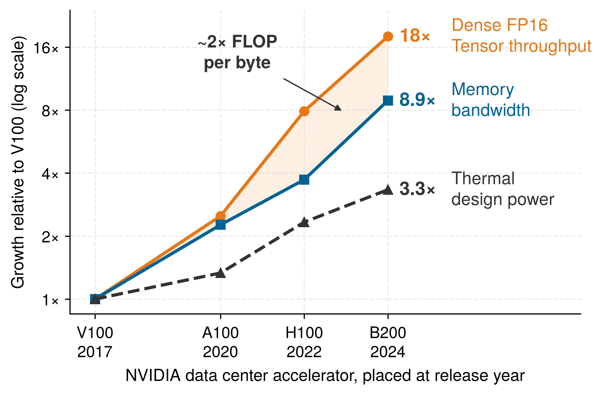
Содержание главы
Содержание
2 Вычислительная инфраструктура
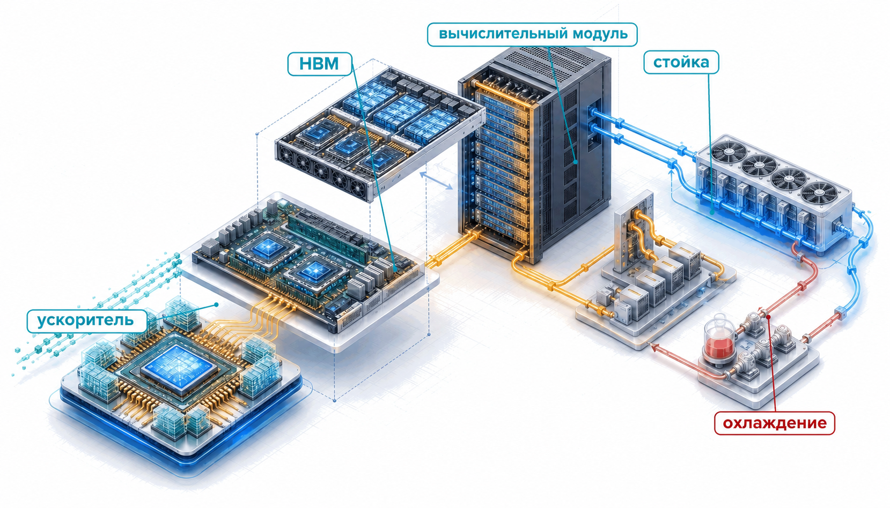
Назначение
Почему именно инфраструктура, а не только алгоритмы, определяет, кто может участвовать в развитии машинного обучения в масштабе?
Системы машинного обучения имеют физическую реальность за пределами своего кода. Публичные алгоритмы не делают крупномасштабное обучение одинаково доступным: их исполнение требует электроэнергии, охлаждения, памяти и пропускной способности связи, которые организации должны построить и поддерживать. Модель, вырастающая из одной машины, превращает локальную ресурсную проблему в общее инфраструктурное обязательство. Покупка дополнительных ускорителей увеличивает вычислительную мощность, но также добавляет передачу данных, тепло и компоненты, отказ которых может прервать коллективную работу. Полезная ёмкость парка зависит от того, можно ли удовлетворить эти запросы совместно. Аппаратное обеспечение, привлекательное само по себе, может значительную часть времени развёртывания ждать данных или работать ниже заявленной скорости. Площадка, способная разместить оборудование, может не иметь электрической или холодильной мощности, чтобы эксплуатировать его с задуманной плотностью. Такие несоответствия расходуют и капитальные, и операционные бюджеты, сокращая количество экспериментов, завершаемых в срок. Инфраструктурные решения переживают отдельные модели, поэтому организации приходится взвешивать эффективность специализации против гибкости, необходимой для будущих рабочих нагрузок. Производительность одной машины остаётся частью этой оценки, но её умножение на число машин не позволяет установить, что выдаст установка в целом. Участие в масштабе, следовательно, зависит от способности превратить купленное аппаратное обеспечение в устойчивую, пригодную к использованию мощность в пределах физических и финансовых ограничений. В терминах C³ физический субстрат задаёт границы вычислений и коммуникаций, внутри которых парк должен координировать полезную работу.
Цели обучения
- Объяснить, как стены памяти, коммуникаций, электропитания и надёжности действуют на последовательных физических масштабах и каскадно распространяются вверх
- Сравнить специализацию GPU, TPU и ASIC как ставку на стабильность рабочей нагрузки против циклов обновления и срока службы площадки
- Различать ёмкость памяти и пропускную способность памяти как отдельные критерии закупки, используя модель «крыши» (roofline) для выявления фаз, ограниченных пропускной способностью
- Вычислить нижние границы задержки на токен, бюджеты памяти и время обучения пода по спецификациям ускорителей и устойчивой утилизации
- Сопоставить тензорный, конвейерный параллелизм и параллелизм по данным с доступной иерархией межсоединений
- Оценивать конструкции стоек и подов по плотности энергопотребления, пределам охлаждения, топологии и ограничениям надёжности площадки
- Выбирать инфраструктуру ускорителей по устойчивой пропускной способности, ограничениям энергопотребления, соответствию рабочей нагрузке и стоимости развёртывания
2.1 Инфраструктурные стены
Законы масштабирования из Законы масштабирования ИИ объясняют, почему спрос обгоняет любое отдельное устройство. Потери снижаются предсказуемо по мере совместного роста параметров, обучающих токенов и вычислений, поэтому каждый шаг в возможностях умножает и память, которую занимает модель, и арифметику, потребляемую её обучением; модели класса GPT-3 уже требуется несколько ускорителей лишь для хранения FP16-весов. Модель, превышающая ёмкость памяти одного ускорителя, заставляет принять аппаратное решение ещё до начала обучения. Добавление ускорителей даёт ёмкость, но и создаёт передачи между устройствами, повышает энергопотребление и связывает прогресс с большим числом компонентов, способных отказать. Привычные одномашинные пределы вычислений и памяти, таким образом, становятся входными данными для проектирования парка.
Четыре повторяющихся физических ограничения проявляются на возрастающих физических масштабах — от узла из восьми GPU до парка из 25 тысяч ускорителей (Рисунок 1). Примерами служат пропускная способность памяти, мощность стойки, коммуникации пода и exposure парка к отказам; рабочая нагрузка и конфигурация определяют, какое ограничение связывает каждый масштаб.
В момент масштаба модель вырастает из одной машины и сталкивается со стенами памяти, энергии и сети, а рост парка открывает её разрыв по надёжности. Четыре ограничения здесь — те же пределы, но увиденные со стороны аппаратуры, которая их накладывает, поэтому глава называет каждое по физическому ресурсу, который исчерпывается. Стена энергии становится стеной мощности — пределом подвода электроэнергии и отвода тепла. Стена сети становится стеной коммуникаций — пределом пропускной способности линков. Разрыв по надёжности становится стеной надёжности — той же exposure, измеренной как интервал между отказами. Стена памяти сохраняет своё имя.
↩︎ Стены памяти, сети и энергии момента масштаба вводятся в Момент масштаба.
Модель 175B служит опорой этой последовательности. Это сквозной для главы экземпляр архетипа A (GPT-4/Llama-3) — плотный трансформер класса GPT-3, обучаемый в смешанной точности с оптимизатором Adaptive Moment Estimation (Adam); его референсный обучающий кластер — 1,024 GPU H100 в 128 узлах по восемь GPU. Выбор ускорителя задаёт скорость вычислений, ёмкость памяти и лимит энергопотребления, которые парк может купить. Узел должен соединить достаточно таких ускорителей, чтобы вместить и исполнить рабочую нагрузку; стойка должна питать и охлаждать их; под должен поддерживать коммуникации и переживать отказы компонентов. Предел каждого уровня становится входом для следующего, поскольку потребление узла определяет, что должна охлаждать стойка, а плотность стойки формирует компоновку пода. Эта последовательность — аппаратный вклад в C³, таксономию вычислений, коммуникаций и координации из Таксономия C$^3$ и основы масштаба. Полезные вычисления парка зависят от затрат на коммуникации и координацию, возникающих на каждом физическом рубеже.
↩︎ Три архетипа рабочих нагрузок парка вводятся в Три системных архетипа.
↪ Параметры сквозной модели и референсный кластер развёртываются в Эталонная рабочая нагрузка.
Четвёртая стена следует соглашению об именовании из Момент масштаба, разделяющему две величины отказов. Отказавший GPU заменяется, а не ремонтируется, поэтому удельная величина для устройства — это среднее время до отказа (MTTF). Узлы и парки продолжают работать через повторяющиеся отказы и замены, поэтому их величина — среднее время между отказами (MTBF). Расчёт надёжности, следовательно, начинается с MTTF одного GPU и заканчивается MTBF узла или парка.
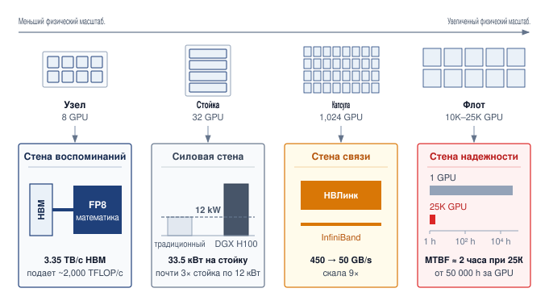
Глава поднимается по той же лестнице масштабов, поэтому четыре стены приходят в том порядке, в каком читается рисунок, — но не по одной стене на раздел. Стена памяти начинается с ускорителя и раскрывается в Глава 2.3. Стена коммуникаций впервые появляется внутри узла, где Глава 2.5.1 измеряет обрыв между локальными и межузловыми линками, и возвращается в масштабе пода в Глава 2.7. Стена мощности связывает стойку (Глава 2.6.1), а стена надёжности накапливается от здоровья узла (Глава 2.5.5) через средства управления площадкой до интервала отказов в масштабе парка в Глава 2.7.1.
2.2 Ускоритель
Последовательность начинается с ускорителя, потому что каждая стена выше него измеряется относительно скоростей, которые одно устройство может вычислять, хранить и потреблять. Покупка ускорителя обязывает парк к рабочей нагрузке и программному стеку дольше, чем длится один эксперимент. Исследовательской группе, часто меняющей операции модели, нужна программируемость; сервису, исполняющему стабильное вычисление с устойчивым объёмом, можно оправдать более высокую специализацию. Привычный компромисс между гибкостью управления и эффективностью арифметики важен здесь потому, что архитектурное несоответствие тиражируется по всему парку. Сравнение программируемых и специализированных ускорителей, следовательно, начинается с того, какая часть рабочей нагрузки и компиляторного стека может оставаться стабильной в течение срока службы развёртывания.
Системный взгляд 2.1: Налог на универсальность
Процессоры общего назначения распределяют кремний между кэшами, управляющей логикой и арифметикой. Предсказатели ветвлений, буферы переупорядочивания и декодеры инструкций поддерживают код с нерегулярным потоком управления и доступом к данным. У матричного умножения более регулярный график, поэтому часть этой гибкости вносит мало вклада в его доминирующее вычисление. Налог на универсальность (принцип «Налог на универсальность») — это площадь и энергия, затраченные на возможности вне доминирующей рабочей нагрузки.
Специализированные ускорители снижают этот налог, заменяя управление общего назначения потоком данных, согласованным с рабочей нагрузкой. В приближённых долях Рисунок 2 арифметическая часть кристалла растёт примерно с 5–10 процентов у CPU до 50–60 процентов у GPU, 70–80 процентов у тензорного процессора (TPU) и свыше 90 процентов у заказной специализированной интегральной схемы (ASIC). Доли отмечают направление, а не измеренные пропорции какого-либо продукта. Вопрос выбора — какую часть полной рабочей нагрузки можно направить на специализированное аппаратное обеспечение.
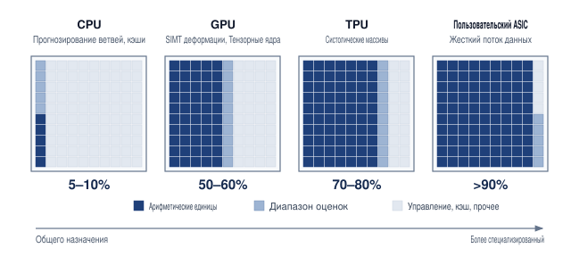
Вдоль спектра Рисунок 2 GPU сохраняют значительную программируемость и дают в 10–100
GPU представляют первый крупный шаг от вычислений общего назначения к крупномасштабному параллелизму при сохранении программируемости. NVIDIA H100, например, содержит 16,896 ядер CUDA, организованных в 132 потоковых мультипроцессоров (SM). SM удерживают тысячи потоков в полёте в рамках модели «одна инструкция — множество потоков» (SIMT), поэтому написанное программистом ядро может выразить любую математическую операцию — от свёрток до внимания и пользовательских функций потерь. Операции нейронных сетей имеют достаточно однородный поток управления, что программируемость почти ничего не стоит GPU на рабочих нагрузках МЛ.
TPU специализируют матричный поток данных, сохраняя другие блоки для операций, которые на него не отображаются. Тензорные процессоры Google используют архитектуру систолического массива1 — фиксированную сетку блоков умножения-накопления (MAC), передающих операнды и частичные результаты между соседними ячейками по регулярному графику, так что локальное переиспользование заменяет выборку инструкций и трафик памяти на каждую операцию. Полный ускоритель по-прежнему нуждается в управлении, перемещении данных и исполнении нематричных операций.
Цена этой эффективности — снижение программируемости. Модели должны компилироваться через Accelerated Linear Algebra (XLA), которая отображает высокоуровневые операции на фиксированный поток данных (dataflow). Рабочие нагрузки с нерегулярным потоком управления или динамическими размерностями могут плохо ложиться на эту архитектуру, а сам процесс компиляции может занимать много времени (от минут до часов для сложных моделей), что замедляет цикл итераций при разработке модели.
Различие моделей программирования между GPU и TPU имеет практические последствия для организационных решений. Исследовательской команде, которая часто добавляет собственные операции — например, новые механизмы внимания или функции активации, — нужен путь реализации их в виде ядер без ожидания поддержки компилятором, и она должна проверять, как каждая платформа выражает и оптимизирует эти операции. Команда, выполняющая стабильные вычисления в масштабе, может сделать больший упор на устойчивой утилизации и стоимости компиляции, амортизируемой на множестве запусков. Поддержка CUDA-ядер и компиляция XLA-графов предлагают разные пути разработки, но ни один из них не даёт преимущества в утилизации без оценки рабочей нагрузки и её реализации. Соответствие ПО аппаратуре должно учитываться в сравнении аппаратных платформ, потому что неподдерживаемая или плохо отображаемая работа может оставить специализированную арифметику простаивающей.
Пример 2.1: История возникновения TPU
Сценарий: В 2013 году Google подсчитала, что если пользователи будут разговаривать с телефонами на Android 3 минуты в день через голосовой поиск, обработка нагрузки инференса на универсальных CPU потребует удвоения вычислительных мощностей дата-центров по запретительно высокой цене (Jouppi и др. 2017 г.).
Диагноз: Стандартные CPU-архитектуры платили тяжёлый налог за универсальность, расходуя значительную площадь кремния и энергию на внеочередное исполнение, предсказание ветвлений и сложные кэши вместо пропускной способности матричного умножения.
Урок для систем: Аппаратная специализация экономически оправдана, когда рабочая нагрузка велика, стабильна и доминируется единственным математическим ядром (MatMul). TPU v1 аппаратно реализовал систолический массив
Заказные ASIC занимают специализированный конец спектра, где экономика кремния может оправдать отказ от большей части универсальной программируемости. Когда организация выполняет стабильную рабочую нагрузку в огромном масштабе, разработка чипа, специально спроектированного под эту нагрузку, может стать экономически рациональной. Заказной ASIC может улучшить энергию на операцию и устойчивую утилизацию на целевой рабочей нагрузке, удаляя функции, которые вычисления не требуют.
Чип Tesla Dojo D1, например, оптимизирован под пространственную и временную структуру моделей зрения на видео. Его сотни тесно связанных вычислительных узлов спроектированы вокруг потребностей потока данных (dataflow) в конвейере компьютерного зрения Tesla, при этом SRAM на кристалле имеет объём, достаточный для удержания пространственных тайлов рядом с вычислительными блоками. Это сокращает повторяющиеся обращения к внешней памяти, которые универсальному GPU потребовались бы для того же вычисления. AWS Trainium идёт другим путём, ориентируясь на широкую категорию обучения Transformer-моделей, а не на единственную модель. Системы Trainium сочетают управляемое компилятором планирование памяти с аппаратно поддерживаемой коллективной коммуникацией, так что распространённые паттерны обучения — синхронизация при тензорном параллелизме и редукции при параллелизме по данным — могут быть оптимизированы на уровне ускорительного fabric, а не обрабатываться исключительно хостовым ПО.
Риск заказного кремния следует из той же специализации. Изменение доминирующей архитектуры моделей может обесценить фиксированный поток данных, если новые операторы, формы тензоров или требования к памяти плохо ложатся на него. Разделение матричных операций между семействами моделей позволяет сохранить часть инвестиций, так что переход от свёрточных нейронных сетей (CNN) к Transformer-моделям сам по себе не делает ускоритель непригодным. Горизонт прогнозирования долог. Даже первый TPU Google — проект высшего приоритета — потребовал 15 месяцев на проектирование, верификацию, производство и развёртывание (Jouppi и др. 2017 г.), и затем чип служит ещё несколько лет внутри объекта, спланированного пережить несколько поколений ускорителей (Глава 2.9). Поэтому решение о дизайне должно предвидеть, какие операции останутся полезными спустя годы после профилирования рабочей нагрузки, и сколько гибкости нужно для остального. В 2015 году мало кто предсказал бы, что основанные на внимании Transformer-модели заменят CNN как доминирующую архитектуру в течение пяти лет — промежутка всего в несколько циклов проектирования ASIC.
Таким образом, заказной кремний — это ставка на стабильность рабочей нагрузки, и делают такую ставку обычно те организации, у которых достаточно масштаба, чтобы оправдать крупную первоначальную инвестицию в дизайн, и достаточный объём рабочей нагрузки, чтобы амортизировать стоимость NRE (nonrecurring engineering — неповторяющиеся инженерные затраты) на множестве чипов. Google может оправдать стоимость разработки TPU, потому что высоконагруженные сервисы — Поиск, рекомендации YouTube и спам-фильтрация Gmail — могут амортизировать общую платформу ускорителей. Исследовательская лаборатория с несколькими сотнями GPU оправдать такие инвестиции не может.
Ставка окупается, когда рабочие нагрузки стабильны. TPU первого поколения показал 30–80
2.2.1 Вычислительные системы размером с пластину
Нарезка кремниевой пластины на отдельные чипы заставляет каждый обмен между ускорителями покидать кристалл и пересекать более медленные и энергоёмкие связи уровня корпуса, платы или стойки. Wafer-scale engines (WSE) избегают этих пересечений, сохраняя большую часть кремниевой пластины целой как единый непрерывный вычислительный fabric размером с обеденную тарелку — как в Cerebras WSE-3, — вместо того чтобы нарезать пластину и заново соединять части через корпуса и платы.
Для конфигурации WSE-3 2024 года Cerebras сообщила о 900,000 ядрах, оптимизированных для ИИ, 44 GB распределённой SRAM на кристалле и 21 PB/s совокупной пропускной способности памяти в своей регистрационной документации (Cerebras Systems 2024 г.). Эти спецификации не сравнимы напрямую с пиковыми FLOP/s GPU-кластеров или пропускной способностью высокоскоростной памяти (HBM), потому что архитектуры открывают разные потоки данных, организации памяти, точности и отображения рабочей нагрузки. Прочный результат даёт топологическое сравнение. Внутрипластинные связи позволяют избежать передач на уровне корпуса, платы и стойки для работы, которая ложится на fabric.
Многопроцессорный шасси с несколькими GPU и wafer-scale engine проводят границы корпуса и платы в разных местах (Рисунок 3). Восемь GPU шасси обмениваются состоянием через NVLink — связь GPU-to-GPU от NVIDIA, — а чипы NVSwitch объединяют эти связи в один fabric. Передачи на другие узлы пересекают внешнюю сеть. Wafer-scale engine вместо этого осуществляет маршрутизацию между 900,000 внутрипластинными ядрами на пластине 300 мм. Дефектно-устойчивая маршрутизация позволяет fabric использовать рабочие области несмотря на локальные дефекты производства. В документированной конфигурации CS-2 двенадцать блоков питания в избыточной схеме 9+3 могли подводить до 23 кВт к WSE-2 (Systems 2021 г.). Этот специфичный для конфигурации дизайн иллюстрирует, почему подвод питания и охлаждение при масштабе пластины требуют системного жидкостного охлаждения, а не обычного радиатора ускорителя.
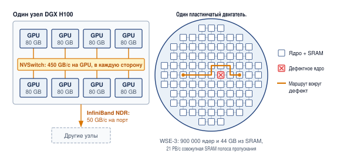
Wafer-scale engines специализируют физическую архитектуру, сохраняя гибкость вычислительной модели благодаря программируемым ядрам. Этот компромисс обменивает сложность производства и дефектно-устойчивую маршрутизацию на внутрипластинный fabric, которая заменяет межкорпусную и межплатную коммуникацию между ядрами, хотя объём SRAM и подача данных всё ещё ограничивают, какие части рабочей нагрузки могут извлечь выгоду из этой локальности. Там, где wafer-scale engine устраняет границу корпуса, не нарезая пластину, чиплетные архитектуры сохраняют корпус и меняют то, что внутри него.
2.2.2 Чиплетные ускорители
Когда монолитный кристалл процессора вырастает до предела оптической экспозиции литографического сканера, добавить больше арифметических блоков или контроллеров HBM на едином куске кремния становится невозможно без сшивки экспозиций с более низким выходом годных и резко возросшей стоимостью. Чиплетные архитектуры, образцом которых служат NVIDIA Blackwell и серия AMD Instinct MI300, пробивают этот потолок, разбивая процессор на меньшие кристаллы, соединённые высокоскоростным межкристальным соединением (die-to-die) на общем корпусе-подложке. Этот подход устраняет два физических ограничения монолитных дизайнов.
Во-первых, максимальный размер кристалла ограничен пределом фотолитографического поля ретикла — наибольшей площадью, которую литографический сканер может экспонировать за одну засветку. Предел определяется оптикой фотолитографии: оптическая система сканера с экстремальным ультрафиолетом (EUV) проецирует изображение на поле размером всего около
Во-вторых, выход годных при производстве зависит от площади кристалла и плотности дефектов. По стандартной пуассоновской модели дефектов доля кристаллов без дефектов экспоненциально падает с ростом площади при фиксированной плотности дефектов, поскольку единственный критический дефект в любом месте кристалла может сделать его непригодным. Меньшие кристаллы подвергают каждому дефекту меньшую площадь, а тестирование позволяет отобрать заведомо исправные чиплеты до сборки корпуса, так что один дефект отбраковывает маленький кристалл, а не кристалл размером с ретикл. Полученное преимущество по выходу годных нужно взвешивать против стоимости и выхода годных корпуса, его соединений и дополнительного тестирования. Чиплеты меняют производственный компромисс; они не гарантируют меньшую стоимость единицы вычислений.
Компромисс — это межкристальное соединение. Коммуникация между чиплетами внутри корпуса быстрее, чем между корпусами (NVLink), но медленнее, чем внутри единого монолитного кристалла (внутрикристальная mesh-сеть). Рабочие нагрузки, порождающие частую мелкозернистую коммуникацию между вычислительными элементами (например, операции, разделяющие данные между несоседними SM), могут испытывать штраф по задержке, когда эти SM находятся на разных чиплетах. Производители GPU смягчают это, делая межкристальную связь прозрачной для программиста, так что ПО видит единственный логический GPU независимо от лежащей в основе чиплетной топологии. Понимание того, почему современные ускорители достигли этой многокристальной границы, требует проследить, как последующие поколения GPU и TPU расходовали свой однокристальный транзисторный бюджет. свой однокристальный транзисторный бюджет.
2.2.3 Эволюция архитектур GPU
Дата-центровые GPU NVIDIA показывают ставку на специализацию, делаемую по одному поколению за раз. Каждое поколение добавляло аппаратуру, нацеленную на узкое место, выявленное производственными ML-нагрузками, а не просто больше транзисторов того же рода. Архитектура Volta (2017) представила Tensor Core первого поколения — выделенное аппаратное обеспечение матричного умножения-накопления, размещённое рядом с существующими CUDA-ядрами, — потому что обучение нейронных сетей проводит большую часть времени в матричных умножениях. Volta ускорила этот доминирующий паттерн, не отказываясь от универсальной программируемости, делавшей GPU привлекательными для исследований.
Архитектура Ampere (2020) расширила поддержку Tensor Core форматами TF32 (формат с диапазоном FP32 и меньшей точностью) и BF16, а также представила Multi-Instance GPU (MIG), который разделяет один GPU на до семи изолированных экземпляров, чтобы несколько задач инференса могли использовать его совместно. Наиболее важным для инфраструктуры изменением стал NVLink третьего поколения в Ampere, удвоивший пропускную способность на GPU до 600 GB/s против 300 GB/s у Volta — это пропускная способность, которая нужна тензорному параллелизму, поскольку он разделяет матрицы каждого слоя между GPU.
Архитектура Hopper (2022) добавила Transformer Engine — её рецепты FP8 и интеграция с autocast, то есть программное обеспечение, выбирающее точность каждой операции, выполняют поддерживаемые операции Transformer в FP8 с управляемым масштабированием, сохраняя более высокую точность там, где этого требует настроенный рецепт или реализация. Hopper также представила NVLink 4.0 с 900 GB/s на GPU и NVLink Switch, благодаря чему связность NVLink вышла за пределы 8-GPU конфигурации.
Архитектура Blackwell (2024) продолжает путь чиплетов из Глава 2.2.2, выходя за предел ретикла 858 mm². B200 объединяет два кристалла GPU в одном корпусе через соединение «кристалл—кристалл» (die-to-die) с пропускной способностью 10 TB/s — достаточно быстрое, чтобы для многих операций два кристалла выглядели для программного обеспечения как один логический GPU, а NVLink пятого поколения снова удваивает внутринодовую пропускную способность до 1800 GB/s на GPU. Его рейтинг в Таблица 1 — это значение FP8, поэтому для сравнения на FP16 или BF16 следует использовать меньшее значение вендора для этой точности.
Таким образом, каждое поколение целится в узкое место, которое обнажил его предшественник. Volta добавила выделенное матричное оборудование, Ampere расширила поддержку смешанной точности, Hopper добавила FP8 для рабочих нагрузок Transformer, а Blackwell обошла предел размера кристалла двумя кристаллами в одном корпусе. Поскольку архитекторы выбирают эти цели, профилируя рабочие нагрузки своей эпохи, проектирование ускорителей следует за архитектурой моделей — именно поэтому рабочие нагрузки Transformer формируют дизайн ускорителей с 2017 года.
Поскольку поколения ускорителей сменяются быстрее, чем помещения, в которых они установлены, дата-центр должен предвидеть циклы обновления до прибытия первой стойки. Эти поколения также изменили пропускную способность соединений и энергопотребление (Таблица 1). От V100 до B200 плотная пропускная способность FP16 выросла в 18
| Архитектура | Год | Ключевая новация | Пиковая тензорная | TDP | Пропускная способность NVLink |
|---|---|---|---|---|---|
| Volta (V100) | 2017 | Первые Tensor Core | 125 TFLOP/s FP16 | 300 W | 300 GB/s |
| Ampere (A100) | 2020 | Многоточечность, MIG | 312 TFLOP/s FP16 | 400 W | 600 GB/s |
| Hopper (H100) | 2022 | Transformer Engine, FP8 | 1,979 TFLOP/s FP8 | 700 W | 900 GB/s |
| Blackwell (B200) | 2024 | Два кристалла, NVLink 5 | 4,500 TFLOP/s FP8 | 1000 W | 1,800 GB/s |
Поскольку Таблица 1 смешивает пики FP16 и FP8, её эффективность на ватт следует читать при фиксированной точности. При плотном FP16 деление пиковой пропускной способности каждого поколения на его TDP (Таблица 2) даёт прирост от V100 к B200 в 5.4× пиковой пропускной способности на ватт — упомянутое выше более чем пятикратное значение — против 18× в «сырой» пропускной способности. Остальная часть сырого прироста пришлась на лимит мощности, который сам вырос в 3.3×. Та же осторожность применима и к соседним поколениям. Пик FP8 у H100 на ватт TDP составляет 6.8× от значения FP16 у V100, но половина этого коэффициента объясняется сменой точности, а при равной точности FP16 прирост составляет 3.4×. Поэтому объектам приходится учитывать как более высокую мощность устройств, так и бо́льшую арифметическую ёмкость, что связывает эту тенденцию со степенным барьером в Глава 2.6.1.
| Поколение | Пиковые TFLOP/s плотного FP16 | TDP (W) | TFLOP/s на ватт | Относительная эффективность |
|---|---|---|---|---|
| V100 (2017) | 125 TFLOP/s (FP16) | 300 W | 0.42 TFLOP/s/W | 1× |
| A100 (2020) | 312 TFLOP/s (FP16) | 400 W | 0.78 TFLOP/s/W | 1.9× |
| H100 (2022) | 989 TFLOP/s (FP16) | 700 W | 1.41 TFLOP/s/W | 3.4× |
| B200 (2024) | 2250 TFLOP/s (FP16) | 1000 W | 2.25 TFLOP/s/W | 5.4× |
Четыре поколения из Таблица 2 лежат на более широкой и более медленной тенденции. Среди 64 моделей ускорителей, выпущенных с 2017 года, для которых Epoch AI приводит и плотную FP16-производительность тензорных операций, и TDP — от всех крупных производителей, пиковая вычислительная эффективность на ватт росла примерно на 1.2× в год, удваиваясь примерно каждые 4 года (Рисунок 5) (Epoch AI 2026 г.b). Старшие модели NVIDIA улучшались быстрее — в 5.4× от V100 до B200 за семь лет (отмеченный ранее прирост фиксированной точности), — потому что передовые устройства первыми осваивают новые техпроцессы и тензорные форматы. Парк с циклом обновления в 4 года поэтому получает за каждый цикл около 2× прироста пиковой вычислительной эффективности на ватт на общей тенденции. Пиковые соотношения ограничивают то, что может дать обновление, а решает, какую часть этого реализует конкретный парк, только измерение на уровне рабочей нагрузки.
↪ Как эти пиковые соотношения используются при решении об обновлении парка, разбирается в Скрининг обновления.
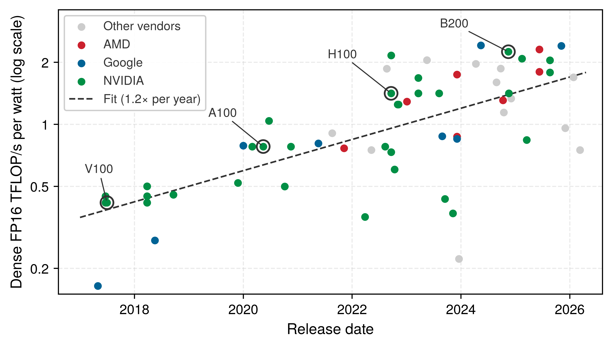
2.2.4 Эволюция архитектур TPU
Более быстрая арифметика на чип не поможет кластеру, если межчиповые коллективные операции по-прежнему должны проходить через CPU хоста и универсальные PCIe-коммутаторы. Google в развитии TPU атаковал это узкое место напрямую: начиная со второго поколения единицей проектирования стал не отдельный чип, а мультистойковый под. Пока GPU делают упор на пиковую пропускную способность одного чипа и гибкость программного обеспечения (CUDA), каждый чип TPU начиная с TPU v2 содержит выделенные межчиповые линии связи (ICI), маршрутизирующие трафик напрямую между ускорителями, не затрагивая CPU хоста.
Последовательность поколений показывает, как этот подход «под прежде всего» двигался от инференса к обучению. После предназначенного только для инференса TPU v1 из истории возникновения, TPU v2 (2017) и TPU v3 (2018) сместили архитектуру в сторону обучения. Они добавили bfloat16 (BF16), избавляющийся от проблем динамического диапазона стандартного FP16, и масштабировали концепцию пода до тех пор, пока под TPU v3 не объединил 1,024 чипов с суммарным пиком BF16 около 126 PFLOP/s. TPU v4 (2021) расширил ту же логику на саму сеть: он добавил оптический коммутатор, позволяющий перенастраивать физическую топологию под разные рабочие нагрузки, ввёл блоки SparseCore, ускоряющие поиск эмбеддингов, и поднял пропускную способность BF16 на чип до 275 TFLOP/s.
TPU v5p (2023) продолжил этот под-масштабный дизайн для высокопроизводительного обучения. Он обладает 459 TFLOP/s вычислений BF16, 95 GB памяти HBM2e с пропускной способностью 2,760 GB/s и двунаправленной пропускной способностью ICI 1,200 GB/s на чип. Показатель ICI важен при выборе оборудования, потому что коллективные операции, такие как AllReduce, выполняются по этим линиям. AllReduce объединяет значения, например суммы градиентов, по группе ускорителей и возвращает результат каждому участнику. В AllReduce разрабатывается модель сложности и выбор алгоритмов, определяющие, когда такие обмены ограничивают пропускную способность обучения. Под-ориентированный дизайн складывался от поколения к поколению TPU (Таблица 3).
| Поколение | Год | Ключевая инновация | Пик BF16 | HBM | Пропускная способность ICI (суммарная, одно направление) |
|---|---|---|---|---|---|
| TPU v1 | 2015 | Систолический массив (инференс) | 92 TOPS* | — | — |
| TPU v2 | 2017 | Высокопропускная память | 46 TFLOP/s | 16 GB | 248 GB/s |
| TPU v3 | 2018 | Жидкостное охлаждение, под-масштаб | 123 TFLOP/s | 32 GB | 280 GB/s |
| TPU v4 | 2021 | Оптический коммутатор, SparseCore | 275 TFLOP/s | 32 GB | 300 GB/s |
| TPU v5p | 2023 | Большие поды, HBM2e | 459 TFLOP/s | 95 GB | 600 GB/s |
Линии GPU и TPU следуют двум философиям проектирования (Таблица 1, Таблица 3). Эволюция GPU упаковывает всё больше арифметики — в форматах тензорных ядер всё меньшей точности — на один корпус и переходит к чиплетам, когда одиночный кристалл достигает предела размера. Эволюция TPU рассматривает под как продукт. Арифметика на чип важна, но межчиповая пропускная способность и перенастраиваемость определяют, какую её часть может использовать крупная задача обучения. Обе линии сочетают локальные вычисления с улучшениями памяти и соединений; они лишь размещают эти ресурсы по-разному. Взгляд на масштаб склада из Переход к компьютеру масштаба склада рассматривает пропускную способность чипа, коллективных операций и перенастраиваемость как части одной системы (Barroso и др. 2019 г.), поэтому полезное сравнение — как каждый кандидат поддерживает целевую рабочую нагрузку в этой полной системе.
2.2.5 Матричные блоки
Обе линии концентрируют пиковую арифметику в специализированных матричных блоках, называемых тензорными ядрами (Tensor Cores) на GPU NVIDIA и матричными умножающими блоками (MXU) на TPU Google. Тензорное ядро выполняет инструкции умножения матриц с накоплением вида
С 528 тензорными ядрами на чипе (4 на SM, 132 SM) H100 достигает своего пика плотных FP16/BF16 вычислений 989 TFLOP/s. Важный системный момент — архитектурная специализация, а не точный подсчёт инструкций за такт. Кристалл отдаёт большую часть своей вычислительной площади плотным тайловым матричным операциям, а не универсальному скалярному исполнению.
MXU Google организуют блоки умножения с накоплением в систолический массив, представленный в TPU, о котором шла речь выше. В потоковой модели данных MXU с неподвижными весами тайл весов остаётся резидентным в массиве, пока через него проходят активации. Каждый операнд, извлечённый из памяти, поэтому переиспользуется целой строкой или столбцом ячеек — это то переиспользование, которое ядро Tensor Core получает, размещая тайлы в разделяемой памяти и регистрах. Каждый чип TPU v5p содержит два ядра TPU (Google называет их TensorCores, имя не связано с тензорными ядрами NVIDIA) с четырьмя MXU
Для нашей модели 175B объём работы, достигающий специализированных вычислительных блоков, определяют компилятор и поддержка на уровне ядер. CUDA-ядра могут объединять матричные операции с работой на уровне потоков, а XLA отображает граф вычислений на потоковую модель данных TPU. В обоих технологических стеках слияние (fusion) удерживает промежуточные результаты в регистрах или разделяемой памяти вместо многократной записи в HBM. Устойчивая пропускная способность поэтому зависит от покрытия операций и переиспользования данных, а не только от самих матричных блоков.
Определение 2.1: Тензорное ядро
Тензорное ядро — это специализированный аппаратный блок ML-ускорителя, выполняющий слияние умножения матриц с накоплением
- Значимость: тензорные ядра обеспечивают основную часть пика FP16/BF16 у H100 — 989 TFLOP/s (и ~1,979 TFLOP/s на FP8), примерно в 14.8× больше, чем ~67 TFLOP/s, обеспечиваемые одними лишь ядрами CUDA (векторными). Это сравнение меняет и исполнительный блок, и точность. Редукции и поэлементные операции в нормализации слоёв или softmax требуют другой модели производительности; их пропускная способность не является фиксированной долей матричного пика.
- Отличие: тензорное ядро — это блок фиксированных функций для умножения матриц с накоплением, а не более быстрое универсальное ядро. CUDA-ядра выполняют произвольную скалярную и векторную работу; тензорные ядра выполняют только тайловый примитив
, поэтому пиковая и фактическая пропускная способность так резко расходятся в зависимости от рабочей нагрузки. - Типичная ошибка: частое заблуждение — что все операции GPU выигрывают от тензорных ядер. Операции должны отображаться на тайловое вычисление
, чтобы использовать эти блоки. Поэлементные активации, нормализация и поиск эмбеддингов имеют иные требования к исполнению и доступу к данным. Фиксированный штраф 10–30 на FLOP — не модель, независимая от рабочей нагрузки, для их времени исполнения.
| Характеристика | CPU | GPU (H100) | TPU (v5p) | Кремниевая пластина | Заказной ASIC |
|---|---|---|---|---|---|
| Вычислительное ядро | Скалярное/векторное | Тензорное ядро | Систолический массив | Ядро в стиле RISC | Фиксированный поток данных |
| Исполнение | По инструкциям | SIMT | Управляемое данными | Поток данных | Аппаратно заданное |
| Управление памятью | Кэш | L1/L2 + HBM | Scratchpad | SRAM на чипе | Управляется компилятором |
| Гибкость | Экстремальная | Высокая | Умеренная | Высокая | Низкая |
Во всём спектре — от CPU до специализированных ASIC — архитектуры различаются арифметическим ядром, моделью исполнения и управлением памятью (Таблица 4). Для модели с 175B выбор между этими столбцами определяется не только пиковым числом FLOP/s. Исследовательской лаборатории, еженедельно экспериментирующей с новыми архитектурами, можно оправдать «налог за универсальность» GPU его гибкостью. Организация, годами развёртывающая фиксированный Transformer в масштабе, может обнаружить, что эффективность потока данных TPU или энергетическое преимущество специализированного ASIC доминируют в совокупной стоимости. Спектр ускорителей — в конечном счёте экономический вопрос: какой долей гибкости можно пожертвовать при стабильности рабочей нагрузки. Даже когда арифметический движок H100 достигает 1,979 TFLOP/s в рекламируемом режиме низкой точности, подходящие операции приближаются к этой пропускной способности лишь тогда, когда данные поступают в вычислительные блоки достаточно быстро. Поэтому выбор ускорителя требует второго сравнения — между потребностью рабочей нагрузки в данных и системой памяти, питающей арифметику.
2.3 Стена памяти
Инференс с одним запросом на нашей модели с 175B имеет нижнюю границу задержки, определяемую доставкой данных из памяти. Её веса занимают 350 GB в FP16. При плотном авторегрессионном декодировании с батчем размера 1 каждый сгенерированный токен использует все эти веса, занимаемый объём которых намного превышает ёмкость на чипе, поэтому каждый токен требует их потоковой передачи из памяти. Предположим гипотетически, что один H100 мог бы вместить их. Передача всех 350 GB через HBM этого устройства со скоростью около 3.35 TB/s занимает более 100 мс на токен — достаточно долго, чтобы стать заметной паузой между сгенерированными словами. Ни один реальный H100 не вмещает такую модель, поэтому эта цифра — нижняя граница потребности в пропускной способности, а не прогноз задержки в развёртывании, но она показывает, что стена памяти — это задержка, которую может заметить пользователь, а не абстрактное архитектурное соотношение.
Эта граница отражает структурное расхождение. Масштабирование транзисторов умножает пропускную способность логики намного быстрее, чем межкристальные соединения успевают поставлять операнды. В фазах с малым повторным использованием данных, где каждый извлечённый байт обслуживает мало операций, специализированные матричные блоки поэтому регулярно проводят больше времени в ожидании байтов, чем в выполнении вычислений. Это расхождение и есть стена памяти (Wulf и McKee 1995 г.). В этих фазах потоки весов и активаций больших нейронных сетей делают пропускную способность памяти, а не пиковые вычисления, определяющим ограничением.
↪ Диагностическая таблица, сопоставляющая симптомы дефицита пропускной способности памяти, дефицита вычислений и дефицита задержки с оптимизациями, которые помогают, развивается в Диагностика узких мест.
Три рычага ослабляют это ограничение. Шардирование распределяет веса по большему числу путей памяти, так что каждый путь передаёт меньше байтов. Квантизация уменьшает сами байты. Повторное использование позволяет каждому извлечённому байту обслуживать больше арифметики, что делают возможными формирование батчей и разбиение на тайлы на чипе. Модель «крыши» (Roofline), резюмированная для одной машины в Оценка «крыши», проверяет, может ли получившаяся подача данных питать арифметические блоки. Её точка перегиба (ridge point) — пиковая арифметика, делённая на пропускную способность памяти — это число операций, которые ядро должно выполнить на каждый извлечённый байт, прежде чем ограничением станет арифметика, а не память. Точка перегиба будет постоянно появляться в анализе ниже, и Глава 2.3.2 оценивает её для H100. То, где каждая архитектура размещает свои байты, определяет, сколько пропускной способности могут задействовать эти рычаги (Рисунок 6), потому что перемещение активного рабочего набора ближе к арифметике увеличивает доступную пропускную способность, одновременно уменьшая ёмкость, которая может там размещаться.
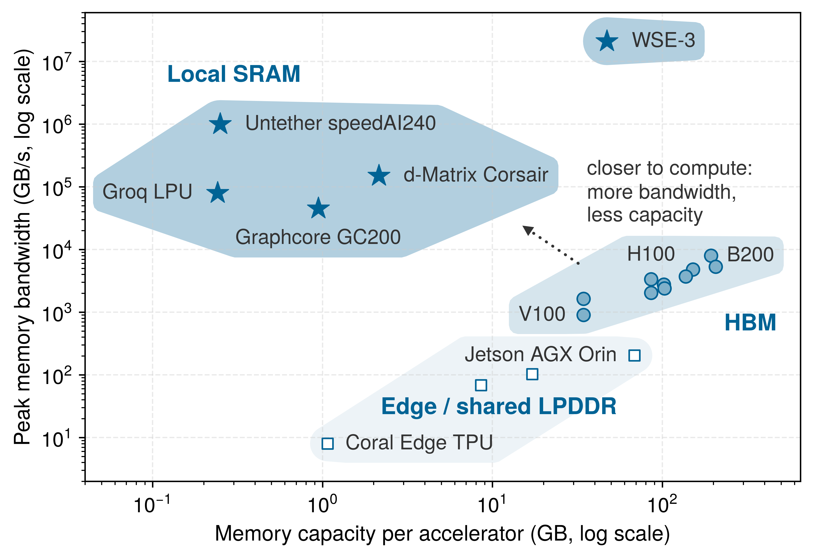
Ускорители не выстраиваются вдоль единой оси производительности; они распадаются на структурные кластеры в зависимости от того, где каждая архитектура размещает свои байты (Рисунок 6). Периферийные устройства в нижней полосе держат память дешёвой и компактной, но их пропускная способность остаётся ограниченной, и устройства архетипа C (Federated MobileNet) находятся именно в этом углу. Однако определяющим ограничением каждого такого устройства является не его место на этой карте памяти, а лимит энергопотребления, ограничивающий вычисления. Устройство класса телефона поддерживает лишь 2 W — 3 W, тогда как тепловой пакет одного H100 примерно в 233× больше. Поэтому федеративный парк растёт за счёт добавления устройств, а не за счёт перехода на более высокие ярусы памяти, и в масштабе парка, как отмечалось в Три системных архетипа, прогресс ограничивают также коммуникации и то, какие устройства участвуют в каждом раунде.
↪ Энергетические, тепловые и ограничения по памяти периферийных устройств класса телефона развиваются в Проектные ограничения.
Внутри дата-центровых ярусов HBM переносит память на корпус ускорителя, обеспечивая достаточную ёмкость и достаточную пропускную способность для активного состояния модели. Конструкции с локальной SRAM придвигают рабочий набор ещё ближе к арифметике, покупая экстраординарную пропускную способность ценой намного меньшей резидентной ёмкости. Из двух вариантов следующим инженерным ответом является HBM, потому что это ярус с наивысшей пропускной способностью, способный держать десятки и сотни гигабайт рядом с вычислительным кристаллом, хотя он и не самая быстрая память в системе.
2.3.1 HBM и стена памяти
H100 может исполнять 1,979 TFLOP/s низкоточной матричной арифметики, но пример потоковой передачи весов с батчем 1 для нашей модели с 175B даёт слишком малое повторное использование, чтобы приблизиться к этому пику. В модели с нижней границей пропускной способности его арифметические блоки использовали бы значительно менее 1 процента матричного пика, пока веса передаются потоком. Ограничивающий ресурс — скорость доставки относительно умножения. Когда веса помещаются благодаря шардированию или сжатию, путь обслуживания всё равно должен доставлять активные шарды с требуемой скоростью. Дополнительная арифметическая ёмкость сама по себе не поднимает связывающий потолок пропускной способности. HBM увеличивает эту подачу данных внутри корпуса.2
HBM — нижний на-корпусной ярус иерархии памяти ускорителя, под регистровым файлом, L1 и разделяемой памятью (SRAM),3 и кэшем L2. Совокупная пропускная способность падает от сотен TB/s на регистрах до 3.35 TB/s у 80 GB HBM3 на H100, тогда как ёмкость растёт в противоположном направлении.
↪ Иерархия памяти одиночного ускорителя — от регистров и разделяемой памяти через HBM до памяти хоста — собрана для справки в Иерархия памяти ускорителя.
Разрыв в пропускной способности между регистрами и HBM составляет примерно 100
↪ Арифметическая интенсивность и проводимая ею граница между нагрузками, ограниченными памятью и вычислениями, собраны для справки в Граница интенсивности вычислений.
Определение 2.2: HBM
HBM — это архитектура трёхмерно-штабелированной DRAM, используемая ML-ускорителями: сквозные кремниевые переходные отверстия (TSV) соединяют кристаллы памяти вертикально внутри каждого стека, а широкая шина через межложе корпуса (interposer) связывает стек с процессором.
- Значимость: HBM3 в H100 обеспечивает около 3.35 TB/s пропускной способности памяти (примерно в 17× больше, чем DDR5 с её ~200 GB/s) при затратах около 4 пДж/бит для стека класса HBM2 (O’Connor и др. 2017 г.) против примерно 20 пДж/бит для DRAM вне корпуса (Horowitz 2014 г.). Эта пропускная способность задаёт член
в «железном законе» одиночной машины, приведённом в Отображение «железного закона». Граничная точка (ridge point) FP16 для H100 — примерно FLOP/байт, поэтому любой оператор с арифметической интенсивностью ниже 295 FLOP/byte (например, декодирование одиночного запроса, выполняющее два FLOP на каждые два байта прочитанных весов FP16) остаётся ограниченным памятью даже с HBM. - Отличие: в отличие от устанавливаемой в сокет памяти DDR, которая передаёт данные через сантиметры проводников печатной платы (PCB), стек HBM располагается рядом с процессором на корпусе. Его вертикальные соединения микрометрового масштаба могут быть в 1,000
короче проводников платы, но полный путь от процессора до памяти проходит и через межложе. Широкий и короткий интерфейс на корпусе повышает пропускную способность без пропорционального роста скорости передачи на каждый вывод. - Типичная ошибка: распространено заблуждение, что HBM решает проблему «стены памяти». HBM не устраняет стену, а лишь отодвигает её. От V100 (900 GB/s с 125 TFLOP/s FP16) до H100 (3.35 TB/s с 989 TFLOP/s FP16) пиковая производительность вычислений
росла быстрее, чем пропускная способность HBM.
Традиционная память DDR подключается к процессору через выводы на краю печатной платы. Каждый DIMM обменивается данными по 64-битной шине, и даже с несколькими каналами (8 каналов — типично для высокопроизводительного серверного CPU) современный сервер достигает лишь примерно 200 GB/s суммарной пропускной способности памяти.
Физическое расстояние от слота DIMM до кристалла процессора измеряется сантиметрами, и каждый сантиметр медного проводника вносит ёмкость, затухание сигнала и потери энергии. При скоростях передачи DDR5 (4,800–6,400 MT/s на вывод) схемы восстановления сигнала должны компенсировать это искажение, расходуя значительную энергию на каждый переданный бит. Повышение скорости передачи на таких длинных проводниках требует всё большей мощности на восстановление сигнала, образуя кривую убывающей отдачи, к которой DDR5 уже приближается.
HBM обходит плато-уровневую деградацию сигнала за счёт 2.5D-интеграции (Рисунок 7). Вместо передачи сигналов горизонтально через сантиметры дорожек материнской платы по узкой 64-битной шине она штабелирует кристаллы DRAM вертикально и размещает стек рядом с процессором на кремниевом межложе.
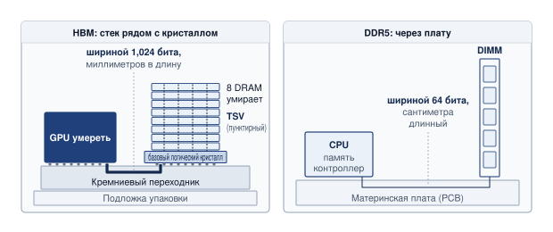
Вертикальное штабелирование меняет способ масштабирования пропускной способности. Вместо того чтобы гонять сигналы быстрее по длинным медным проводникам (подход DDR, дающий убывающую отдачу), HBM умножает число параллельных сигнальных путей. Один стек HBM соединяет методом крепления 8–12 кристаллов DRAM, прошивая их тысячами сквозных кремниевых переходных отверстий (TSV),4 — медных столбиков, протравленных через каждый кристалл, — образуя 1024-битный интерфейс на стек против 64 бит у канала DDR5. Этот интерфейс, в 16
Более короткий путь также снижает энергию передачи на бит примерно в 5
Контрольная точка 2.1: HBM и стена памяти
Эти вопросы проверяют, ясны ли физические преимущества трёхмерно-штабелированной памяти:
| Метрика | CPU-локальная DRAM хоста (DDR5) | GPU-локальный HBM ускорителя (H100 HBM3) | Коэффициент масштабирования |
|---|---|---|---|
| Механизм | 2D-проводники PCB | 3D-штабелирование кристаллов | - |
| Размещение | DIMM в сокете | На корпусе (подложка) | Физическая близость |
| Пропускная способность | ~200 GB/s | ~3.35 TB/s | быстрее в ~17× |
| Ширина интерфейса | 64-бит | 1024-бит на стек | шире в 16 |
| Энергия | ~20 пДж/бит | ~4 пДж/бит | эффективнее в ~5 |
Это преимущество в пропускной способности имеет цену. HBM стоит примерно $10–$15 за GB против около $3 за GB для серверной памяти DDR5. Для H100 с 80 GB памяти HBM3 только память составляет примерно $800–$1,200 себестоимости ускорителя. Для B200 с 180 GB памяти HBM3e стоимость памяти возрастает до $1,800–$2,700 за ускоритель, делая HBM одним из самых дорогих компонентов системы.
Упаковка добавляет производственные этапы сверх изготовления самих кристаллов памяти. Процесс штабелирования включает утончение, совмещение, крепление и вертикальное межсоединение, поэтому выход годных стеков зависит и от кристаллов, и от их сборки. Эти выходы перемножаются: стек HBM3e высотой 12 кристаллов пригоден, только если успешно выполнены каждый кристалл и каждый этап крепления, так что даже небольшие потери на шаге перемножаются в выход годных целых стеков ниже выхода одного кристалла DRAM. Кремниевое межложе также должно вместить процессор и несколько стеков HBM. При том что каждый стек занимает примерно 100 mm², иллюстративный крупный корпус, сочетающий процессор размером с ретикл и несколько стеков, нуждается в межложе площадью свыше 1,000 mm². Тестирование, возможности ремонта и выход годных сборки влияют на стоимость; число кристаллов само по себе не определяет, сколько целых стеков останется пригодными. Ограничением является не только стоимость, но и предложение. Производство HBM сконцентрировано у нескольких производителей, чьи этапы штабелирования требуют специализированного оборудования, поэтому доступность памяти может задавать темп поставок ускорителей — риск по срокам, который планирует Сроки предоставления мощностей как операционный риск.
Для нашей модели 175B этот компромисс между стоимостью и ёмкостью объясняет, почему ускорители обычно предлагают 80 GB — 192 GB HBM, тогда как хост-сервер предоставляет 512 GB — 2 TB DDR. Быстрая память хранит состояние, к которому обращение происходит на каждом шаге (осколки весов, активации, градиенты и обычно шардированное состояние оптимизатора), а дешёвая память хранит буферы промежуточного размещения, очереди загрузки данных и более «холодное» состояние, вытесненное из-за нехватки ёмкости, например выгруженные осколки состояния оптимизатора.
Граница между тем, что размещается в HBM, а что — в DDR, является проектным параметром обучающих фреймворков, и управление ею — одна из задач стратегий шардирования и выгрузки ZeRO (Zero Redundancy Optimizer). Шардирование разделяет состояние оптимизатора, градиенты и параметры между рабочими узлами; выгрузка размещает более «холодное» состояние в DRAM хоста или энергонезависимой памяти NVMe (Non-Volatile Memory Express), когда ограничивающим фактором становится ёмкость HBM. Ошибка в определении этой границы в любую сторону обходится дорого. Размещение слишком большого объёма данных в HBM расходует дорогую ёмкость впустую, а размещение слишком большого объёма в DDR создаёт простои из-за ограниченной пропускной способности, из-за которых простаивают арифметические блоки.
↪ Эффективное по памяти шардирование состояния оптимизатора, градиентов и параметров развивается в Эффективное по памяти параллелизм по данным с ZeRO и FSDP.
Опорный пример 2.1: Архетип B (DLRM в масштабе): стена ёмкости
Архетип A (GPT-4/Llama-3) до сих пор демонстрировал сторону пропускной способности стены памяти. Архетип B (DLRM в масштабе) обнажает сторону ёмкости — только что рассмотренную границу между быстрой и дешёвой памятью. Таблица эмбеддингов объёмом 10 TB и более не помещается в 80 GB HBM одного H100, как не помещается она и в суммарную HBM одного узла с 8 GPU (640 GB паспортной ёмкости, около 687 GB в десятичных байтах). Одна лишь ёмкость требует минимум 15 таких узлов ещё до учёта репликации, запаса для «горячих» таблиц и баланса пропускной способности. Шардирование делает маршрутизацию поиска и обмен результатами частью пути запроса. Обмен AllToAll отправляет различные части разным участникам; его трафик зависит от батча и размещения. Таким образом, преодоление предела ёмкости порождает второй вопрос — о пропускной способности и задержке.
Энергетическая стоимость перемещения данных
Перемещение данных доминирует и по энергии. При 3.97 пДж на бит — энергии доступа HBM2, оценённой O’Connor и др. (2017 г.), — чтение одного 16-битного операнда стоит около 64 pJ. Одна операция умножения-накопления FP16 стоит примерно 1.5 pJ на техпроцессе 45 нм (Horowitz 2014 г.). Таким образом, «сырое» чтение операнда стоит около 42× от энергии арифметики, которую оно питает, — пока разбиение на тайлы и повторное использование не распределят эту стоимость на множество операций. Для DRAM вне корпуса при примерно 20 пДж на бит то же чтение обходится ещё примерно в 5× дороже. Именно из-за этого соотношения ускорители отводят столько кремния повторному использованию данных, и именно поэтому рычаги, сокращающие объём передаваемых байтов — такие как квантизация и слияние ядер, — повышают не только скорость, но и энергоэффективность. Физика перемещения данных расширяет этот учёт по границам иерархии на коллективные коммуникации, а Арифметическая интенсивность и энергетическая «крыша» превращает эти удельные стоимости на байт в энергетическую модель «крыши».
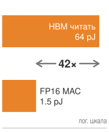
Перемещение данных многократно превосходит арифметику по энергозатратам.
Поколения HBM и граница масштабирования
HBM рос вместе с размерами моделей, но гораздо медленнее, чем число параметров, — поэтому дефицит ёмкости постоянно выталкивает модели за пределы одного устройства. Каждое поколение увеличивает число кристаллов в стеке, скорость передачи на вывод и суммарную ёмкость на стек. Ожидаемое поколение HBM4 в Таблица 6 отмечает границу масштабирования: впервые с момента появления HBM ширина интерфейса удваивается с 1024 до 2048 бит, потому что роста скорости на выводах уже недостаточно для поддержания необходимого роста пропускной способности. Более широкая шина также требует большей площади интерпозера для разводки — одна из причин, по которой корпуса ускорителей растут вместе с целевыми показателями пропускной способности.
| Метрика | HBM2e (A100) | HBM3 (H100) | HBM3e (B200) | HBM4 (будущее) |
|---|---|---|---|---|
| Пиковая пропускная способность | ~2.04 TB/s | ~3.35 TB/s | ~8 TB/s | 12–16 TB/s (прогноз) |
| Типичная ёмкость | 40–80 GB | 80–96 GB | 180 GB | 288 GB+ |
| Ширина интерфейса | 1024-bit | 1024-bit | 1024-bit | 2048-bit |
| Высота стека | 8 кристаллов | 8–12 кристаллов | 12 кристаллов | 16 кристаллов |
Поколения из Таблица 6 увеличивают и ёмкость, и пропускную способность для нашего сквозного примера, причём важнее всего шаг к HBM3e. Последовательно используя десятичные байты: A100 с 85.9 GB HBM2e вмещает 24.5 percent весов нашей модели в 175B параметров (FP16). H100 с 85.9 GB HBM3 вмещает ту же долю, поставляя данные на 64 percent быстрее. B200 с 193.3 GB HBM3e поднимает резидентную долю до 55.2 percent при примерно 8 TB/s. Поскольку даже HBM3e оставляет почти половину модели вне одного корпуса, в узле по-прежнему требуется несколько ускорителей (Глава 2.5).
Квантизация меняет картину ёмкости для инференса. Хранение весов в INT8 или INT4 уменьшает занимаемый объём памяти в два или четыре раза, а Глава 2.8.1 подробно разбирает, сколько ускорителей потребуется сквозной модели в этом случае. Ограничения по ёмкости, вынуждающие использовать многоускорительные узлы для обучения — где обычно требуется точность FP16 или BF16, — существенно смягчаются для инференса, где часто приемлема квантизация INT8 или INT4; это одна из причин, по которым инфраструктура обучения и инференса имеют различные оптимальные конфигурации.
Суммарная пропускная способность корпуса масштабируется числом стеков HBM, которые можно разместить рядом с кристаллом процессора на кремниевом интерпозере. H100 имеет 5 стека HBM3, каждый из которых обеспечивает примерно 670 GB/s, что в сумме даёт 3.35 TB/s. Корпус GPU класса B200 (Blackwell) использует 8 стека HBM3e для суммарной пропускной способности около 8 TB/s. Число стеков ограничено площадью интерпозера, доступной для размещения HBM. Каждый стек HBM занимает примерно 100 mm² площади интерпозера, и общий интерпозер должен вместить как кристалл(ы) процессора, так и все стеки HBM. Большие интерпозеры позволяют разместить больше стеков HBM (а значит, получить более высокую пропускную способность и ёмкость), но они дороже и сложнее в производстве.
Ограничение площади интерпозера создаёт конкретное проектное противоречие. Увеличение кристалла процессора (больше Tensor Cores, больше SM) оставляет меньше площади интерпозера для стеков HBM, потенциально снижая пропускную способность. Уменьшение кристалла процессора (меньше Tensor Cores) освобождает площадь интерпозера под больше HBM, но снижает пиковую вычислительную производительность. Оптимальный баланс зависит от положения целевой рабочей нагрузки относительно точки перегиба «крыши». Вычислительно-ограниченные нагрузки, интенсивность арифметики которых лежит выше этой точки, выигрывают от большего кристалла процессора (больше Tensor Cores). Нагрузки ниже неё, ограниченные пропускной способностью, выигрывают от большего числа стеков HBM — так что интенсивность арифметики рабочей нагрузки предсказывает, по какую сторону баланса она окажется, ещё до того, как будет закоммичен любой кремний.
Пропускная способность памяти и задержка токена
Добавление или модернизация стеков HBM повышает как ёмкость памяти (сколько гигабайт может хранить корпус), так и пропускную способность памяти (сколько терабайт в секунду она может выдать), отвечающие на два разных закупочных вопроса. Ёмкость определяет, помещаются ли веса модели с запасом под остальное живое состояние; пропускная способность ограничивает, насколько быстро модель может работать, когда перемещение данных задаёт критический путь. Плотный авторегрессионный декодинг при размере батча 1 изолирует второй вопрос, поскольку каждый вес используется для одного токена перед загрузкой следующего веса. Следующие три вычисления спускаются от сквозной модели к Llama-3 70B. Её веса FP16 занимают два H100 вместо пяти у сквозной модели, а последующее сравнение с H200 требует модели, поведение которой при обслуживании может изменить реальная модернизация памяти; арифметика переносится на модель 175B масштабированием байтов.
Инженерный расчёт 2.1: Физика задержки токена
Задача: Модель «только весов» декодинга с батчем 1 для Llama-3 70B использует 141.2 GB весов FP16. Чтобы изолировать два требования к ресурсам, предположим гипотетическую ёмкость, достаточную для их хранения, при сохранении вычислительной скорости и тракта HBM, эквивалентных H100. Какой член даёт бо́льшую оценку времени: арифметика или передача весов?
- Время вычислений: каждый токен требует
операций с плавающей точкой. При 989 TFLOP/s пиковой производительности Tensor Cores FP16/BF16 арифметика занимает . - Время памяти: загрузка 141.2 GB весов из HBM при 3.35 TB/s занимает
.
Системный вывод: на член памяти приходится 99.7 percent суммы этих двух идеализированных времён. Это соотношение указывает на оценку, ограниченную пропускной способностью; оно не является измерением циклов, проведённых в простое. Повышение одной только вычислительной производительности почти не меняет эту оценку. Более быстрый тракт памяти снижает нижнюю границу передачи весов, тогда как фактическая задержка токена включает также остальной трафик памяти, коммуникации и издержки исполнения, здесь опущенные.
Если зафиксировать загрузку весов и менять только систему памяти, становится видно, насколько напрямую каждое поколение HBM сдвигает нижнюю границу. Для той же модели FP16 в 70.6B с 141 GB весов нижняя граница потоковой передачи по одному тракту составляет примерно 141 GB/2.04 TB/s = 69.2 ms при пропускной способности уровня A100. При пропускной способности уровня H100 (член памяти из ноутбука) это 141 GB/3.35 TB/s = 42.1 ms, а при уровне B200 — 141 GB/8 TB/s = 17.7 ms. Нижняя граница снижается почти пропорционально каждому приросту пропускной способности. Как и в ноутбуке, каждый случай изолирует один тракт HBM, эквивалентный одному ускорителю, хотя полная модель FP16 не помещается на одном A100 или H100. Эти границы позволяют проверить пропускную способность памяти на соответствие целевой задержке; улучшится ли задержка токена в том же соотношении, зависит от остальной работы на критическом пути запроса.
Тот же нижний предел в масштабе модели с триллионом параметров показывает предел одного только роста пропускной способности — даже при прогнозируемых 12–16 TB/s у корпуса класса HBM4. Плотная модель с 1 трлн параметров требует примерно 2 TB для хранения весов в FP16. Прокачка этих весов через один путь класса B200 при около 8 TB/s даёт 2000 GB/8 TB/s = 250 ms на одну загрузку весов при батче 1. При предполагаемых 16 TB/s этот нижний предел становится примерно 125 ms. Ни один из путей не показал, что способен удержать модель целиком, и даже более быстрый предел ограничивает один путь примерно восемью токенами в секунду на один запрос. Следовательно, отзывчивый сервис с триллионом параметров должен распределять веса по многим путям памяти, уменьшать их за счёт пониженной точности или и то и другое; какая комбинация подходит, зависит от целевой задержки и от того, какое качество сохраняет пониженная точность. Самая чистая проверка того, насколько обновление памяти улучшает реальную задержку, — сравнение двух ускорителей, различающихся только системой памяти.
Инженерный расчёт 2.2: Стена памяти: H100 против H200
Сравнение NVIDIA H100 и H200 изолирует обновление системы памяти для больших языковых моделей (LLM). Хотя оба чипа имеют одинаковые вычислительные ядра (одинаковый пиковый TFLOP/s), H200 обеспечивает в 1.4× большую пропускную способность памяти и в 1.8× больший объём HBM.
Это сравнение использует модель Llama 3 с 70.6B параметрами, длиной последовательности 2,048 и размером батча 1. В обоих случаях сохраняются веса FP16 и гипотетическая соглашение о ёмкости из блокнота 2.1: каждый случай прокачивает полный объём данных через один эквивалентный ускорителю путь HBM, хотя модель не помещается на одном H100. Сравнение изолирует задержку пути, а не устанавливает два осуществимых развёртывания на одном устройстве.
Приведённое ускорение получено из модели задержки обслуживания, у которой межтокенная задержка складывается из двух слагаемых сверх времени прокачки весов: чтения кэша ключ-значение, хранящего состояние внимания для предыдущих токенов запроса, и фиксированных на слой накладных расходов на запуск ядер, поэтому это не просто отношение пропускных способностей. Оценка только по весам даёт ориентир. Её слагаемое памяти составляет 99.7 percent суммы времени вычислений и передачи, так что уменьшение этого слагаемого обещает выигрыш, близкий к отношению пропускных способностей HBM: 4.8 TB/s
Системный вывод: Для смоделированной конфигурации модель задержки предсказывает ускорение H200 в 1.4× по сравнению с H100 при равном пиковом арифметическом пропуске. Её согласие с отношением пропускных способностей следует из доминирующего слагаемого памяти этой модели, поэтому проверкой стала бы измеренная пара систем. Изменение размера батча, длины контекста или разбиения требует оценки новой конфигурации; эта оценка не устанавливает единое узкое место для всех авторегрессионных моделей.
Смоделированная доля времени памяти, 99.7 percent в этом примере, указывает на ограниченность памяти этой рабочей нагрузки при сделанных допущениях. Нагрузка с такой зависимостью от памяти почти ничего не выигрывает от большего числа TFLOP/s и выигрывает почти пропорционально от большего числа TB/s — именно это предсказывает сравнение с H200, так что полезной метрикой для закупок в этом режиме оказывается пропускная способность за доллар, а не пиковая арифметика. По-прежнему нужна измеренная шкала времени исполнения, чтобы определить, сколько передачи перекрывается с вычислениями и какие задержки остаются открытыми, что отделяет расчёт для отбора оборудования от прогноза производительности. Для обучающих нагрузок повторное использование весов на большем числе токенов может, наоборот, сместить ограничение в сторону арифметического пропуска; модель «крыши» (roofline) проверяет потолки вычислений и пропускной способности для фактической операции и формы батча, прежде чем какая-либо из характеристик станет метрикой для закупок.
2.3.2 Модель «крыши» (roofline)
Расчёт токенной задержки в блокноте 2.1 делает пропускную способность памяти релевантной метрикой для закупок при нагрузке с батчем 1. Модель «крыши» (roofline) Уильямса, Уотермана и Паттерсона (Williams и др. 2009 г.) проверяет, сохраняется ли этот диагноз при изменении формы батча, точности или ускорителя, сопоставляя арифметическую интенсивность нагрузки с потолками вычислений и пропускной способности кандидата.
Для H100 (989 TFLOP/s FP16, 3.35 TB/s HBM) точка хребта составляет около 295 FLOP/byte. Большинство операторов инференса LLM лежат существенно ниже этого порога, поэтому модель «крыши» остаётся первым диагностическим инструментом для определения того, что улучшит производительность — больше вычислений или больше пропускной способности. Величина, размещающая нагрузку на графике, — арифметическая интенсивность, введённая выше при разбиении на тайлы; она записывается как
↪ Размещение измеренных ядер на «крыше» по арифметической интенсивности развито в Разбор шага вглубь.
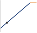
Декодирование лежит глубоко в области, ограниченной памятью, далеко ниже хребта.
Как выводится в обзорной части по одной машине в Оценка «крыши», модель «крыши» выражает максимально достижимую производительность нагрузки как меньшее из двух потолков:
В Уравнение 1 ниже точки хребта нижним является наклонный потолок пропускной способности, растущий с
Определение 2.3: Точка хребта
Точка хребта — это арифметическая интенсивность МЛ-ускорителя, при которой потолок пропускной способности памяти пересекается с потолком вычислений
- Значимость: Это порог эффективности ускорителя. Ниже точки хребта нижним смоделированным потолком
задаёт пропускная способность; выше него нижний потолок задаёт арифметика. - Отличие: В отличие от пиковых FLOP/s, которые описывают только горизонтальный потолок, точка хребта описывает баланс между арифметикой и доставкой данных из памяти в архитектуре. Рост точки хребта между поколениями оборудования означает, что вычисления растут быстрее пропускной способности, что затрудняет достижение утилизации.
- Типичная ошибка: Частое заблуждение — что у ускорителя одна точка хребта. В реальности она зависит от точности. Поскольку
выше для INT8, чем для FP32, при постоянной точка хребта для INT8 значительно выше, требуя большего повторного использования данных для насыщения оборудования.
Нагрузки машинного обучения попадают в разные области графика «крыши» в зависимости от операции и конфигурации батча, а не от семейства моделей. Авторегрессионное декодирование одного запроса прокачивает полный тензор весов (два байта на параметр в FP16) из HBM, чтобы выполнить две операции с плавающей запятой на параметр — арифметическая интенсивность около 1 FLOP/byte, далеко ниже точки хребта H100 в 295 FLOP/byte. Расчёт токенной задержки в блокноте 2.1 показал, что арифметика завершается за микросекунды, а перемещение весов занимает миллисекунды. Любой другой режим в Таблица 7, включая префилл — фазу обработки промпта запроса до начала декодирования, — возникает из повторного использования каждого байта, прочитанного из HBM, в большем числе операций. Декодирование также читает кэш ключ-значение (KV) — сохранённые ключи и значения внимания предыдущих токенов, — и поскольку у каждого запроса свой кэш, формирование батчей не размазывает этот трафик.
| Фаза рабочей нагрузки | Источник повторного использования | Идеализированная интенсивность | Что её повышает |
|---|---|---|---|
| Декодирование, батч 1 | Нет; каждый вес обслуживает один токен | 1 FLOP/byte | Формирование батчей из запросов, веса меньшей точности |
| Декодирование, батч 32 | Каждое чтение весов обслуживает все запросы в батче | 32 FLOP/byte | Размер батча, пока трафик кэша ключ-значение не станет доминирующим |
| Префилл, промпт на 512 токенов | Каждое чтение весов обслуживает каждый токен промпта | 512 FLOP/byte | Длина промпта и размер батча |
| Обучение свёрточной сети (ResNet-50) | Фильтры переиспользуются по пространственным позициям и по батчу | 200 FLOP/byte | Глубина каналов, раскладка тензоров, слияние операторов |
| Обучение LLM, 2048 локальных токенов | Каждое чтение весов обслуживает каждый токен на устройстве | 2,048 FLOP/byte | Размер локального микробатча и длина последовательности |
| Внимание | Ключи и значения переиспользуются по запросам | Зависит от формы, по обе стороны хребта | Длина последовательности, размерность головы, разбиение на тайлы SRAM |
Интенсивности в таблице — идеализированные счётчики повторного использования, классифицирующие фазу исполнения и форму батча, а не семейство моделей, а раскладка тензоров, слияние, точность и резидентность кэша сдвигают измеренную точку. Какое изменение на уровне ядер тогда помогает — больше повторного использования и меньше байтов ниже хребта или более дешёвая операция выше него — это диагноз, который развивает Разбор шага вглубь.
Измеренная точка нагрузки ниже её потолка на «крыше» требует дальнейшей диагностики. Зависимости, недостаточный объём параллельной работы, нерегулярные обращения, синхронизация и лимиты мощности — всё это может мешать ядру приблизиться к потолку. Разрыв задаёт вопрос для профилирования; он не устанавливает, что оптимизация ПО способна вернуть всю разницу.
Целые фазы разбросаны ещё шире, чем отдельные операторы. Идеализированные интенсивности декодирования и обучения различаются в 2,048×, поэтому одно и то же оборудование показывает в них сильно разную утилизацию. Декодирование с батчем 1 лежит около 1 FLOP/byte, далеко слева от хребта и глубоко ограниченное пропускной способностью памяти, тогда как обучение с большим батчем около 2,048 FLOP/byte пересекает хребет и достигает вычислительной «крыши» (Рисунок 8). Точка обучения предполагает, что 2048 токенов на одном ускорителе делят каждое чтение весов — локальное повторное использование, которое большой глобальный батч сам по себе не гарантирует; поэтому она считает токены, а не последовательности, и локальный, а не глобальный батч. Это контрастный случай, а не универсальная интенсивность обучения. Фактическое размещение требует подсчёта байтов на моделируемом уровне памяти с учётом форм тензоров, слияния и повторного использования.
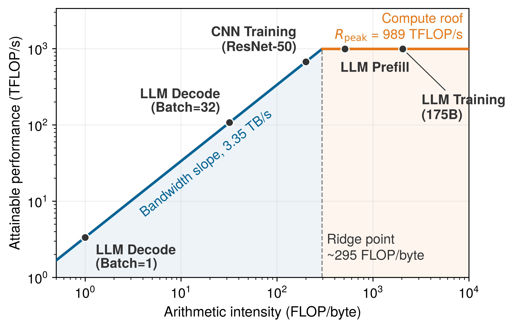
Строки таблицы, относящиеся к формированию батчей, можно превратить в оценку утилизации. При обслуживании инференса формирование батча из нескольких запросов сдвигает рабочую точку вправо на графике, поскольку каждое чтение весов умножается на большее число активаций. В рамках оценки по одному только трафику весов декодирование с батчем 1 на H100 может использовать не более 0.34 percent от пика FP16. При размере батча 64 каждое чтение весов из HBM обслуживает все запросы батча, интенсивность возрастает до 64 FLOP/byte, а оценка поднимается примерно до 22 percent от пика — выигрыш в 64×, при котором рабочая точка всё ещё остаётся ниже гребня. Линейный рост справедлив только в этом приближении; на практике обе цифры снижают трафик кэша ключ-значение, который формирование батчей не амортизирует, трафик активаций и ограничения ёмкости. У выигрыша есть цена. Ожидание сборки батча может вносить задержку из-за очереди, хотя политика обслуживания может вместо этого отправлять батч меньшего размера, когда приближается директивный срок по задержке. Системы обслуживания должны тщательно балансировать этот компромисс между пропускной способностью (крупные батчи, более высокая утилизация) и задержкой (меньшие батчи, более быстрый отклик на каждый запрос).
Для закупок парка оборудования модель «крыши» служит скрининг-тестом, а не прогнозом пропускной способности. Она отсекает апгрейды, поднимающие несвязующий потолок, а зазор под соответствующим потолком указывает на работу, ещё требующуюся в программном обеспечении или коммуникациях. Для работающей модели два конца ландшафта дают противоположные ответы по оборудованию. Ёмкость и пропускная способность памяти отсеивают неосуществимые варианты ускорителей, а для оставшихся кандидатов определение размера парка требует ещё и устойчивой скорости вычислений на той точности, которую способна использовать рабочая нагрузка, в рамках бюджета памяти узла, его интерконнекта и лимита энергопотребления площадки.
Пример 2.2: Анализ предельной производительности: обучение и инференс
Сценарий: Инженерная команда оценивает варианты оборудования для обслуживания (декодирование с размером батча 1) и обучения (размер батча 2048) модели с 175B параметров на GPU H100 (точка гребня 295.2 FLOP/byte).
Диагноз: Модель по трафику весов даёт арифметическую интенсивность декодирования одиночного токена
Системный урок: Выбор оборудования начинается с арифметической интенсивности фазы и занимаемого объёма памяти. Смоделированная фаза обучения выигрывает от вычислительной мощности, тогда как декодирование с батчем 1 — от пропускной способности. Устойчивая пропускная способность при требуемом качестве и задержке определяет, оправдывает ли какое-либо из этих преимуществ свою стоимость.
Контрольная точка 2.2: Диагностика по модели предельной производительности
Команда обслуживает модель с 13 млрд параметров с размером батча 1 на H100 и наблюдает 25 ms на токен. Профилирование показывает низкую утилизацию тензорных ядер при декодировании.
2.4 Устойчивые вычисления и точность
Парк, размер которого определён по заявленной матричной пропускной способности, может не уложиться в срок обучения, когда операции не могут использовать заявленную точность или держать матричные блоки из Глава 2.2.5 занятыми. Поэтому определение размера парка требует знания и того, какие матричные операции имеют право на заявленную скорость, и какой пропускной способностью эти операции обладают на протяжении всей рабочей нагрузки.
Поддержка точности Tensor Core расширялась с каждым поколением, прослеженным в Глава 2.2.3, — от FP16 на Volta до FP8 на Hopper, — поскольку обучение и инференс нейронных сетей терпят более низкую численную точность, чем раньше считалось. Рецепты Transformer Engine и FP8 autocast решают, какие поддерживаемые операции исполняются в FP8, записывая диапазоны тензоров и применяя масштабные коэффициенты, чтобы значения умещались в формат, но они не устанавливают численную безопасность слоя на этой точности. Поэтому политика точности остаётся решением по конфигурации и валидации программного обеспечения, что FP8 для распределённого обучения раскрывает для обучения.
Соотношение между численной точностью и пропускной способностью оборудования важно для планирования инфраструктуры, потому что оно напрямую влияет на то, сколько полезной работы каждый ускоритель может выполнить в секунду. Представления с более низкой точностью используют меньше бит на число, что даёт два усиливающих друг друга преимущества: больше чисел умещается в ту же ёмкость HBM (снижая давление на память), и арифметические блоки могут обрабатывать больше операций за такт (повышая пропускную способность). Внутри битов формата экспонента задаёт диапазон представимых значений, а мантисса — насколько тонко они разрешаются. Каждый формат, поддерживаемый ускорителем класса H100, открывает свою пиковую плотную скорость и играет привычную роль в обучении или инференсе (Таблица 8).
| Формат | Биты | Экспонента | Мантисса | Пик H100 (dense) | Типичное применение |
|---|---|---|---|---|---|
| FP32 | 32 | 8 | 23 | ~67 TFLOP/s | Главные веса, вычисление потерь |
| TF32 | 19 | 8 | 10 | 494.5 TFLOP/s | Обучение (вариант NVIDIA по умолчанию) |
| BF16 | 16 | 8 | 7 | 989 TFLOP/s | Обучение, дообучение |
| FP16 | 16 | 5 | 10 | 989 TFLOP/s | Обучение с масштабированием потерь |
| FP8 (E4M3) | 8 | 4 | 3 | 1,979 TFLOP/s | Прямой проход, веса |
| FP8 (E5M2) | 8 | 5 | 2 | 1,979 TFLOP/s | Обратный проход, градиенты |
| INT8 | 8 | N/A | N/A | 1,979 TOPS | Квантизация после обучения |
Для обучения многие рабочие нагрузки используют стандартный рецепт смешанной точности, который разделяет точность хранения и арифметики: главные веса хранятся в FP32, а прямой и обратный проходы исполняются в BF16 или FP16 на полной скорости Tensor Core. Обучение в FP16 опирается на масштабирование потерь, при котором потеря умножается, чтобы малые градиенты оставались в узком диапазоне FP16. Примеры памяти узла в Глава 2.5.3 предполагают сохранённые градиенты FP16; реализации, хранящие полный буфер аккумуляции FP32, должны добавить этот буфер в свой пиковый бюджет. Рецепты FP8, описанные ранее, продолжают то же разделение ещё на один шаг, исполняя подходящие матричные операции в восьми битах, пока главные веса остаются в FP32.
↪ Ширина каждого формата в байтах и память на параметр при обучении в смешанной точности собраны для справки в Числовая точность и память обучения.
Практический вывод для проектирования парка состоит в том, что спецификации пиковых TFLOP/s зависят от точности. H100 выдаёт 989 TFLOP/s в FP16, но вдвое больше (1,979 TFLOP/s) в FP8. Таким образом, FP8 удваивает заявленный арифметический потолок для поддерживаемых операций на том же оборудовании. Полный цикл обучения выигрывает меньше, когда коммуникации, трафик памяти или операции более высокой точности остаются на критическом пути. Поэтому вычислительная точность — основной рычаг оптимизации для планировщиков инфраструктуры, наряду с её влиянием на точность модели.
Выход на пиковую пропускную способность требует баланса конвейера. Подготовка и переиспользование операндов должны снабжать арифметические блоки с той скоростью, которую требует операция. Слияние ядер и тайлированное внимание, такое как FlashAttention, улучшают этот баланс, удерживая промежуточные значения на чипе вместо отдельных обращений к HBM; механизмы собраны для справки в Средства на уровне ядра. Для нашей модели с 175B параметров выигрыш на уровне парка зависит от того, какую долю времени шага занимают затронутые ядра. Более быстрое ядро внимания сокращает шаг лишь пропорционально доле внимания в нём — тот же учёт по Амдалу, который ограничивает любое частичное ускорение.
2.4.1 Пик против устойчивой пропускной способности
Цикл обучения, заложенный в бюджет из 1,000 GPU-часов по даташит-значениям TFLOP/s, на практике потребует 2,500 GPU-часов, когда рабочая нагрузка поддерживает лишь 40 percent пиковой пропускной способности. Поэтому планирование инфраструктуры разделяет пиковую пропускную способность (максимальную скорость для указанной вендором операции и точности) и устойчивую пропускную способность (то, что выдаёт полная рабочая нагрузка). Пиковые TFLOP/s предполагают, что подходящие арифметические блоки остаются занятыми при заявленных условиях разреженности, точности и тактовой частоты; они не включают простои памяти, неподходящие операции, коммуникации или накладные расходы программного обеспечения. Доли устойчивой производительности поэтому варьируются в зависимости от формы модели, размера батча, точности, реализации и масштаба. Зазор возникает из нескольких источников, каждый из которых представляет отдельное физическое или программное ограничение.
Простои памяти происходят, когда тензорные ядра завершают умножение текущего тайла до того, как следующий тайл загружен из HBM. Даже с пропускной способностью HBM у H100 в 3.35 TB/s тензорные ядра могут потреблять данные быстрее, чем HBM успевает их доставлять при определённых размерностях матриц, создавая такты простоя, пока арифметические блоки ждут данные.
Зависимостные простои возникают, когда одна операция должна завершиться прежде, чем начнётся следующая, из-за чего часть вычислительных элементов простаивает. В слое Transformer вычисление внимания должно завершиться, прежде чем начнёт работу полносвязная сеть, а вычисление полносвязной сети — прежде чем начнётся внимание следующего слоя. Эти последовательные зависимости создают кратковременные периоды, когда часть аппаратных ресурсов не используется, даже внутри одного ускорителя. Когда модель разбита на последовательные стадии на разных ускорителях (конвейерный параллелизм), те же зависимости превращаются в пузыри конвейера — простои, в течение которых целая стадия ждёт предшественницу. Разбиение каждого батча на микробатчи сокращает потери, подавая последующие микробатчи на стадии, которые в противном случае ожидали бы. Термин «пузырь конвейера» относится только к этому межустройственному случаю, планирование которого раскрывается в Распределённое обучение. На уровне инфраструктуры вывод таков: пиковая пропускная способность предполагает постоянную загрузку каждого устройства, тогда как реальное обучение включает зависимостные паузы, снижающие устойчивую утилизацию.
Операции AllReduce, применяемые в тензорном параллелизме, и синхронизация градиентов, используемая в параллелизме по данным, также могут задерживать зависящие от их результатов вычисления; даже когда коммуникация перекрывается с вычислениями на отдельных потоках, операции, зависящие от результата коллективной операции, не могут начаться, пока передача не завершится. Отправка ядер, выделение памяти и управление со стороны фреймворка также расходуют время, и когда каждое ядро завершается за микросекунды, накладные расходы на запуск сопоставимого размера становятся сопоставимой долей шага, и лишь трасса исполнения «хост–устройство» может отделить их от медленной арифметики или обращений к памяти. Достижение высокой устойчивой утилизации — это, по существу, задача минимизации времени простоя Tensor Cores между операциями, поэтому и существуют слияние ядер (kernel fusion) и специализированные библиотеки ядер, такие как FlashAttention и Transformer Engine.
Последний источник разрыва — само устройство, и никакое изменение ядер его не устраняет. Разброс устройств, иногда называемый «кремниевой лотереей», означает, что номинально одинаковые ускорители удерживают разные частоты. Поведение частоты зависит также от настроенного лимита энергопотребления, температуры и рабочей нагрузки, поэтому медленного участника не следует диагностировать по маркировке или паспортной частоте. В синхронном обучении участник, завершающий зависимую работу с опозданием, задерживает всю свою группу процессов — множество процессов, совместно выполняющих коллективную операцию. Одно устройство, удерживающее частоту примерно на 2,5 процента ниже соседей, может замедлить каждый синхронный шаг, в котором оно участвует, вплоть до этой доли, поскольку остальные участники ждут его на каждом коллективе. Поэтому системы управления парком отслеживают устойчивую пропускную способность каждого устройства и могут переводить хронически отстающих в пулы, например на обслуживание инференса, где они не блокируют синхронизированную группу. Профилирование должно установить, что вызвало задержку — локальная арифметика, память, коммуникация или лимит энергопотребления, — прежде чем менять размещение или заменять оборудование.
Планирование мощностей должно опираться на измеренную или консервативно смоделированную устойчивую скорость, а не на пиковую спецификацию. Запуск, оценённый в 1 000 GPU-часов по пиковой производительности, потребует
↪ MFU как мера программного goodput, один из факторов ML-goodput на уровне парка, раскрывается в Программная полезная производительность и его мера.
Физика ускорителя задаёт конкретную проблему. Наша модель 175B требует 350 GB памяти только для весов в FP16, а обучающее состояние в духе Adam поднимает потребность до нескольких терабайт, как только добавляются моменты оптимизатора, градиенты и активации. Один H100 предоставляет 80 GB HBM. Ни один отдельный ускоритель не способен вместить эту модель — это экземпляр разрыва по ёмкости памяти (принцип «Разрыв по ёмкости памяти»), при котором требования передовых моделей к памяти перерастают HBM отдельного ускорителя. Система должна расшириться до следующего физического уровня: узла.
2.5 Узел
Работающей модели требуется больше памяти, чем предоставляет один ускоритель. Узел объединяет несколько ускорителей в одном шасси, но каждый сохраняет собственную память; разделение работы порождает коммуникацию, которую должна выдержать локальный fabric. Тензорный параллелизм делит операцию между ускорителями, конвейерный параллелизм назначает последовательные стадии модели разным группам, а параллелизм по данным назначает разные обучающие примеры репликам модели, обновления которых должны быть объединены. Эти стратегии порождают разные схемы трафика, и внутренний fabric узла определяет, какие из них он способен передавать с той скоростью, которую требует разбиение.
Объединение ускорителей решает проблему ёмкости лишь при условии, что соединение между ними достаточно быстрое, чтобы группа вела себя как одна машина, а не как несколько машин, обменивающихся сообщениями. Веса модели 175B занимают не менее пяти ускорителей, а полное обучающее состояние — целый узел из 8 H100 и более, так что часть состояния модели обязана находиться на других чипах. В зависимости от разбиения исполнение обменивается частичными результатами, активациями, градиентами или фрагментами параметров. Будут ли эти обмены дешёвыми или разорительными, зависит от локального fabric — потому узел и есть первый уровень масштаба, где спецификации ускорителя значат меньше, чем провода между ускорителями. Обучающая система может по необходимости сочетать тензорный параллелизм, шардирование оптимизатора и выгрузку памяти, чтобы уложиться в бюджет ёмкости, и каждая стратегия предъявляет разные требования к соединению.
Определение 2.4: Узел
Узел — это физический серверный шасси обучающего ML-кластера, агрегирующее несколько ускорителей (обычно 8) через высокоскоростное внутриузловое соединение (NVLink или ICI) и образующее физическую границу упаковки и отказа. Домен быстрой коммуникации может совпадать с одним шасси или распространяться на несколько — в зависимости от fabric.
- Значимость: Пропускная способность NVLink внутри узла DGX H100 достигает 900 GB/s двунаправленно, или 450 GB/s на направление, тогда как межузловой InfiniBand NDR обеспечивает 50 GB/s — разрыв в 9× на направление, ограничивающий, где может выполняться каждая стратегия параллелизма. Для этой топологии DGX H100 частые тензорно-параллельные коллективы тяготеют к внутриузловому домену NVLink; конвейерный параллелизм может охватывать узлы, если сеть выдерживает трафик активаций на границах стадий. Узел — также основной домен отказа. Отказ одного узла в задаче массово-синхронного параллельного обучения, где работники движутся синхронно на барьерах шагов, простаивает весь кластер до восстановления.
- Отличие: В отличие от отдельного ускорителя (с быстрой пропускной способностью HBM, но ограниченной ёмкостью), узел агрегирует 8
ёмкости HBM и 8 вычислений одного чипа. Этого достаточно для размещения крупных фрагментов весов FP16 (8 80 GB = 640 GB на DGX H100), но недостаточно, чтобы удержать полное обучающее состояние Adam в HBM. - Типичная ошибка: Распространённое заблуждение — что узлы в распределённом обучении работают независимо. В массово-синхронном параллельном обучении все узлы синхронно связаны на каждом барьере шага. Деградация производительности одного узла (из-за троттлинга от нагрева, неисправного NIC или медленного чтения из хранилища) задерживает весь кластер и снижает общий MFU на весь этот шаг.
Удержание избыточных данных в DRAM хоста не заменяет соединение восьми ускорителей. Каналы DDR5 сервера дают обильную ёмкость (512 GB — 2 TB на узел) за малую долю стоимости HBM, но их пропускная способность на порядки слишком мала, чтобы питать Tensor Cores на активном прямом и обратном пути. Пул из HBM восьми ускорителей внутри одного шасси удерживает активный рабочий набор в высокоскоростной памяти — с оговоркой, что HBM каждого ускорителя остаётся приватной для его собственной упаковки. Программное обеспечение должно явно шардировать или реплицировать тензоры и вызывать коллективы либо одноранговые передачи всякий раз, когда операция пересекает границы устройств, поэтому восьми-GPU узел даёт 8
Арифметика ёмкости объясняет и привлекательность нескольких упаковок. Чтобы разместить 350 GB весов FP16 модели на 175B на одном ускорителе — при примерной ёмкости 17–24 GB на стек HBM — потребовалось бы 350 GB, распределённые примерно по 15–21 стекам. Это превышает конфигурации с 5-стековым H100 и 8-стековым B200-классом, используемые здесь. Такая упаковка потребовала бы собственного анализа площади, выхода годных, энергопотребления и охлаждения. Распределение ёмкости по 8 ускорителям вместо этого использует доступные упаковки и платит за коммуникацию между их приватными памятью.
2.5.1 Иерархия пропускной способности
Размещение коллективной операции тензорного параллелизма по слоям на межузловом соединении 50 GB/s вместо внутриузлового 450 GB/s девятикратно увеличивает нижнюю границу времени передачи и задерживает каждый ускоритель группы. Много-ускорительные системы управляются не столько количеством чипов, сколько скоростью обмена данными между физическими границами. Скорость перемещения данных падает на порядки при пересечении границ упаковки, платы и стойки, каждая из которых имеет свой физический носитель, технологию разъёма и ограничения сигнализации. Это физическое упорядочение скоростей передачи — от внутрикристальной SRAM на быстром конце до глобальной сети на медленном — и есть иерархия пропускной способности; это упорядочение диктует, где в иерархии каждый тип параллелизма может эффективно работать. Обрыв между внутриузловыми и межузловыми соединениями — то место, где впервые появляется коммуникационная стена.
Иерархия отражает физическую стоимость расстояния. Более короткие сигнальные пути по более плотной разводке дают более высокую пропускную способность при меньшей энергии на бит, поэтому на каждой границе эффективная пропускная способность
Иерархию пропускной способности можно читать как концентрические зоны вокруг каждого ускорителя (Рисунок 9), теряя от 7,4
| Домен | Соединение | Пропускная способность | Задержка | Предел масштабирования |
|---|---|---|---|---|
| Внутри упаковки | Кремниевый интерпозер | ~3.35 TB/s | Один чип | |
| Внутри узла | NVLink/ICI | ~450 GB/s | ~0.5 μs | Узел (8–16 чипов) |
| Внутри узла (I/O) | PCIe Gen5 x16 | ~64 GB/s | ~1 μs | CPU-GPU, NIC-GPU |
| Между узлами | InfiniBand NDR | ~50 GB/s | ~5 μs | Под (тысячи) |
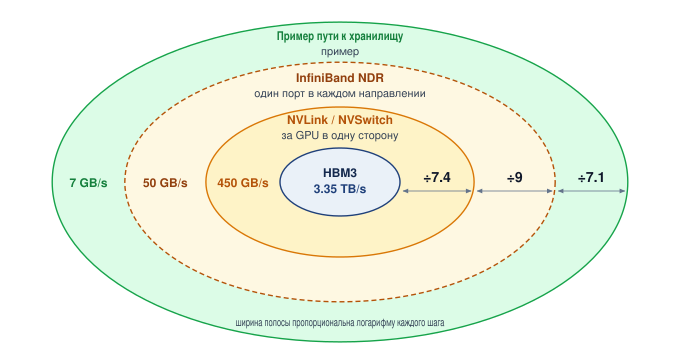
Инженерный расчёт 2.3: Физика «лестницы»
Задача: Буфер 10 GB должен переместиться на один шаг на каждом уровне иерархии, при этом локальное чтение из HBM служит точкой отсчёта. Насколько пересекаемый уровень меняет время передачи?
Расчёт: Время передачи равно
- HBM (локальное чтение, точка отсчёта): 10 GB / 3,350 GB/s
3.0 ms. - NVLink (внутриузловой): 10 GB / 450 GB/s
22.2 ms. - InfiniBand (между узлами): 10 GB / 50 GB/s
200 ms.
Системный вывод: Для одного и того же полезного груза путь между узлами в примере имеет нижнюю границу времени передачи в 9× раз больше, чем путь внутри узла. Сам по себе размер не решает, какой трафик может пересечь этот обрыв; решают частота и перекрытие. Тензорный параллелизм обменивается активациями внутри каждого слоя, на критическом пути, поэтому в данной конфигурации он тяготеет к быстрой локальной области NVLink. Параллелизм по данным перемещает самый крупный буфер — полный градиент, — но лишь один раз за шаг и с перекрытием с обратным проходом, поэтому он может пересекать дефицитный уровень InfiniBand. Разбиение, помещающееся в память, всё же может значительную часть шага ждать, если его открытые обмены превышают коммуникационный бюджет.
У каждого обрыва на «лестнице» пропускной способности есть физическая причина на своём масштабе расстояний. Проводники длиной в миллиметры на кремниевом интерпозере могут нести широкий медленный параллельный интерфейс без приёмопередатчиков сериализатор/десериализатор (SerDes). NVLink пересекает десятки сантиметров медных дорожек платы, что требует SerDes-приёмопередатчиков с выравниванием для восстановления сигнала на высоких скоростях на одну линию. PCIe платит за универсальную совместимость накладными расходами протокола (заголовки пакетов, кредиты управления потоком и контроль ошибок). InfiniBand пересекает метры кабеля между стойками, добавляя на длинных участках оптическое преобразование, упреждающую коррекцию ошибок и проходы через коммутаторы. SerDes, бюджет линии и энергопотребление развивает физику сигналов, стоящую за этими обрывами. Для проектирования узла число линий и устойчивая пропускная способность должны оцениваться вместе с потреблением энергии и нагрузкой на охлаждение компонентов, которые их обеспечивают.
Практическое следствие для разбиения модели состоит в том, что тензорный параллелизм (TP), который раскладывает отдельные матричные умножения по ускорителям и требует коллективных обменов внутри слоёв, порождает объём коммуникаций, пропорциональный скрытой размерности модели, сотни раз в секунду. По NVLink каждый из таких обменов занимает менее миллисекунды для работающей модели (Глава 2.5.2 вычисляет идеализированную нижнюю границу). При опорной скорости порта InfiniBand нижняя граница только по пропускной способности для того же обмена в 9× раз больше; эффект на время шага зависит ещё и от запуска, маршрутизации и перекрытия. Для этой топологии TP потому и остаётся внутри узла, хотя система, чья быстрый масштабируемый fabric охватывает несколько шасси, может разместить тензорно-параллельную группу поверх них; полезное разбиение определяет стоимость коммуникаций, а не корпус сервера.
Иерархия объясняет и то, почему конвейерный параллелизм занимает промежуточное положение по требованиям к пропускной способности. При конвейерном параллелизме модель делится на последовательные стадии, каждая из которых назначается своей группе ускорителей. Коммуникации между стадиями состоят из активаций, текущих вперёд при прямом проходе, и градиентов, текущих назад при обратном, с объёмом, пропорциональным размеру батча, умноженному на скрытую размерность.
Для нашей модели 175B со скрытой размерностью 12,288 и одной последовательностью из 2,048 токенов на микробатч тензор активаций на каждой границе стадий составляет приблизительно
Передачи активаций происходят один раз за микробатч на каждую границу стадий. Это гораздо реже, чем AllReduce тензорного параллелизма внутри каждого слоя, но чаще, чем обмен градиентами при параллелизме по данным, который случается один раз за шаг. Небольшие сообщения на промежуточной частоте позволяют конвейерному параллелизму мириться с меньшей пропускной способностью межузловых линий, что делает его естественным способом разбить модель, чьи слои не помещаются в один узел.
И потому и конвейерный, и параллелизм по данным пересекают границы узлов — по разным причинам (Таблица 10). Трафик конвейера мал на сообщение и по частоте лежит между двумя другими. Обмен градиентами при параллелизме по данным — крупнейшая передача, но она случается раз за шаг и может перекрываться с обратным проходом. Это перекрытие делает его самым толерантным к задержке из трёх, хотя любой незавершённый обмен всё же задерживает обновление. Для примера топологии получившееся размещение ставит тензорный параллелизм внутри узла, стадии конвейера — между узлами, а группы параллелизма по данным — по всему кластеру. Эта де-факто схема — отправная точка для расчёта ёмкости и таймингов; другой домен масштабирования, размер сообщения или возможность перекрытия могут оправдать иное размещение.
| Стратегия | Размер на обмен | Частота | Перекрытие с вычислениями | Размещение на этой топологии |
|---|---|---|---|---|
| Тензорный параллелизм | Частичные результаты размером с активации | Внутри каждого слоя, прямой и обратный проходы | Малое; последующие операции зависят от результата | Внутри области NVLink |
| Конвейерный параллелизм | Активации одного микробатча на границе стадий | Один раз за микробатч на границу | Частичное, за счёт планирования микробатчей | Между узлами, соседние стадии близко |
| Параллелизм по данным | Полный градиент | Один раз за шаг | Существенное, во время обратного прохода | По всему кластеру |
Это размещение ограничивает то, как планировщик назначает устройства и узлы. Члены тензорно-параллельной группы должны находиться внутри одной быстрой области (на этой топологии — одного шасси, соединённого NVLink), поскольку их зависимые обмены повторяются внутри каждого слоя. Соседние стадии конвейера должны размещаться в одной стойке или в соседних стойках, где их трафик активаций и градиентов пересекает наименьшее число проходов через коммутаторы InfiniBand. Группы параллелизма по данным могут охватывать весь кластер. Физическая близость помогает лишь тогда, когда она соответствует лучшей связности. Иерархия PCIe узла добавляет ещё одно ограничение на размещение, соединяя ускорители с хостовыми CPU, сетевыми картами (NIC) и хранилищем, включая путь к хостовой DRAM.
Иерархия PCIe внутри узла
Пока NVLink несёт трафик GPU-to-GPU, PCIe Gen5 соединяет ускорители, хостовые CPU, сетевые адаптеры и хранилище через периферийную иерархию узла. Хостовая DRAM подключена к контроллерам памяти CPU; передача GPU в эту память также проходит по его хостовому пути PCIe. Пропускная способность PCIe — приблизительно 64 GB/s на направление (128 GB/s двунаправленно) на линию x16 — потому может ограничивать загрузку данных, запись контрольных точек или передачи GPU-в-сеть. Какой трафик конкурирует, зависит от фактических линий и коммутаторов, которые разделяют эти пути.
Стандартный узел DGX H100 содержит два хостовых CPU, каждый из которых управляет собственным корневым комплексом PCIe — хабом на стороне CPU, где берут начало его линии PCIe, — и PCIe-коммутаторы разводят эти линии. Каждая из 8 GPU и каждый из 8 хостовых канальных адаптеров InfiniBand (HCA — сетевые карты fabric InfiniBand) имеют собственную линию x16 (Рисунок 10). Эта конфигурация даёт агрегатную теоретическую пропускную способность около 2 TB/s внутри шасси. Однако эта пропускная способность разделяется между конкурирующими потоками трафика. В течение одного шага обучения шина PCIe одновременно несёт батчи данных хост-to-GPU, осколки градиентов GPU-to-HCA для межузлового AllReduce и периодические записи контрольных точек CPU-to-NVMe. Осколки градиентов идут через GPUDirect — удалённый прямой доступ к памяти (RDMA), который перемещает данные между памятью GPU и HCA без копии в память хоста. Конкуренция этих потоков может вызывать неожиданные простои конвейера, особенно когда синхронизация градиентов насыщает линии, обычно используемые для загрузки данных.
Двухпроцессорная архитектура вносит существенные эффекты неоднородного доступа к памяти (NUMA). 8 GPU физически разделены: 4 подключены к корневому комплексу CPU 0 и 4 — к CPU 1. GPU, подключённый к CPU 0, достигает DRAM CPU 0 через свой локальный корневой комплекс PCIe, тогда как доступ к DRAM CPU 1 проходит и через межсокетную линию. Штраф по задержке и пропускной способности зависит от процессора, межсокетного соединения, топологии PCIe, размера передачи и конкурирующего трафика, поэтому фиксированного процента для всех узлов нет. Конвейерам загрузки данных следует измерять эту топологию и размещать рабочие процессы, закреплённые буферы (зафиксированная память хоста, чтобы устройства могли читать её напрямую), NIC и целевые GPU в одном NUMA-домене, когда локальный путь улучшает устойчивую подачу данных. Размещение потому — часть стратегии параллелизма: планировщик, игнорирующий корни PCIe, локальность NIC и NUMA-домены, может превратить в остальном корректный тензорно- или конвейерно-параллельный план в узкое место на стороне хоста.
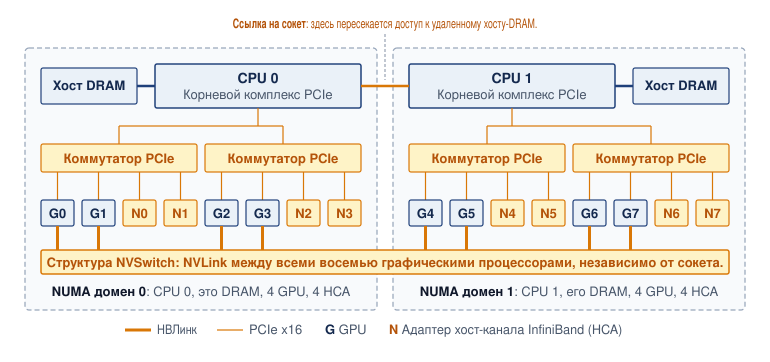
↪ Отображение параллелизма по данным, тензорного и конвейерного на уровни пропускной способности внутри узла и между узлами развивается в Гибридный параллелизм.
2.5.2 Плотные конструкции узлов
Учитывая иерархию пропускной способности, узел должен соединить 8 ускорителей с достаточной пропускной способностью для тензорно-параллельных операций поверх их приватных памятей. Коммутируемый fabric может обеспечить полную бисекционную пропускную способность — достаточную ёмкость при любом равном делении конечных точек, чтобы нести их полную скорость инжекции. Сравнение кольца, полносвязной сетки и коммутируемой конструкции показывает, чего стоит связность и какие шаблоны коммуникаций она поддерживает.
Восемь GPU в одном шасси можно соединить кольцом, полной сеткой или коммутируемым fabric (Рисунок 11). Кольцо дёшево: нужны лишь
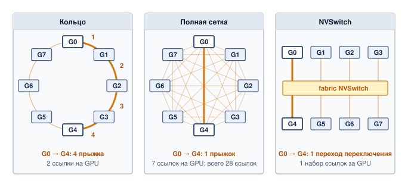
Рассмотрим архитектуру NVIDIA DGX H100. Восемь GPU H100 размещены на одной базовой плате, каждый соединён с четырьмя чипами NVSwitch через 18 линий NVLink 4.0. Чипы NVSwitch образуют неблокирующий кроссбар5, через который любой GPU может связаться с любым другим. Бюджет портов каждого GPU составляет 900 GB/s двунаправленно, или 450 GB/s в одном направлении, и этот бюджет разделяется между одновременными передачами данного GPU; это не отдельный полнопропускной канал для каждой пары GPU.
В результате получается узел с суммарным объёмом HBM 640 GB и совокупной пиковой вычислительной пропускной способностью 8
Трассировка одного микробатча рассматриваемой модели через её тензорно-параллельные обмены показывает, что покупает бюджет энергии NVSwitch. Примем расписание общего эталонного шага: два AllReduce размера активаций на слой в каждом прямом и обратном проходе — один после блока внимания и один после полносвязной сети; разбиение и расписание коллективов являются входными данными сценария, а не универсальным расписанием для Transformer. В моделируемом тензорно-параллельном прямом проходе каждый GPU хранит один шард каждой весовой матрицы и вычисляет свою часть матричного умножения. Для слоя Transformer со скрытой размерностью 12,288 (типично для модели 175B) одна проекция отображает внутренний вектор каждого токена, уже разделённый между 8 GPU, обратно на полную ширину скрытого слоя. Каждый GPU хранит срез
↪ Как тензорный параллелизм разделяет весовые матрицы между устройствами, изложено в Тензорный параллелизм.
Логический выходной тензор одного AllReduce содержит
С двумя AllReduce в каждом из 96 слоёв и в прямом, и в обратном проходе 384 передач в сумме занимают около 75.2 ms на микробатч до перекрытия. NVSwitch предоставляет пути, необходимые для коллектива, но эта величина остаётся идеальной нижней границей только по пропускной способности, не учитывающей стартовую задержку, программные накладные расходы и конкурирующий трафик.
↪ Модель
Чтобы оценить эту границу, нужно время вычислений для сравнения. При примерно
Пример 2.3: Сюрприз пропускной способности NVLink
Сценарий: команда оценивает тензорный параллелизм по гипотетическому пути PCIe Gen5 с пропускной способностью 64 GB/s, используя полезную нагрузку и время вычислений на микробатч 604 ms, полученные в оценке по NVLink выше.
Диагноз: смоделированное тензорно-параллельное расписание исполняет 384 событий AllReduce на микробатч по 96 слоям. Сумма времён передачи только по пропускной способности PCIe составляет 528 ms на микробатч. Без перекрытия коммуникация занимает 46.7 percent суммарной оценки «вычисления плюс передача»; это не измеренная доля простоя.
Урок для систем: при тех же предположениях NVLink снижает нижнюю границу передачи до 0.196 ms на AllReduce и поднимает долю вычислений до 88.9 percent суммарного времени. Это сравнение объясняет, почему данное разбиение требует быстрого локального fabric. Реальная производительность коллективов должна также учитывать стартовую задержку, топологию, конкуренцию и перекрытие.
DGX H100 снабжает каждый GPU собственным InfiniBand-адаптером ConnectX-7 HCA, который читает и пишет память GPU напрямую через PCIe посредством GPUDirect RDMA, поэтому обмен градиентами между узлами избегает промежуточных копий в DRAM хоста, хотя всё ещё потребляет пропускную способность PCIe и сети. Процессор хоста готовит и загружает батчи, отправляет ядра и координирует обучающий фреймворк. Достаточная вычислительная мощность CPU и пропускная способность ввода-вывода позволяют этой работе перекрываться с вычислениями и коммуникацией fabric ускорителей; в противном случае медленная предобработка или отправка могут «голодать» GPU даже при достаточно быстрых локальной памяти и соединениях.
↪ Путь данных RDMA и GPUDirect в обход памяти хоста изложен в RDMA и GPUDirect.
Процессоры хоста также платят «налог дата-центра» за общую инфраструктурную работу. По данным профилярования парка Google, такие общие строительные блоки потребляли почти 30 процентов циклов между заданиями (Kanev и др. 2015 г.), а обработка сетевых протоколов, виртуализация хранения и функции безопасности добавляют эту нагрузку на облачных хостах. Поэтому ML-узлы могут включать блоки обработки данных (DPU) или SmartNIC. Устройства вроде NVIDIA BlueField DPU переносят эти инфраструктурные задачи на выделенные ARM-ядра и аппаратные ускорители, встроенные в сам сетевой адаптер. Вынос плоскости управления для RDMA, правил файрвола и протоколов хранения на DPU возвращает такты для ML-конвейера: загрузки данных, токенизации и оркестрации ядер на CPU хоста. DPU также выступает изолированным доменом безопасности, позволяя облачным провайдерам сохранять контроль над сетевым и накопительным уровнями через DPU, предоставляя клиентам полный доступ к CPU хоста и GPU. Для обучения нашей модели 175B разгрузка на DPU может удерживать обработку протокола RDMA вне критического пути CPU хоста для синхронизации градиентов, которая идёт от HBM GPU к сетевому fabric без участия CPU хоста.
Альтернативные архитектуры узлов
Тратить площадь платы, энергию и стоимость на четыре чипа NVSwitch имеет смысл, когда тензорно-параллельные коллективы присутствуют в каждом слое, но рабочие нагрузки, доминируемые объёмом эмбеддингов, параллелизмом по данным или экономным обслуживанием, первыми упираются в иные пределы. Альтернативные конструкции узлов перераспределяют этот бюджет. Сервер AMD MI300X делает акцент на большом объёме HBM в каждом корпусе, поды Google TPU соединяют чипы напрямую в mesh без центрального коммутатора на базовой плате, а узлы Intel/Habana Gaudi интегрируют порты Ethernet RDMA прямо на кристалл ускорителя. Сравнение их с узлом DGX H100 показывает, куда каждая архитектура тратит свой дефицитный бюджет.
В узле с богатой коммутацией, таком как DGX H100, приоритетом является универсальный локальный обмен «любой с любым», поскольку каждый слой Transformer помещает внутриузловые коллективы во внутренний цикл модели. Fabric H100 NVLink пропускной способностью 900 GB/s тем самым покупает программную абстракцию, в которой обучающий фреймворк может рассматривать восемь ускорителей как одну тесно связанную тензорно-параллельную группу для слоёв, которые должны быть разделены между чипами.
Другие системы сдвигают эту границу. Поды TPU используют межчиповый интерконнект и топологию, ориентированную на ячеистую (mesh) структуру, вместо того чтобы делать центральный коммутатор определяющим компонентом узла; заявленная производителем пропускная способность ICI чипа TPU v5p составляет 1,200 GB/s. Ячеистая топология может снизить затраты на коммутацию и предоставить компилятору регулярную структуру, но она же делает размещение более явным, поскольку среде исполнения приходится уважать отношения соседства, а не предполагать, что каждая пара чипов имеет одинаковый путь коммуникации. Это разумный компромисс, когда рабочая нагрузка достаточно регулярна, чтобы компилятор и библиотеки коллективов могли отобразить коммуникацию на топологию.
MI300X смещает точку напряжения с локальной коммутации на ёмкость памяти. Его корпус предоставляет 192 GB памяти HBM с пропускной способностью 5.3 TB/s, против 80 GB у ускорителя класса H100. Узел из восьми ускорителей MI300X, таким образом, предоставил бы 1,536 GB совокупной памяти HBM — достаточно, чтобы вместить FP16 тензор весов размером 350 GB для нашей модели на 175B. Это не устраняет проблему оптимизатора, градиентов, активаций и фрагментации, которую количественно оценивает раздел Глава 2.5.3, но меняет то, как часто система должна выгружать состояние в более медленные уровни памяти и сколько запаса остаётся для микробатчей, прежде чем выгрузка станет обязательной.
Gaudi идёт другим путём, интегрируя поддерживающий RDMA Ethernet в сам ускоритель и используя более ориентированный на сеть подход к коммуникации. 24 интегрированных порта 100 GbE ускорителя Gaudi 2 обеспечивают 300 GB/s совокупной пропускной способности RDMA over Converged Ethernet (RoCE), против 900 GB/s локального обмена на каждый GPU в узле с NVLink класса H100. Более новый Gaudi 3 сохраняет Ethernet-ориентированный дизайн, располагая при этом 128 GB памяти HBM на ускоритель, так что ёмкость здесь не является предметом компромисса. Вопрос в том, стоит ли упрощение fabric и последовательное использование Ethernet на уровне узла и пода того, что приходится отдавать высокую пропускную способность локального обмена, характерную для дизайна с богатой коммутацией NVLink. Этот компромисс может быть привлекательным, когда доминируют параллелизм по данным, обслуживание инференса или стоимость кластера, и менее привлекательным, когда тензорно-параллельные коллективы присутствуют в каждом слое.
Эти альтернативы — не рейтинг производителей. Это разные способы размещения дефицитных ресурсов: пропускная способность коммутации в узле, регулярная топология в поде, ёмкость HBM в корпусе или сетевой интерфейс на ускорителе. Для модели на 175B, используемой на протяжении всей главы, тензорно-параллельная часть обучения делает локальную коммуникацию ускорителей необычайно важной, поэтому ответ в стиле DGX естественен. В других режимах, особенно в требовательных к памяти рекомендательных системах, обучении с регулярной топологией или чувствительных к стоимости парках для обслуживания, более важной может стать совсем иная граница. А зрелость программной экосистемы, доступность поставок и совокупная стоимость владения затем решают, превратится ли теоретическое архитектурное соответствие в развёртываемую систему.
2.5.3 Разделение памяти узла
Совокупная память HBM узла должна вмещать гораздо больше, чем веса, и то, как это состояние распределяется по уровням памяти узла, определяет, какие стратегии параллелизма возможны. Рассмотрим бюджет памяти для обучения нашей модели на 175B. Веса модели в FP16 требуют 350 GB. Оптимизатор Adam хранит два дополнительных значения для каждого параметра (первый и второй моменты) в точности FP32, добавляя 175
Распространённое заблуждение состоит в том, что занимаемый моделью объём памяти равен объёму хранения её весов. С учётом этих двух слагаемых мастер-веса FP32, моменты оптимизатора, градиенты и активации в совокупности потребляют примерно в 7–8
| Компонент | Точность | Память на параметр | Всего для модели на 175B |
|---|---|---|---|
| Веса модели | FP16 | 2 bytes | 350 GB |
| Градиенты | FP16 | 2 bytes | 350 GB |
| Мастер-веса | FP32 | 4 bytes | 700 GB |
| Оптимизатор (Adam |
FP32 | 4 bytes | 700 GB |
| Оптимизатор (Adam |
FP32 | 4 bytes | 700 GB |
| Активации | Смешанная | Переменно | 100–400 GB |
| Итого | 2.9–3.2 TB |
Бюджет в 2.9–3.2 TB из Таблица 11 расширяет прежний промежуточный итог мастер-весами и активациями. Его пять постоянных строк в сумме дают 16 байт на параметр, или 2.8 TB — это состояние обучения, указанное для Архетипа A в Архетип A (GPT-4/Llama-3), а остальное добавляют активации. Доминирующим слагаемым является состояние оптимизатора Adam в FP32, а не веса FP16, а пик активаций, растущий с размером батча и длиной последовательности, наиболее изменчив. Вывод для выбора параллелизма: веса FP16 — лишь одна из меньших частей того, что должен удерживать узел, поэтому стратегия, шардящая только веса, оставляет крупнейших потребителей — моменты оптимизатора FP32 и мастер-веса — нетронутыми.
Узел DGX H100 предоставляет 640 GB совокупной памяти HBM на своих 8 GPU плюс 2 TB хостовой памяти DDR5 DRAM. Одной ёмкости HBM недостаточно для полного состояния обучения, как показывает арифметика памяти для каждой стратегии параллелизма. При чистом параллелизме по данным каждый GPU должен хранить реплицированное состояние, и даже промежуточный итог в 2,100 GB — веса, градиенты и моменты оптимизатора, ещё без мастер-весов и активаций, — физически невозможен на устройстве с 80 GB. Даже ZeRO stage 3 — вариант шардирования ZeRO, делящий все три компонента между воркерами, — даёт 2,100 GB / 8 ≈ 262.5 GB на GPU, будучи ограниченным 8 GPU одного узла, — всё ещё более чем втрое больше доступной памяти HBM.
Следовательно, чтобы уместить состояние в HBM, требуется расширение на несколько узлов, чтобы более крупный пул ускорителей делил занимаемый объём памяти. Референсная задача делает это с помощью двух разбиений, следующих за иерархией пропускной способности. Тензорный параллелизм внутри каждого узла разделяет тензоры и операции внутри каждого слоя по его 8 GPU, а конвейерный параллелизм между узлами даёт каждому из 8 узлов непрерывный блок из 12 из 96 слоёв модели. Одна реплика модели, таким образом, охватывает 64 GPU на 8 узлах. При разделении каждого компонента между этими 64 GPU на каждом остаётся 5.47 GB весов FP16, столько же градиентов и 32.8 GB мастер-весов и моментов оптимизатора FP32.
В пересчёте на GPU постоянное состояние обучения составляет 2,800 GB / 64 ≈ 43.8 GB, что умещается на устройстве с 80 GB (85.9 GB в десятичных байтах) с запасом около 42 GB на активации, коммуникационные буферы и рабочие области. Именно это соответствие задаёт глубину конвейера. Четыре стадии оставили бы 87.5 GB на GPU — больше, чем вмещает устройство, поэтому восемь — это минимальная степень двойки для конвейера, которая умещается. Затем 16-кратный параллелизм по данным по остальной части кластера повторяет всё разбиение на 64 GPU, и никакое состояние не требует шардирования между репликами.
Подытог 43.8 GB на GPU — лишь отправная точка, поскольку активации поверх него растут с размером микробатча и длиной последовательности. Если активации и рабочие области не умещаются в оставшемся запасе, следующий шаг — шардировать состояние оптимизатора между репликами с параллелизмом по данным, используя эффективную по памяти схему параллелизма по данным, развитую в Эффективное по памяти параллелизм по данным с ZeRO и FSDP. Разделение мастер-весов и моментов FP32 между 16 репликами сократило бы состояние на GPU примерно до 13 GB, и каждая реплика обновляла бы только свою долю параметров, передавая результат остальным. Упражнение с бюджетом памяти в Глава 2.5.3.1 рассматривает одиночный узел без такого межузлового разбиения и показывает, почему одной выгрузки оптимизатора там недостаточно. Именно из-за этой арифметики тензорный параллелизм, стадии конвейера, шардирование оптимизатора, контрольные точки активаций и распределение памяти по уровням используются вместе при обучении больших моделей. Узел, следовательно, — это высокоскоростной вычислительный и коммуникационный блок, а не автономный контейнер для всего состояния обучения.
Одно лишь разбиение всё ещё может оставить слишком мало места для активаций, поэтому оно сочетается с техниками, сокращающими активное состояние. Контрольные точки активаций сохраняют лишь подмножество промежуточных активаций для обратного прохода и перевычисляют остальные от ближайшей контрольной точки, обменивая дополнительные прямые вычисления на память активаций — компромисс, который разрабатывается в Проходы вперёд и назад в фазе вычислений.
Выгрузка на CPU хранит состояние в хостовой памяти DDR5 DRAM и может также перенести вычисления оптимизатора на CPU. Реализация определяет, какие градиенты, веса или буферы оптимизатора проходят по пути PCIe Gen5, со скоростью 64 GB/s. Её стоимость зависит от этих байтов, вычислений на хосте и времени, доступного для перекрытия передач; короткое обновление на GPU не доказывает дешевизну выгрузки. Выгрузка на NVMe расширяет хранилище до SSD, где иллюстративная скорость последовательного чтения 5–7 ГБ/с вводит дополнительное ограничение пропускной способности, которое предвыборка может скрыть лишь тогда, когда потребление оставляет достаточно времени.
Конфигурация с выгрузкой использует иерархию памяти узла как многоуровневую систему, упорядоченную по частоте обращения к каждому фрагменту состояния. HBM хранит фрагменты весов, активации и накапливаемые градиенты, нужные на каждом слое прямого и обратного проходов. Хостовая DDR5 принимает моменты оптимизатора и мастер-веса, которые читаются и записываются лишь один раз за шаг во время обновления параметров. NVMe расширяет ёмкость для крупнейших моделей, храня редко используемые фрагменты, которые можно предвыбрать в пределах бюджета шага. Конфигурация с достаточной распределённой памятью HBM может вместо этого удерживать фрагменты состояния оптимизатора на ускорителях. Размещение следует из расчёта ёмкости и времени передачи, а не из фиксированного назначения каждого типа состояния одному уровню.
Менеджер памяти обучающего фреймворка перемещает состояние между этими уровнями во многом как контроллер кэша: предвыбирает выгруженные веса следующего слоя в HBM во время вычислений текущего слоя и вытесняет состояние, которое вскоре не понадобится. Глубина предвыборки задаёт баланс, поскольку слишком мелкая предвыборка задерживает вычисления передачами по PCIe, а слишком глубокая вытесняет активации и градиенты текущего шага. Таблица 12 количественно показывает разрывы, которые менеджеру приходится перекрывать, — более двух порядков величины по пропускной способности между HBM и NVMe-накопителем. Поэтому для нашей модели 175B план ёмкости должен выбирать между дополнительным шардированием, выгрузкой и сокращениями живого состояния, а следующий бюджет проверяет, действительно ли предложенная комбинация помещается на одном узле.
| Уровень памяти | Ёмкость | Пропускная способность | Задержка | Роль |
|---|---|---|---|---|
| GPU HBM3 | 80 GB |
3.35 TB/s на GPU | Активные вычисления | |
| Хостовая DDR5 | 2 TB | сотни ГБ/с в сумме | ~1 μs через PCIe | Состояние оптимизатора |
| NVMe SSD | 8–30 TB | до 7 GB/s на накопитель | ~100 μs | Переполнение, контрольные точки |
Бюджет памяти уровня узла
Суммирование всех пяти компонентов памяти для нашей модели 175B на одном узле DGX H100 в примере 2.4 показывает, почему закрытие бюджета требует согласованного сочетания шардирования, контрольных точек и выгрузки, а не настройки какого-то одного компонента в изоляции.
Пример 2.4: Бюджет памяти для обучения 175B на DGX H100
Сценарий: инженерная команда рассчитывает бюджет памяти для обучения модели с 175B параметрами, используя тензорный параллелизм 8-кратной степени на 8-GPU узле DGX H100 (80 GB HBM на GPU).
Диагноз: без шардирования ZeRO даже TP-8-фрагмент состояния оптимизатора на каждом GPU требует 175 GB на GPU, что больше, чем веса и градиенты вместе взятые (88 GB). Отдельный фрагмент мастер-весов FP32 добавляет 87.5 GB. Вместе с сохраняемыми градиентами FP16, предполагаемыми активациями и рабочими буферами эти компоненты доводят бюджет на GPU до 375 GB, что заметно превышает лимит HBM в 80 GB. Этот бюджет уже предполагает контрольные точки активаций; пик активаций — входное допущение сценария, которое для выбранного микробатча и длины последовательности нужно заменить измерениями.
Системный урок: определение размера памяти для обучения требует целостного управления весами, градиентами, состояниями оптимизатора, активациями и буферами, потому что разгрузка одного компонента не обязательно снимает весь объём. Выгрузка моментов оптимизатора и мастер-весов в хостовую DDR5 устраняет эти FP32-компоненты, но всё ещё оставляет 113 GB на GPU, поскольку тензорный параллелизм 8-кратной степени удерживает полный фрагмент весов и градиентов резидентно на каждом GPU. Дальнейшие сокращения требуют выгрузки или уменьшения другого живого компонента. Альтернативно добавление устройств создаёт дополнительную группу параллелизма по данным, между которой ZeRO может шардрить состояние. Те же восемь GPU не могут образовать эту группу, поскольку вместе они уже являются тензорно-параллельной группой одной реплики. При отсутствии конвейерных стадий степень тензорного параллелизма, умноженная на степень параллелизма по данным, равна числу устройств, поэтому тензорный параллелизм 8-кратной степени на восьми GPU оставляет степень параллелизма по данным, равную единице.
2.5.4 Загрузка данных и конвейер ввода-вывода
Даже после того, как бюджет памяти узла закрыт, его ускорителям всё ещё нужен непрерывный поток обучающих данных извне корпуса. Если конвейер загрузки данных не поспевает за скоростью потребления ускорителей, самый дорогой компонент узла простаивает; это узкое место ввода-вывода. Для предтокенизированного обучения языковых моделей сырая потребность невелика. При 500,000 tokens/s, хранящихся как 4-байтовые ID токенов, приём данных составляет лишь 2 MB/s. Давление вместо этого ложится на хостовые ядра CPU, которые читают, декодируют, перемешивают и формируют батчи примеров, на пути PCIe, которыми данные делятся с трафиком градиентов и контрольных точек (Глава 2.5.1.1), и на общее хранилище, которое читают одновременно все узлы.
GPUDirect Storage может убрать промежуточное копирование в хостовую память для данных, не требующих предобработки на хосте, а размещение данных на локальном NVMe способно поглощать синхронизированные всплески, которые в противном случае ударили бы по общей файловой системе. Для проектирования узла требование — сквозная устойчивая пропускная способность при заданном уровне параллелизма. Серверы хранения, сетевые пути, хостовая предобработка, хостовая память и передача на ускоритель должны все поспевать, потому что локальный бенчмарк, удовлетворяющий один узел, мало говорит об общем пути, обслуживающем весь парк. Поддержание продуктивности узла на протяжении многонедельного запуска затем зависит от того, как часто отказ компонента внутри корпуса прерывает исполнение.
↪ Определение размера входного конвейера сквозным образом, при котором каждая стадия от чтения из хранилища до передачи хост–устройство держится на требуемой пропускной способности или выше, развёрнуто в Уравнение конвейера данных.
2.5.5 Здоровье и надёжность узла
Когда один GPU страдает неисправимой ошибкой HBM или в стойке срабатывает полка питания, отказ не происходит изолированно: из синхронного шага обучения выбывает вся его восьми-GPU тензорно-параллельная группа или многоузловая стойка. Домен отказа — это множество ресурсов, которые единичный отказ выводит из строя вместе, и физическая иерархия вкладывает эти домены друг в друга. Отказавший GPU ломает свою тензорно-параллельную группу, которая обычно охватывает его узел. Узел находится в стойке, чья общая полка питания, верхний коммутатор и контур охлаждения могут разом вывести из строя все узлы. Стойки делят питание и распределение хладагента уровня ряда, а залы делят коммунальное питание здания, охлаждающую установку и противопожарный отсек.
Для синхронного обучающего задания узел — наименьший значимый домен. Восьмикратная тензорно-параллельная группа внутри узла становится непригодной при отказе любого одного GPU, поскольку её коллективные операции требуют всех восьми участников. Эффективный MTBF узла зависит от совокупной подверженности отказам каждого компонента, потеря которого останавливает задание, а также от отказов общего питания и охлаждения. Показатель узла — это потому MTBF, ожидаемый интервал между последовательными отказами устройства, продолжающего работать с учётом замен, тогда как каждый GPU вносит свой MTTF; это различие проведено вместе со стеной надёжности в Глава 2.1.
Подверженность отказам охватывает память, соединения и электрические и механические системы, которые их поддерживают. Неисправимая ошибка кода коррекции ошибок (ECC) в стеке HBM выводит ускоритель из строя и прерывает активный шаг обучения. Высокоскоростные линии деградируют по мере того, как повторяющиеся термоциклы нагружают разъёмы и кабели, что проявляется в перетренировке линии или фатальном обрыве связи. Компоненты блоков питания, а также насосы и вентиляторы контура охлаждения изнашиваются под постоянной нагрузкой, и потеря питания или охлаждения может вывести из строя несколько ускорителей сразу. Сам ускоритель обычно доминирует в статистике. В отчёте Meta о предобучении Llama 3 405B неисправные GPU и ошибки памяти HBM3 вместе вызвали почти половину непредвиденных прерываний, опередив программные ошибки, сетевые коммутаторы и кабели (Dubey и др. 2024 г.). Порядок в конкретном парке всё же зависит от его оборудования и условий эксплуатации, поэтому прежде чем он будет направлять запасные мощности или предупредительное обслуживание, его должны подтвердить локальные данные об инцидентах.
Мониторинг здоровья может пометить узел для проверки до того, как на него ляжет ещё одно долгое задание. Растущая частота исправимых ошибок ECC, растущая температура перехода (температура на транзисторах) при постоянной нагрузке и периодическая перетренировка линий — самые полезные ранние сигналы, хотя ни один сигнал сам по себе не устанавливает причину или время до отказа. Телеметрия парка, собирающая эти сигналы, развёрнута в Телеметрия парка и наблюдаемость железа.
↪ Многоуровневое обнаружение отказов, от мониторинга ECC и частоты ошибок до стресс-тестов с известным ответом на узлах, выведенных из продакшена, развёрнуто в Обнаружение и смягчение отказов в масштабе парка.
Для нашей модели 175B, обучаемой на 128 узлах, предположение о составном MTBF уровня узла в 1,000 hours, включающее GPU, хостовые компоненты, питание, охлаждение и сетевые линии, предсказывает около 43 отказов узлов за запуск длиной 336 hours, что составляет примерно 3.1 failures/day. Оценка умножает число узлов на длительность запуска и делит на составной MTBF. Граница только по GPU, из MTTF на GPU в 50,000 hours, предсказала бы лишь 6.9. Следовательно, именно узел, а не GPU, является единицей, под которую должны рассчитываться запасные мощности и инструментарий восстановления. Та же арифметика, применённая к каждому компоненту объекта и затем к каждому GPU парка, вновь появляется в более крупном масштабе в средствах управления надёжностью объекта уровня стойки и в интервале отказов парка часового масштаба в Глава 2.7.1.
Для нашей модели 175B один узел DGX H100 предоставляет 640 GB суммарной памяти HBM — этого достаточно для размещения FP16-весов модели, но не полного тренировочного состояния Adam без шардирования и выгрузки. Обучение также требует обработки сотен миллиардов токенов, а одному узлу для этого понадобилось бы более года вычислений (Глава 2.7 разбирает эти расчёты), поэтому завершить обучение за недели требуют десятки и сотни узлов. Объединение этих узлов в физический корпус задаёт следующий уровень инфраструктуры, где ограничения смещаются от пропускной способности и ёмкости к сырой мощности и теплу.
2.6 Стойка
Стандартная серверная стойка 42U в традиционном дата-центре потребляет около 12 kW и может охлаждаться воздухом комнатной температуры, продавливаемым через перфорированные плитки пола. Рассматриваемый в главе сценарий четырёхузловой стойки DGX H100 потребляет 33.5 kW — величину, включающую отведённые стойке накладные расходы на охлаждение. При такой плотности инженерные ограничения смещаются от кремния и целостности сигналов к подаче электроэнергии и термодинамике. Именно на уровне стойки энергетический барьер и отвод тепла становятся доминирующими силами проектирования.
Для нашей модели 175B обучение на 1,024 GPU требует 32 стоек (4 узлов по 8 GPU в каждой на стойку). По всему кластеру смоделированная мощность стоек, включающая отведённые каждой стойке накладные расходы на охлаждение, составляет примерно 1.1 MW. Надёжная подача такой мощности и отвод выделяющегося тепла без превышения температурных пределов какого-либо компонента — междисциплинарная инженерная задача на стыке электротехники, механики и строительного проектирования. Отказ в любой точке цепи подачи питания — от распределительной подстанции энергосети до отдельного стабилизатора напряжения GPU — может остановить весь тренировочный прогон, обесценив часы вычислений и потенциально повредив тренировочное состояние.
Определение 2.5: Стойка
Стойка (rack) — единица физической инфраструктуры: стандартизированный корпус 42U, вмещающий несколько вычислительных узлов, коммутатор top-of-rack (ToR) (первую точку агрегации сети, соединяющую все узлы стойки с более широким fabric кластера), блоки распределения питания и распределительные коллекторы охлаждения; она определяет гранулярность, с которой должны выделяться мощность и охлаждающая способность.
- Значение: плотность потребления энергии стойками для ИИ резко выросла. Рассматриваемый в главе сценарий четырёхузловой стойки DGX H100 содержит 32 GPU по 700 W каждый и потребляет 33.5 kW с учётом питания хоста, сети, преобразования и отведённых накладных расходов на охлаждение. Это превышает примерно 12 kW, характерные для стойок общего назначения в дата-центрах, и требует специально спроектированных электрического распределения и охлаждающей способности. Будет ли это охлаждение воздушным или жидкостным, зависит от конфигурации системы и проекта объекта.
- Отличие: узел упаковывает вычисления; стойка интегрирует общее распределение питания, охлаждения и сети. Компоненты и узлы остаются обслуживаемыми по отдельности, но их обслуживание и замена должны учитывать границы ёмкости и отказов этих общих систем.
- Типичная ошибка: частое заблуждение состоит в том, что размещение стоек — логистическая второстепенная задача. Узлы одной стойки используют один коммутатор ToR и связаны в один хоп; узлы из разных стоек пересекают не менее двух хопов коммутации. Размещение стадий конвейера внутри одной стойки может снизить межстоечный трафик, когда реальные пути и доступная пропускная способность поддерживают обмены на границах стадий.
2.6.1 Энергетические и тепловые лимиты
Поддержание скорости вычислений, которую делают возможными HBM и Tensor Cores, требует системы подачи питания и охлаждения, рассчитанной на рабочую нагрузку. Сама подача выделяет тепло ещё до каких-либо вычислений, поскольку каждый из пяти каскадов преобразования напряжения между сетью среднего напряжения и субвольтовым кристаллом GPU теряет часть проходящей через него мощности (Рисунок 12).
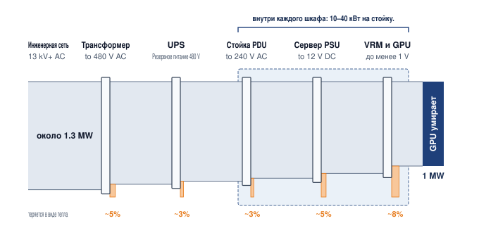
Иллюстративные потери преобразования на Рисунок 12 требуют около 1,3 МВт выше по цепи, чтобы подать 1 МВт к кристаллам, ещё до учёта отвода тепла. Объекты суммируют эти накладные расходы метрикой power usage effectiveness (PUE) — отношение полной мощности объекта к мощности ИТ-оборудования, — и поскольку граница ИТ уже включает часть этих потерь преобразования, их нельзя учитывать дважды. Метрики энергопотребления уровня инфраструктуры определяет это отношение и проводит его границу.
Каждая операция с плавающей запятой рассеивает энергию в виде тепла. Плотная активность Tensor Cores при больших матричных умножениях выделяет тепло пропорционально коммутационной активности миллиардов транзисторов. Проектирование парка должно сопоставлять устойчивый энергетический лимит каждого ускорителя с любыми задокументированными требованиями к кратковременным отклонениям. При плотном масштабе парка это порождает энергетический барьер — точку, в которой возможности объекта по подаче питания и отводу тепла, а не доступные арифметические блоки, определяют, сколько вычислений можно установить и поддерживать.
Термодинамический предел (принцип «Термодинамический предел»), согласно которому каждый джоуль, потреблённый вычислением, в итоге превращается в тепло и объект может работать лишь так быстро, как отводит это тепло, делает отвод тепла частью полезной вычислительной ёмкости. Объект может достигнуть своего энергетического или охлаждающего лимита, пока арифметическую ёмкость ещё можно докупить, так что дефицитной величиной становятся ватты на единицу площади пола, а не FLOP/s. Барьер плотности мощности (принцип «Барьер плотности мощности») добавляет это пространственное ограничение, связывая масштабирование кластера ваттами, которые может рассеять каждая стойка, а не только площадью кремния или пола. Если предлагаемая стойка превышает способность спроектированного воздушного потока отводить тепло, проект должен снизить её плотность или перейти на жидкостное охлаждение, которое для стоек класса 100 kW высокой плотности является частью конструкции стойки, а не опцией.
Определение 2.6: Расчетная тепловая мощность (TDP)
Расчётная тепловая мощность (TDP) — заданная производителем цель устойчивого теплового проектирования в ваттах для указанной конфигурации продукта и условий эксплуатации.
- Значение: конфигурация H100 SXM5, используемая в этой главе, несёт расчётную цель 700 W. Поддержание намеченной рабочей точки требует теплового тракта и контура объекта, аттестованных под эту цель при заданных производителем условиях на входе и по хладагенту.
- Отличие: TDP не означает единого универсального максимума мгновенной мощности. Полная мощность графики (TGP), мощность платы, настраиваемые лимиты и спецификации переходных процессов описывают связанные электрические ограничения в рамках соглашений, различающихся у разных производителей и продуктов.
- Типичная ошибка: частое заблуждение состоит в том, что одного заявленного значения ватт достаточно для определения мощности стойки и охлаждения. Проектирование парка должно объединять устойчивую тепловую цель, настроенный лимит мощности, поведение рабочей нагрузки, накладные расходы компонентов и требования к переходной мощности.
Траектория TDP фиксирует режим масштабирования, достигающий своих пределов. Три десятилетия масштабирование Деннарда6 позволяло разработчикам чипов уменьшать транзисторы при примерно постоянной плотности мощности. Меньшие транзисторы требовали меньшего напряжения, поэтому упаковка большего числа транзисторов в ту же площадь не увеличивала тепловыделение на единицу площади. Когда пределы масштабирования напряжения и эффекты утечек завершили этот режим, архитекторам пришлось рассматривать энергию, охлаждение и параллелизм как ограничения первого порядка, а не как бесплатный побочный продукт уменьшения техпроцесса (Dennard и др. 1974 г.; Hennessy и Patterson 2019 г.). С тех пор каждое поколение ускорителей вынуждено обменивать производительность на мощность и тепло. Эра «бесплатного» роста производительности за счёт уменьшения техпроцесса закончилась; теперь каждый прирост пропускной способности приходится оплачивать ваттами, охлаждающей способностью или специализацией.
V100 (2017) работал при TDP 300 W, A100 (2020) увеличил этот показатель до 400 W, H100 (2022) достиг 700 W, а B200 (2024) потребляет 1000 W. За семь лет TDP вырос более чем в три раза, что соответствует темпу примерно 19 percent в год.
Если этот темп роста сохранится в рамках сценария планирования с двухлетним циклом выпуска продуктов, поколение после Blackwell приблизится к 1,400 W на ускоритель, а следующее за ним поколение достигнет около 2,000 W. На таком уровне один узел с 8 ускорителями потреблял бы 16 kW только на питание GPU, что требует инфраструктуры жидкостного охлаждения (Глава 2.6.2), способной отводить тепло со скоростями, приближающимися к показателям промышленного технологического охлаждающего оборудования. Применимый лимит устойчивого энергопотребления — не просто спецификация в паспорте изделия; он распространяется на каждый уровень инфраструктурного стека. Цепочка подачи питания, система охлаждения, конструкция стойки и электрическая инфраструктура центра обработки данных должны учитывать развёртываемые ускорители, их документированные переходные режимы и правдоподобный диапазон будущих циклов обновления.
Это распространение видно по опубликованным данным на обоих концах стека. Вендоры публикуют рейтинг энергопотребления для каждого корпуса ускорителя, и Рисунок 13 (a) собирает эти рейтинги для 14 продуктов NVIDIA, Google, AMD и Intel. Рейтинги следуют собственной методике каждого вендора (TDP, максимальная мощность платы или максимальный TGP), поэтому они ограничивают проектные диапазоны, а не измеряют фактическое потребление, но от поколения к поколению они неуклонно растут. Панель (b) показывает мощность центра обработки данных суперкомпьютеров, которые Epoch AI учитывает для задач ИИ, вместе с крупнейшей системой, работающей на каждую дату (Epoch AI 2026 г.a; Pilz и др. 2025 г.). С 2013 по 2021 год этот рекорд держался между 20 MW и 30 MW — уровень задавали национальные системы высокопроизводительных вычислений. Суперкомпьютер Frontier поднял его до 40 MW в 2022, а затем кластеры для обучения ИИ увеличили его примерно до 350 MW к 2025 — рост в 9× за три года. За те же три года рейтинг одного корпуса вырос с TDP 700 W у H100 до максимального TGP 1,400 W у B300 — примерно рост в 2× при переходе между двумя методиками рейтинга. Более горячие корпуса объясняют лишь малую часть этого скачка. Остальное приходится на число ускорителей, которые объединяет одна система, и на построенный для их питания центр обработки данных — именно поэтому «стена энергопотребления» в масштабе парка является задачей резервирования мощностей для здания в той же мере, что и тепловой задачей для чипа.
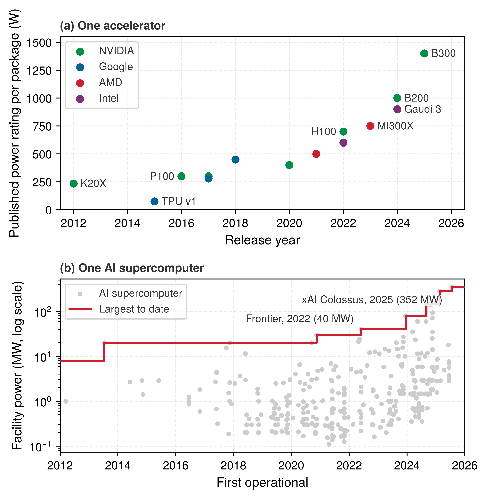
Ускорители реализуют управление питанием, чтобы работать в рамках своего диапазона TDP. Когда рабочая нагрузка не задействует полностью все SM (например, во время фазы коммуникации на шаге обучения, когда GPU ожидают завершения AllReduce), прошивка GPU может отключить тактовый сигнал для простаивающих схем с помощью тактовых затворов (clock gating). Тактирование через затворы устраняет динамическую мощность переключения и высвобождает тепловой запас для активных SM. Отдельный механизм — динамическое масштабирование напряжения и частоты (DVFS) — регулирует тактовую частоту и напряжение питания чипа, чтобы оставаться в пределах по мощности и температуре. Во время крупного матричного умножения, активирующего все SM одновременно, DVFS снижает тактовую частоту, чтобы удержать суммарную мощность в пределах TDP. Когда часть SM простаивает, активные SM могут работать на повышенной частоте, поскольку суммарная мощность чипа ниже TDP; следовательно, фактическая тактовая частота, а значит и фактическая пропускная способность, меняются на протяжении шага обучения.
Динамическое управление питанием означает, что фактическое потребление GPU непрерывно меняется во время обучения. Типичный шаг обучения может видеть колебания мощности от 400 W (во время фаз коммуникации, когда большинство SM простаивает) до 700 W (во время прямого и обратного прохода, когда активны все Tensor Cores) и обратно, причём каждый переход занимает микросекунды. Модули стабилизатора напряжения (VRM) на материнской плате, преобразующие напряжение питания платы в субвольтовое напряжение ядра, должны реагировать на эти переходы достаточно быстро, чтобы поддерживать стабильное напряжение питания при быстро меняющемся потреблении тока.
DVFS также связывает программную оптимизацию с диапазоном энергопотребления. Ядро с высокой заполняемостью SM (много активных warp’ов — планируемых групп потоков — на SM) потребляет больше мощности, что потенциально вызывает снижение частоты, частично нивелирующее выигрыш от заполняемости. Напротив, ядро с умеренной заполняемостью может работать на более высокой тактовой частоте, достигая сопоставимой пропускной способности при меньшей мощности. Поэтому нормированная по мощности пропускная способность (TFLOP/s на ватт) — более надёжная метрика сравнения, чем «сырая» TFLOP/s, и она объясняет, почему один и тот же GPU может показывать разные устойчивые тактовые частоты в зависимости от рабочей нагрузки и решения по охлаждению.
В масштабе парка DVFS влияет и на планирование энергопотребления. Среднее потребление рабочей нагрузки может опускаться ниже настроенного лимита, поскольку фазы коммуникации и неполная заполняемость оставляют схемы простаивающими, но средние значения не заменяют расчётные случаи устойчивого и переходного режимов. Некоторые операторы намеренно снижают ограничение мощности ускорителей, чтобы разместить больше устройств в рамках фиксированного бюджета центра обработки данных, принимая зависящие от нагрузки потери пропускной способности в обмен на меньшее потребление на устройство. Ограничение мощности — это форма компромисса эффективности вычислений на операционном уровне.
Физическая сложность 700 W заключается в плотности теплового потока. Кристалл H100 имеет площадь около 814 mm² (примерно
Диапазон 1,000 W у B200 охватывает двухкристальный корпус. В этом сравнении средняя плотность теплового потока остаётся сопоставимой, а скорость отвода тепла от корпуса возрастает на 43 percent. Охлаждение должно удерживать температуру перехода и температуру памяти в пределах применимых лимитов изделия при заданных условиях на входе и нагрузке. Один порог температуры не может подменять собой эти отдельные требования.
Термоинтерфейсный материал (TIM) между корпусом и системой охлаждения — один из элементов пути теплопередачи, и именно он стареет. Обучение чередует фазы плотных вычислений с фазами коммуникации, поэтому кристалл нагревается и остывает много раз в минуту; при таком циклировании термоинтерфейс с фазовым переходом или термопаста может «выдавливаться» (мигрировать с контактной поверхности) или растрескаться. Возросшее тепловое сопротивление может поднять температуру при той же нагрузке, но влияние на производительность зависит от оставшегося теплового запаса и политики управления устройством. Одна лишь температурная тенденция не выявляет причину; также требуется проверка условий на входе, потока, контакта и рабочей нагрузки. Когда тепловые лимиты снижают частоты, не останавливая выполнение, результатом является «серый отказ» — деградация производительности, которую мониторинг должен отличать от узкого места в приложении или сети.
Арифметика на ватт компенсирует лишь часть роста TDP, а более амбициозная целевая задача может увеличить суммарный объём работы, несмотря на рост эффективности, поэтому планирование центра обработки данных должно сопоставлять количество устройств, диапазон энергопотребления и время завершения совместно. Плотная компоновка ускорителей сокращает пути коммуникации, но концентрирует тепло. Стойка из четырёх узлов DGX H100 уже потребляет 33.5 kW с учётом выделенных накладных расходов на охлаждение — в несколько раз больше нагрузки обычной серверной стойки. Ускорители кластера из 10,000 GPU — типичного размера парка, используемого в этой главе для примеров масштаба дата-центра, — сами по себе потребляют 7 MW ещё до учёта хостов, сети и охлаждения. Конструкции стоек и подов должны согласовывать эту близость с достаточным пространством и инфраструктурой для подачи питания и отвода тепла от всех участвующих узлов.
Последствия лимита энергопотребления возникают на всех уровнях инфраструктурной иерархии. На уровне узла настроенные лимиты ограничивают, сколько ускорителей может разместиться в одном шасси (Глава 2.5). На уровне стойки совокупная устойчивая нагрузка и тепловой поток помогают определить, справится ли инженерное воздушное или жидкостное охлаждение с расчётной точкой (Глава 2.6.2). На уровне пула совпадающий спрос и переходное поведение формируют подвод энергии мегаваттного масштаба (Глава 2.7). Каждый уровень выше кристалла должен управлять как устойчивым тепловыделением, так и электрическими вариациями. Энергетический контур здания также меняется медленно, потому что модернизация трансформаторов, коммутационного оборудования и системы охлаждения — строительный проект, который может занять больше времени, чем поставка самих ускорителей. Выбор ускорителя должен сопоставлять полезную пропускную способность рабочей нагрузки в рамках этого контура здания, а не рассматривать энергопотребление как издержку, добавленную после решения о вычислителях.
Сети подвода энергии и переходная динамика
Размещение резервных блоков питания переменного тока внутри каждого восьми-GPU шасси занимает объём корпуса, необходимый для охлаждающих коллекторов и высокоскоростных интерконнектов, особенно по мере приближения нагрузки стойки к 100 kW в жидкостно-охлаждаемых кластерах. Поэтому во многих конструкциях плотных стоек внутришассиные блоки питания переменного тока заменяются распределением постоянного тока на уровне стойки. В этой архитектуре централизованный полочный блок питания преобразует сетевой переменный ток в 48-вольтовую шину постоянного тока, проходящую по всей высоте стойки. Питание достигает серверной платы через 48-вольтовую шину, а локальные DC-DC преобразователи выдают более низкие напряжения, требуемые компонентам. Консолидация может вернуть объём шасси под охлаждающие контуры и высокополосные интерконнекты, но сама по себе она не означает меньшего числа ступеней преобразования или фиксированного выигрыша в эффективности. Сравнение должно учитывать фактические ступени каждого дизайна и эффективность преобразования во всём предполагаемом диапазоне нагрузки. Общие полочные блоки питания и шины также создают границу отказа на уровне стойки, чья избыточность и ремонтопригодность должны быть квалифицированы.
Шаг обучения заставляет ток, потребляемый каждым ускорителем, скачкообразно вырасти. Когда коллективный барьер выпускает GPU узла из фазы коммуникации в плотную арифметику, каждый из них за микросекунды переходит от нескольких сотен ватт к своему полному лимиту энергопотребления, и барьер коррелирует эти переходы по всему узлу. Сеть подвода энергии (PDN) должна удерживать напряжение питания стабильным в ходе такого скачка, и сложность растёт по мере снижения напряжения от 48-вольтовой шины до линии питания с напряжением менее 1 В на кристалле.
При фиксированной мощности ток масштабируется обратно пропорционально напряжению, поэтому линия питания ядра несёт гораздо больший ток, чем шина; регуляторы напряжения преобразуют напряжение и ток между этими границами. Питание возмущает скорость изменения этого тока — его крутизна (slew rate)
Определение 2.7: Сеть энергоснабжения (PDN) и динамика переходных процессов
Сеть подвода энергии (PDN) — это иерархия электрического распределения, снабжающая процессор через регуляторы, интерконнекты и развязывающие конденсаторы. Паразитная индуктивность контура вносит вклад в колебания напряжения при изменениях тока.
- Значимость: Синхронизированные переходы рабочей нагрузки могут коррелировать спрос ускорителей. Отклонения питания за пределами спецификаций устройства могут вызывать ошибки тайминга, защитный троттлинг или сбросы.
- Отличие: Локальные электрические переходные процессы требуют более быстрой реакции, чем могут обеспечить контуры управления электропитанием здания. Регуляторы и ближайшие накопители заряда отвечают за разные временные масштабы в рамках одной иерархии.
- Типичная ошибка: Распространённое заблуждение состоит в том, что вся крутизна тока ядра действует на единую индуктивность, просуммированную от стойки до кристалла. Регулирование и развязка меняют форму волны тока на каждой ступени; релевантные индуктивность и ток должны относиться к одному и тому же пути.
Для конкретного индуктивного пути отклонение напряжения, вносимое его индуктивностью, определяется формулой Уравнение 2:
Здесь
Расчётный пример для одного ускорителя показывает, почему иерархия важна. Когда H100 переходит от потребления в фазе коммуникации около 400 W к своему контуру 700 W на линии питания ядра 0.8 V, его ток ядра возрастает примерно на 375 A. Пусть контур платы между регулятором напряжения и корпусом имеет индуктивность 50 pH. Если корпусные конденсаторы обеспечивают быстрый фронт так, что этот контур видит скачок в течение 1 μs, формула Уравнение 2 даёт проседание около 19 mV, то есть 2.3 percent напряжения линии питания. Если тот же скачок достиг бы этого контура за 100 ns, проседание составило бы около 190 mV, то есть примерно 23 percent напряжения линии питания — далеко за пределами рабочей полосы 5 percent. Входные данные — допущения сценария, но десятикратная чувствительность к времени нарастания физична. Один и тот же скачок тока остаётся в пределах допуска или искажает тайминги в зависимости от того, какой накопитель заряда отреагирует первым.
Коллективный барьер, выравнивающий переходы от коммуникации к арифметике, повышает корреляцию спроса по стойке, но не означает, что каждый ускоритель переключается в одну и ту же наносекунду или что их токи ядра текут через один общий низковольтный контур. Инженеры должны оценивать и локальное отклонение напряжения каждого устройства, и совокупный спрос, наблюдаемый источниками питания выше по цепи. Растущая нагрузка может вызвать проседание напряжения, при котором проседание ниже установленного рабочего минимума способно обнулить запасы таймингов, а резкое снижение нагрузки может дать выброс напряжения (overshoot), который также должен оставаться в пределах спецификаций устройства. Ни величина, ни итоговый режим отказа не следуют из одной лишь синхронизации рабочей нагрузки. Средство смягчения — иерархия накопителей заряда и управления, в которой каждый уровень отвечает за переходные процессы, слишком быстрые для уровня выше него (Таблица 13), а размещение и паразитный импеданс определяют, какие частоты способен обслуживать каждый уровень.
| Уровень | Накопитель заряда или управление | Временной масштаб реакции | Какие переходные процессы поглощает |
|---|---|---|---|
| На кристалле | Ёмкость на кристалле | Субнаносекундный | Коммутационная активность внутри ядра (kernel) |
| Корпус | Конденсаторы корпуса и интерпозера | Наносекунды | Запуски ядер и фронты активации стриминговых мультипроцессоров |
| Плата | Групповые конденсаторы, контур управления регулятором | Микросекунды | Переходы от коммуникации к вычислениям одного ускорителя |
| Здание | Источник бесперебойного питания (UPS), электросеть | Миллисекунды — секунды | Синхронизированные колебания мощности по стойкам и кластеру |
Строка «Здание» в Таблица 13 — это то место, где корреляция от барьера проявляется в совокупности. Для иллюстративного расчёта предположим, что 1,024 GPU меняются синхронно с 400 W до 700 W каждый за 100 μs. Предполагаемый совокупный скачок составляет 307 kW, что даёт скорость нарастания 3.07 GW/s. Это сценарий со стороны нагрузки, а не измеренное сетевое питание. Ни один регулятор не несёт этот скачок в одиночку, поскольку каждый ускоритель берёт свою долю через собственную плату, однако общие источники питания выше по цепи видят сумму.
↪ То, как накопление энергии представляет этот рост нагрузке для сети как более плавную и легко подключаемую нагрузку, раскрывается в Доставка энергии.
Управление на уровне рабочей нагрузки дополняет эти аппаратные уровни. Плавное наращивание мощности может сгладить резкие изменения спроса там, где это поддерживают аппаратура и прошивка, но дизайн должен проверить наличие этих средств, а не предполагать, что каждый запуск ядра автоматически сглаживается. Урок уровня парка: ёмкость по средней мощности и целостность напряжения в переходных режимах требуют отдельных проверок.
2.6.2 Класс охлаждения и отвод тепла
Путь энергии заканчивается теплом. В соответствии с термодинамическим пределом (принцип «Термодинамический предел») почти каждый джоуль, потреблённый ускорителем, покидает его в виде тепла через коммутацию, токи утечки и резистивные потери. Во время переходного процесса часть этой энергии нагревает чип и его окружение, но в установившемся режиме накопленная тепловая энергия перестаёт расти, поэтому охлаждение должно отводить тепло примерно с той же скоростью, с какой стойка потребляет электричество. Когда отставание отвода от тепловыделения нарастает, температура поднимается через доступный тепловой запас до тех пор, пока троттлинг не снизит частоты и пропускную способность, а устойчивый перегрев может повредить оборудование. Класс охлаждения стойки — воздушный или жидкостный — это выбор жидкости, уносящей это тепло, и он ограничивает возможную плотность стойки.
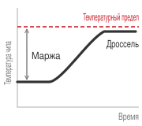
Когда охлаждение отстаёт, температура поднимается через тепловой запас, пока троттлинг её не ограничит.
Теплопередача объясняет, почему плотность меняет стойку. Воздух несёт гораздо меньше тепла на единицу объёма, чем жидкость, поэтому воздушно-охлаждаемой стойке нужны достаточный воздушный поток, давление и подъём температуры, чтобы унести её тепло. Сколько может дать зал, зависит от конструкции сервера и здания, а не от одного порога мощности стойки.
Воздушное охлаждение — доминирующая технология десятилетиями — работает за счёт продувания воздуха комнатной температуры через радиаторы, прикреплённые к чипам. Воздух поглощает тепло со скоростью, определяемой его удельной теплоёмкостью — примерно 1.0 кДж/кг/К. Нагретый воздух выбрасывается с задней стороны стойки, обычно на 15–20 градусов Цельсия теплее входного, и направляется в блок кондиционирования машинного зала (CRAC), который охлаждает его перед рециркуляцией.
Воздух — плохой теплопроводник. Его теплопроводность составляет лишь 0.026 Вт/м/К по сравнению с 0.6 Вт/м/К у воды и 400 Вт/м/К у меди. Отвод большой тепловой нагрузки воздухом требует значительного объёмного расхода. Мощность вентиляторов зависит от этого расхода, перепада давления и КПД вентиляторов; одна лишь мощность стойки не задаёт фиксированную долю охлаждения.
Тепло, которое отводит поток хладагента, зависит от того, сколько жидкости течёт, сколько тепла поглощает каждый килограмм на градус нагрева и насколько нагревается жидкость (Уравнение 3):
где
При более высоких плотностях мощности воздушный поток и давление, необходимые для охлаждения стойки, повышают энергопотребление вентиляторов и могут сделать воздушное охлаждение непрактичным ещё до того, как ИТ-нагрузка самой стойки достигнет предела мощности. Точная точка перехода зависит от геометрии стойки, температуры входа, перепада давления и политики управления вентиляторами, а не от какого-то универсального порога мощности стойки.
У воды удельная теплоёмкость составляет 4.18 кДж/кг/К — более чем в четыре раза выше, чем у воздуха, — а теплопроводность примерно в 23× раз выше. Её значительно большая плотность также позволяет малому объёму жидкости переносить существенное тепло. Разница проявляется в том, сколько жидкости должно протекать для отвода 700 W от одного GPU. Воздух при подъёме температуры на 15 градусов требует десятков литров в секунду воздушного потока (маленькая аэродинамическая труба). Вода при том же подъёме температуры требует лишь около 0.01 литра в секунду (тонкая струйка). Эта тысячекратная разница в объёмном расходе допускает компактные жидкостные тракты, но не определяет энергию прокачки. Перепад давления в холодных пластинах, трубах и фитингах, вместе с КПД насоса, определяет мощность, необходимую для поддержания этого потока.
На уровне стойки то же уравнение задаёт размеры жидкостного контура. Отвод модельной нагрузки 120 kW стойки GB200 NVL72 через воду, нагревающуюся на 10 °C, требует около 170 литров в минуту, а меньший подъём температуры требует пропорционально большего расхода. Реальный проект должен использовать ту долю тепла, которую жидкостный контур фактически захватывает, и учитывать остаточное воздушное охлаждение; пропускная способность по расходу, давление, локализация утечек и реакция на потерю расхода — отдельные требования, которые серверная автоматика из Глава 2.6.4 рассматривает как домены отказов.
Жидкостное охлаждение с прямым отводом от чипа прогоняет хладагент через холодные пластины, смонтированные на корпусах GPU. Холодная пластина контактирует с теплораспределителем через термоинтерфейсный материал; возникающее тепловое сопротивление зависит от корпуса, интерфейса, конструкции пластины и расхода. Хладагент переносит тепло через коллекторы и трубы к блоку распределения хладагента (CDU) на уровне стойки или ряда. Допустимая температура подачи зависит от оборудования, поэтому жидкостному охлаждению не обязательно нужна охлаждённая вода.
В двухконтурной схеме CDU передаёт тепло от чипового хладагента к серверному водяному контуру, который несёт его к градирням или сухим охладителям. Изоляция позволяет каждому контуру поддерживать требуемые химический состав жидкости и давление. Чиповый хладагент должен удовлетворять требованиям оборудования к совместимости и чистоте, чтобы контролировать отложения, коррозию и засоры; одна лишь чистота не гарантирует пригодности. Жидкостное охлаждение может снизить требования к воздушному потоку серверов, хотя модули памяти (DIMM), модули регуляторов напряжения (VRM) и другие компоненты без холодных пластин могут по-прежнему нуждаться в вентиляторах, а снижение потребности в вентиляторах также может уменьшить шум.
Более агрессивный подход — иммерсионное охлаждение, при котором целые серверные платы погружаются в бак с непроводящей диэлектрической жидкостью. Жидкость поглощает тепло со смоченных поверхностей, заменяя воздушный поток сервера; компоненты с высоким тепловым потоком могут по-прежнему нуждаться в радиаторах или направленном потоке, а расход, локальный тепловой поток, совместимость материалов и ёмкость теплообменника по-прежнему определяют температуры компонентов. Однофазное иммерсионное охлаждение использует жидкость, остающуюся жидкой на протяжении всего процесса; тепло уносится конвекционными потоками в баке. Нагретая жидкость поднимается к поверхности, прокачивается через теплообменник, отдающий тепло в серверный контур охлаждённой воды здания, и возвращается ко дну бака. Двухфазное иммерсионное охлаждение идёт дальше: жидкость кипит у нагретых поверхностей, переносит скрытую теплоту к конденсатору и возвращается в жидком виде, причём отвод тепла зависит от жидкости, давления, ёмкости конденсатора и условий эксплуатации. Всё здание по-прежнему тратит энергию на отвод тепла и электрораспределение, поэтому сам механизм охлаждения не определяет энергопотребление ЦОД.
Компромисс — обслуживаемость. Доступ к отказавшему компоненту требует работы с оборудованием, смоченным жидкостью, а сами диэлектрические жидкости дороги ($20–$50 за литр). Один иммерсионный бак с четырьмя серверными платами может содержать 500–1,000 литров жидкости, что составляет $10,000–$50,000 только на хладагент. Эксплуатационные процедуры для иммерсионных ЦОД резко отличаются от воздушных: требуется специальная подготовка техников и иные подходы к прокладке кабелей, поскольку все смачиваемые материалы должны быть совместимы с длительным контактом с жидкостью. В зависимости от жидкости и её присадок металлы могут корродировать, а полимерная изоляция и уплотнения — разбухать или деградировать. Квалификация совместимых материалов добавляет инженерной работы и может ограничивать выбор компонентов. Эти издержки обслуживаемости входят в проектное решение наряду с тепловыми трактами, ограничивающими пределами и паразитными нагрузками воздушного и жидкостного режимов (Таблица 14).
| Проектный вопрос | Воздушное охлаждение | Жидкостное охлаждение с прямым отводом от чипа |
|---|---|---|
| Тепловой тракт | От чипа к радиатору к движущемуся воздуху | От чипа к холодной пластине к контуру хладагента |
| Ограничивающие пределы | Воздушный поток, перепад давления, температура входа и допустимая температура компонентов | Сопротивление холодной пластины, расход, температура хладагента и ёмкость отвода тепла |
| Паразитные нагрузки | Вентиляторы серверов и ЦОД; подготовка воздуха, где требуется | Насосы, CDU, отвод тепла и любое остаточное воздушное охлаждение |
| Ограничения обслуживания | Воздушная изоляция (containment), фильтры и пути доступа | Совместимость жидкости, управление утечками и обслуживаемые соединения |
| Серверная метрика | Измерять полную ИТ- и не-ИТ-энергию | Измерять ту же границу; жидкостное охлаждение само по себе не определяет PUE |
| Пример проектной точки | Корпоративная стойка около 12 kW; лучший воздушный профиль ЦОД PUE 1.12 | Стойка GB200 NVL72 при 120 kW; жидкостный профиль ЦОД PUE 1.06 |
Жидкостное охлаждение с прямым отводом от чипа поддерживает больший тепловой поток, чем вынужденная конвекция воздуха, потому что холодные пластины направляют тепло чипа непосредственно в циркулирующую жидкость с высокой объёмной теплоёмкостью до достижения серверного отвода тепла, тогда как воздушные системы полагаются на конвективное рассеивание через оребрённые радиаторы (Рисунок 14). Температура мокрого термометра наружного воздуха (самая низкая температура, до которой испарение может охладить наружный воздух, что ограничивает испарительный отвод тепла) и плотность мощности стойки определяют, удовлетворяет тепловой диполь чипа воздушный, жидкостный или гибридный контур.
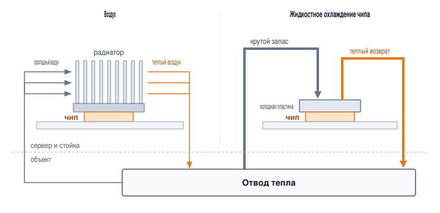
Две опорные точки ограничивают выбор для стоек этой главы. Сценарий с четырьмя узлами DGX H100 при 33.5 kW может использовать инженерное воздушное охлаждение в подходящем ЦОД, тогда как стойки класса 100 kW — плотные учебно-тренировочные стойки — нуждаются в жидкости, что повышает ёмкость отвода тепла и может снизить энергопотребление вентиляторов. Между двумя опорными точками решает пропускная способность ЦОД по воздуху. Класс охлаждения, следовательно, является конфигурационным ограничением. Именно компоновка стойки и ёмкость отвода тепла, а не только число ускорителей, определяют, сможет ли задуманная конфигурация выдерживать свою рабочую нагрузку или придётся снижать плотность или мощность.
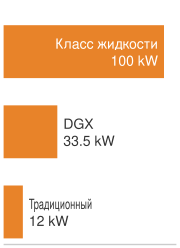
Инженерное воздушное охлаждение всё ещё способно охладить стойку DGX; класс 100 kW нуждается в жидкости.
↪ Какой вклад вносит отвод тепла в энергию ЦОД (PUE) и сколько воды потребляет тепловыделение, рассматривается в Энергия на охлаждение, отвод тепла и вода.
2.6.3 Компоновка стойки
Упаковка 33.5 kW вычислительного и теплового оборудования в стандартную 42U-стойку почти не оставляет места для традиционных серверных компоновок. В корпоративной 42U-стойке серверы устанавливаются как независимые блоки формата 1U или 2U («пицца-бокс»), каждый со своими вентиляторами, блоками питания и кабельными подключениями. Один DGX H100 вместо этого занимает 8U и содержит 8 GPU, fabric NVSwitch, несколько блоков питания и (в жидкостно-охлаждаемых конфигурациях) коллекторы хладагента с быстроразъёмными фитингами. Четыре блока DGX занимают 32U из 42U стойки, оставляя лишь 10U для коммутаторов сети, управления кабелями и PDU.
Переход от традиционных форм-факторов серверов к оптимизированным для машинного обучения конструкциям обусловлен той же проблемой плотности мощности, которая мотивирует инженерный воздушный поток или жидкостное охлаждение. Традиционный сервер 1U рассеивает 300–500 Вт и требует лишь умеренного воздушного потока для охлаждения. Узел DGX H100 рассеивает приблизительно 8.4 kW на своих 8 GPU, NVSwitch и поддерживающих компонентах, требуя либо высокопроизводительного вынужденного воздушного потока (в воздушных конфигурациях), либо жидкостной обвязки (в жидкостных конфигурациях). Форм-фактор должен вмещать как вычислительное оборудование, так и инфраструктуру теплового управления — поэтому узлы для машинного обучения существенно выше (8U против 1U) традиционных серверов.
Управление кабелями — нетривиальная инженерная задача. Каждый узел DGX H100 имеет восемь кабелей InfiniBand (по одному на GPU), два кабеля управления Ethernet, силовые кабели и, для жидкостно-охлаждаемых узлов, шланги хладагента. Полностью заполненная стойка содержит свыше 40 высокоскоростных кабелей, чья прокладка подчиняется трём строгим физическим ограничениям: зазор для воздушного потока, минимальный радиус изгиба и электромагнитные помехи. В воздушных конструкциях кабели не должны препятствовать входному или выходному воздушному потоку, поскольку даже локальный затор создаёт горячие точки, вызывающие троттлинг из-за нагрева. Высокоскоростные кабели одновременно требуют минимального радиуса изгиба (для установленного оптоволоконного кабеля обычно 10–15
Сетевое подключение стойки требует столь же пересмотра под влиянием плотности, начиная с коммутатора верхнего уровня стойки (top-of-rack, ToR). В традиционных центрах обработки данных коммутатор ToR обеспечивает каждому серверу подключение Ethernet с пропускной способностью 1–10 Гбит/с, агрегируемое в восходящие каналы к коммутаторам более высоких уровней. В ML-стойке коммутатор ToR — это коммутатор InfiniBand или высокоскоростной Ethernet, дающий 400 Gb/s на порт, и он должен справляться с пачечным, синхронизированным характером трафика распределённого обучения. В традиционной компоновке все восемь GPU узла делят один коммутатор ToR, поэтому AllReduce при параллелизме по данным сходится на этом коммутаторе и его восходящих каналах. Rail-оптимизированная компоновка вместо этого выделяет каждому индексу GPU собственный листовой коммутатор — первый уровень коммутаторов, к которому подключаются конечные точки (GPU 0 каждого узла — на листе 0, GPU 1 — на листе 1 и так далее), так что коллективные операции между узлами с одинаковыми индексами остаются на одном коммутаторе. Цена — дополнительные коммутаторы и кабели, а выгода зависит от того, как группы процессов задачи отображаются на эти per-index рейки.
↪ Как rail-оптимизированные топологии согласовывают кабельную разводку с трафиком коллективных операций, разбирается в Rail-оптимизированная топология.
2.6.4 Надёжность и экологический контроль на уровне объекта
Утечка хладагента или электрическая неисправность в одной стойке DGX H100 угрожает оборудованию на $1.4 миллионов долларов и может остановить многореечную задачу обучения на верхних уровнях иерархии доменов отказа, введённой в Глава 2.5.5. Поэтому центры обработки данных, размещающие ML-инфраструктуру, дополняют физическую безопасность непрерывным экологическим мониторингом, который становится частью вычислительного проектирования, а не запоздалой заботой инженерных служб. Под фальшполом и вдоль трубопроводов жидкостного охлаждения датчики воды обнаруживают утечки за секунды и закрывают автоматические отсечные клапаны хладагента, а контроль влажности удерживает воздух в умеренном диапазоне — достаточно сухом, чтобы исключить конденсацию, и достаточно влажном, чтобы ограничить электростатические разряды. Внутри шкафов аспирационные дымовые извещатели непрерывно отбирают пробы воздуха стойки, обнаруживая продукты горения при концентрациях значительно ниже порога чувствительности извещателей, активирующих спринклеры. Датчики вибрации на несущих конструкциях здания и каркасах стоек фиксируют сейсмические события или ударные воздействия от строительных работ до того, как они повредят дисковые накопители или ослабят кабельные соединения.
Отказы охлаждения угрожают и оборудованию, и полезной работе парка. Когда поток хладагента прекращается, плотная стойка теряет способность отводить тепло и должна сбросить частоту или отключиться до теплового разгона. Резервирование N+1 в блоках распределения хладагента (CDU) (один запасной сверх требуемого нагрузкой числа), мониторинг температуры и автоматическое сбрасывание нагрузки ограничивают затрагиваемую мощность. Аварийный воздушный путь может поддерживать работу на пониженной мощности там, где это предусмотрено проектом объекта.
Ремонтопригодность также меняет бюджет отказов. Утечки способны повредить оборудование и исчерпать охлаждающую способность — именно поэтому упомянутые выше датчики утечек управляют отсечными клапанами, а быстроразъёмные фитинги позволяют заменять узел без слива всего контура. Поэтому их уплотнения и совместимость с хладагентом должны быть частью плана обслуживания. Последствие на уровне парка зависит от того, сколько синхронизированной работы разделяет отказавший домен охлаждения.
Экономика надёжности охлаждения меняется при переходе от независимых серверов инференса к тесно связанным обучающим кластерам. При распределённом обучении с синхронным параллелизмом отказ охлаждающего контура, выводящий из строя один срез кластера, может остановить всю задачу. Рассмотрим отказ охлаждения, вызывающий тепловое отключение 256 GPU, обслуживаемых одним блоком распределения хладагента, в кластере из 10,000 GPU — примерно в десять раз больше эталонного кластера на 1,024 GPU. Пример учитывает только потерянную вычислительную мощность, не включая затраты на ремонт и замену. Если время ремонта насоса CDU составляет 4 hours, то мгновенная потеря 256 GPU по эталонной ставке парка $2 за GPU-час равна $2,048. Если предположить, что задача не может продолжаться эластично и оставшиеся 9,744 GPU недоступны для другой работы, синхронный радиус поражения раздувает стоимость до $80,000 потерянного вычислительного времени. Добавление извлечения контрольной точки и отката на 30–60 минут потерянных вычислений доводит иллюстративную сумму потерянных вычислений до $90,000–$100,000 до любых дополнительных задержек восстановления. Энергия, которую повторяет откат, относится к энергетическому счёту объекта из Энергия на охлаждение, отвод тепла и вода. Оправдывает ли резервирование охлаждения N+1 свою цену, следует из сравнения этих ожидаемых потерь от простоя и поведения восстановления с этой ценой, а не из рассмотрения резервирования как безусловного требования.
Один отказ охлаждения может остановить всю задачу обучения.
Состояние хладагента — ещё один вход надёжности. Деионизированная вода и совместимые ингибиторы подавляют гальваническую коррозию — повреждения, вызванные электрохимической разницей металлов в контуре. Биоплёнка на поверхностях теплопередачи затрудняет охлаждение и увеличивает потребность в прокачке. Обслуживание должно сохранять химию хладагента и теплопередающую производительность, поскольку загрязнённый или корродирующий контур теряет мощность до того, как откажет окончательно.
Пожарная локализация и изоляция питания напрямую влияют на надёжность и время доступности. Пожар в одной стойке способен закрыть весь зал центра обработки данных на несколько дней, пока система пожаротушения перезаряжается, а поражённая зона дезактивируется. Пожар OVHcloud в Страсбурге 2021 года показывает, как отдельное событие в одном здании при отсутствии правильной сегментации перерастает в отказ всего сайта.
Практический случай 2.1: Дата-центр, ставший доменом отказа (2021)
Контекст: OVHcloud управляла четырьмя центрами обработки данных на площадке в Страсбурге, обслуживая клиентов, чьи системы зависели от физического энергоснабжения, пожарной защиты и схемы восстановления площадки (OVHcloud 2021 г.).
Механизм: 10 марта 2021 года в здании SBG2 начался пожар. Нелокализованное распространение огня и общие пути питания уничтожили здание SBG2, повредили соседний SBG1 и вынудили аварийно отключить SBG3 и SBG4.
Последствия: Тысячи серверов были физически уничтожены, более 3,6 миллиона сайтов по всему миру ушли офлайн, а не резервированные копии данных клиентов были утрачены.
Решение: OVHcloud восстановила площадку с независимыми физическими противопожарными барьерами, изолированным распределением питания по каждому зданию и обязательным бесплатным офсайт-резервным хранилищем.
Урок для систем: Вычислительная инфраструктура шире GPU и сетевой топологии. Пожарные отсеки, изоляция питания, география резервных копий и допущения аварийного восстановления определяют, превратится ли инцидент масштаба стойки в отказ масштаба сайта. Многоузловые ML-обучающие кластеры наследуют эту физическую зависимость. Отказ одного домена питания или охлаждения дата-центра останавливает активные задачи обучения и уничтожает нереплицированные состояния контрольных точек, если только пути восстановления не пересекают физические границы объекта.
Когда средства защиты на уровне стоек созданы, вопрос надёжности поднимается на уровень резервирования объекта, где та же логика доменов отказа, что изолирует протекающую стойку, определяет, сколько дублирующей мощности, охлаждения и восстановительной способности должен купить сайт. Надёжность центров обработки данных обычно классифицируется по системе уровней Uptime Institute, где Tier III и Tier IV — типичные варианты для критически важных вычислений (Uptime Institute 2026 г.). Объект Tier III является одновременно обслуживаемым: резервные компоненты мощности и пути распределения позволяют операторам обслуживать или заменять оборудование без остановки ИТ-операций. Tier IV добавляет отказоустойчивость через независимые, физически изолированные системы, так что единичный отказ оборудования или прерывание пути распределения не должны влиять на ИТ-операции. Практическая разница не в магическом числе доступности; она в том, сколько предотвращения отказов здание покупает в электрической и механической инфраструктуре до того, как эстафету принимает программная устойчивость.
Для ML-обучения расчёт отличается от традиционных корпоративных вычислений. Задача обучения — длительный батч-процесс, а не система транзакций реального времени. Поэтому отказ объекта во время двухнедельного запуска обычно означает перезапуск с последней контрольной точки, а не безвозвратную потерю данных, при условии, что валидная контрольная точка пережила сбой в доступном домене отказа и доступные вычисления стали доступны. Перезапуск всё же несёт потерянную работу, время восстановления и, возможно, сорванный срок. Поэтому многие развёртывания обучения сочетают одновременно обслуживаемые объекты (Tier III) с агрессивной отказоустойчивостью на уровне приложения. Вместо покупки каждого уровня резервирования на уровне здания они инвестируют в контрольные точки, перезапуск задач и хранилище, способное поглотить редкие сбои объекта, и перенаправляют сэкономленные на устойчивости средства на ускорители, сеть или хранилище. Резервирование объекта и восстановление на уровне приложения закрывают разные части одного и того же риска. Обменять часть превентивной инфраструктуры на контрольные точки и восстановительную мощность можно только после проверки того, какие отказы переживает путь восстановления и приемлем ли получающийся риск времени завершения.
Контрольная точка 2.3: Физика инфраструктуры
Команда планирует развернуть 256 H100 GPU (32 узла, каждый потребляет около 8.4 kW, как вычислено в Глава 2.6.3) в существующем воздухоохлаждаемом центре обработки данных с 250 кВт доступной мощности объекта, PUE 1.5 и охлаждающей установкой, способной отвести 200 кВт ИТ-тепла.
Стойка концентрирует мощность и тепло в физическом объёме, где пределы задаёт термодинамика, а не программное обеспечение. Однако одной стойки на 32 GPU далеко не достаточно для нашей модели 175B, которой для обучения по практичному графику нужны десятки-сотни узлов — много стоек. Следующий уровень инфраструктуры агрегирует десятки-сотни стоек в единую вычислительную систему: под (pod), физический сетевой fabric которого должен проектироваться вокруг коммуникационных шаблонов и доменов отказа, создаваемых рабочей нагрузкой.
2.7 Под
Обучение нашей модели 175B на одном узле DGX H100 (8 GPU, 7,912 TFLOP/s совокупного плотного пика FP16) заняло бы около 2.8 лет при принимаемой ниже эффективности, даже если бы состояние модели поместилось в память. Примерно 73 узлов сокращают чисто вычислительное время до двух недель, а около 1,024 узлов — до одного дня, до любых накладных расходов на коммуникации и восстановление. Под — это единица масштаба кластера, делающая это возможным: множество стоек под одным высокоскоростным fabric, лимитом энергопотребления и схемой охлаждения. Термин обозначает такую организацию, а не фиксированный размер, поэтому поды в этой главе варьируются от эталонного кластера на 1,024 GPU до более крупных конфигураций, рассматриваемых ниже. Инженерная задача — соединить эти узлы в сеть, достаточно быструю, чтобы синхронизация градиентов не стала узким местом, так чтобы fabric играл роль, которую в отдельной машине играет системная шина. Проектирование пода — первая точка, где топология, мощность и домены отказа становятся общей инфраструктурой, а не заботой отдельной стойки.
Доминируют два семейства fabric. Коммутируемый жирное дерево — иерархия уровней коммутаторов с такой же пропускной способностью восходящих каналов, как и нисходящих, — обеспечивает полную бисекционную пропускную способность через восходящие каналы узлов, тогда как прямое соединение тор связывает каждый узел с соседями, используя меньше коммутаторов, но давая бисекционную пропускную способность, растущую медленнее числа узлов. Сети с топологией толстого дерева (Клоза) и Dragonfly и тор: альтернативы развивают обе темы.
Примеры масштаба пода, которые следуют, намеренно увеличиваются до восьмикратного размера эталонного кластера на 1,024 GPU. Кластер DGX H100 на 1,024 узлов содержит 8,192 GPU, 4,096 чипов NVSwitch, 8,192 HCA InfiniBand, несколько сотен коммутаторов InfiniBand, десятки тысяч кабелей и потребляет примерно 8.6 MW мощности стоек, включая выделенные каждой стойке накладные расходы на охлаждение. Он занимает 256 четырёхузловых стоек в одном или нескольких залах центра обработки данных.
Физический вес такого кластера также существенен. Каждый узел DGX H100 весит около 130 kg (288 lb), поэтому 1,024 узлов весят более 133 метрических тонн. Стойки, коммутаторы, кабели и инфраструктура охлаждения добавляют к этой сумме значительную массу. Пол центра обработки данных должен быть конструктивно рассчитан на эту концентрированную нагрузку, которая гораздо плотнее нагрузки, на которую проектировались традиционные серверные. Это конструктивное требование часто упускается при планировании объекта и может стать блокирующим ограничением при переоборудовании существующих зданий.
Физическая планировка зала центра обработки данных отражает эти ограничения плотности. Высокая плотность мощности стоек ML-обучения требует строгой изоляции горячих/холодных коридоров в секциях с воздушным охлаждением, где холодный воздух подаётся в закрытый фронт стойки, а отработанное тепло сразу же улавливается на заднем выхлопе. «Позвоночник» зала — центральный кабельный коридор, соединяющий все стойки с агрегирующими коммутаторами — должен вмещать тысячи оптоволоконных кабелей и линий питания. Надземные кабельные лотки предпочтительнее прокладки под полом для улучшения воздушного потока и доступности: они несут тяжёлые медные линии питания и хрупкие оптоволоконные соединения. Планировка должна также вместить инфраструктуру жидкостного охлаждения: размещение блоков распределения хладагента, трассы труб хладагента и отсечные клапаны, позволяющие обслуживать отдельные стойки без слива всего охлаждающего контура. Эти физические решения, принятые при проектировании объекта, спустя годы ограничивают варианты сетевой топологии, доступные команде обучения.
Обучение модели 175B на этом кластере стоит порядка
На практике накладные расходы на коммуникацию, пузыри конвейера, ввод-вывод контрольных точек, отказы оборудования и окна обслуживания в совокупности растягивают фактическое астрономическое время сверх этого базового уровня. Первые два — это «открытые» члены
Инженерный расчёт 2.4: Время обучения модели на 175 млрд параметров
Время обучения нашей модели 175B выводится из первых принципов.
Суммарные FLOPs: с той же аппроксимацией
, где и токенов: FLOPs Пропускная способность кластера: 8,192 GPU H100 на плотном FP16-пике 989 TFLOP/s обучения в 16-битной смешанной точности при предположенных 45 percent локальной вычислительной эффективности до распределённых накладных расходов:
FLOP/s до распределённых накладных расходов 3.65 EFLOP/s Базовый уровень обучения «только вычисления»: (
FLOPs)/( FLOP/s) 24.0 hours Иллюстративная цепочка накладных расходов: коэффициент масштабирования уже включает заполнение и опорожнение конвейера, поэтому отдельного шага для пузырей нет. Каждая последующая процентная надбавка добавляет время относительно предыдущего промежуточного итога, а не финального астрономического времени; коэффициенты — это сценарные допущения, а не независимо измеренные потери:
- Потери распределённого шага (масштабирующая эффективность 0.56, смоделированный уровень для 8 192 GPU, покрывающий коммуникацию и пузыри конвейера):
0.56 42.9 hours - Накладные расходы на контрольные точки (
): 44.1 hours - Отказы оборудования и перезапуски (
от промежуточного итога с учётом контрольных точек): 48.6 hours - Окна обслуживания (
): 51.0 hours
- Потери распределённого шага (масштабирующая эффективность 0.56, смоделированный уровень для 8 192 GPU, покрывающий коммуникацию и пузыри конвейера):
Суммарное время обучения в этой упрощённой сценарной цепочке составляет 51.0 hours, или около 2.1 days. Реальные производственные календари могут всё ещё растянуться до недель после учёта очередей, отладки, повторных запусков и специфических для площадки эксплуатационных запасов. Возврат этого потерянного времени — область инженерии распределённых систем.
2.7.1 Под как компьютер складского масштаба
Когда одно обучающее задание охватывает 10,000 GPU H100 через весь машинный зал дата-центра — примерно в десять раз больше эталонного кластера, — медленный сетевой уровень или отказ одного устройства останавливает вычисления всего здания. В этом масштабе под работает как компьютер складского масштаба (WSC) (Barroso и др. 2019 г.) и требует согласованного бюджета на арифметику, коммуникацию и восстановление. Округление пода до 10,000 GPU упрощает арифметику складского масштаба, и остальные примеры главы по мощности, стоимости и отказам в масштабе парка используют ту же круглую цифру.
Такой WSC предоставляет примерно 9.89 EFLOP/s FP16-пика и 19.8 EFLOP/s на FP8. Неблокирующий InfiniBand с 50 GB/s на GPU — пропускной способностью инъекции, которую каждый конечный узел может вложить в fabric, — даёт 500 TB/s суммарной пропускной способности инъекции и 250 TB/s через бисекцию — разрез, делящий кластер на две равные половины. При переподписке 4:1 на этой границе — то есть когда вышележащий уровень коммутаторов имеет вчетверо меньшую восходящую пропускную способность по сравнению с нисходящей, — смоделированная пересекающая пропускная способность падает до 62.5 TB/s. Влияние на коллективную операцию зависит от того, сколько трафика пересекает ограниченные пути, от его расписания и конкурирующих передач. Одно лишь соотношение пропускных способностей — не множитель времени коллективной операции.
↩︎ Компьютер складского масштаба как единица проектирования парка вводится в Переход к компьютеру масштаба склада.
Отношение к зданию как к одному компьютеру означает, что сервер, выделенный распределённому обучающему заданию, вносит вклад в общее время завершения, а сетевой fabric, распределённое хранилище и оркестратор парка делают ресурсы здания доступными как единую обучающую систему. Поэтому размещение стоек, цепочка подачи питания и сетевая топология должны проектироваться совместно: ошибка на любом уровне распространяется через остальные.
Первое физическое следствие — коммуникационная стена в масштабе пода, где сеть может задавать потолок масштабирования. Внутри одного узла NVLink обеспечивает достаточную пропускную способность для тензорного параллелизма, но между узлами fabric должен нести градиентные тензоры, контрольные точки и выходы стадий конвейера, поэтому машина масштаба здания быстра настолько, насколько быстры провода, связывающие её ядра. Переосмысление в духе WSC делает межсоединение полноценным архитектурным компонентом, а не периферией.
Второе следствие состоит в том, что отказ — это физическая неизбежность, а не исключительное событие. При сценарном допущении независимых отказов средний интервал между отказами GPU равен MTTF одного GPU, делённому на число GPU. При MTTF одного GPU примерно 50,000 hours кластер из 10,000 GPU имеет средний интервал порядка пяти часов, а парк на 25 тыс. GPU из Рисунок 1 — около двух. Этот сокращающийся интервал — стена надёжности. Это математическое ожидание, а не периодическое расписание, а общие отказы питания или охлаждения добавляют коррелированную экспозицию. Оценка отказов узлов в Глава 2.5.5 и управление инженерной инфраструктурой в Глава 2.6.4 — та же экспозиция в меньшем масштабе. Резервируемая инфраструктура, такая как двухпутевые линии питания и резервные коммутационные fabric, может предотвратить часть прерываний; хранилище контрольных точек и мощность восстановления ограничивают потерянный прогресс, когда работающее задание вынуждено остановиться. Оба элемента должны входить в физический дизайн. Избыточность не даёт многим отказам компонентов остановить задание, а контрольные точки ограничивают потерянную работу, когда это всё же происходит.
Третье следствие — то, что строительные блоки комбинируются по-разному в зависимости от рабочей нагрузки, которую они должны нести. Под не собирается из единого канонического списка деталей: межсоединение, коммутация и размещение памяти выбираются под коммуникационный и ёмкостный паттерн, который навязывает доминирующая рабочая нагрузка. Три дизайна пода показывают этот диапазон (Таблица 15). NVIDIA SuperPOD соединяет GPU через InfiniBand fat-tree ради any-to-any гибкости, под Google TPU жёстко соединяет чипы в тор ради пропускной способности потоковой передачи данных, а под для рекомендаций, построенный под Архетип B, располагает тот же класс ускорителей вокруг памяти для эмбеддингов, а не вокруг сырых вычислений.
| System | NVIDIA SuperPOD | Google TPU Pod | Recommendation pod |
|---|---|---|---|
| Interconnect | InfiniBand Fat-Tree | 3D Torus ICI | RoCE (RDMA over Ethernet) |
| Switching | External Switches | Direct Chip-to-Chip | Leaf/Spine Ethernet |
| Topology | Any-to-any | Nearest-Neighbor Mesh | Rail-optimized |
| Optimization | Flexibility | Dataflow Throughput | Embedding Memory |
| Dominant workload | Diverse Research | LLM Training | Recommendation |
Рекомендательный под — самый наглядный случай, когда раскладку памяти, а не вычисления, определяет сама структура нагрузки; это физическое воплощение Архетипа B (DLRM в масштабе). Его таблицы эмбеддингов достигают 10 TB и более, и, как показал маяк 2.1, для одного лишь их хранения потребовалось бы не менее 15 узлов DGX H100 с HBM, тогда как плотные слои нейросети, работающие поверх этих эмбеддингов, сравнительно невелики. Проектирование с приоритетом рекомендаций разделяет их по уровням иерархии памяти. Таблицы эмбеддингов терабайтного масштаба размещаются в DRAM хостовых CPU (примерно $3–$5/ГБ), а плотные слои исполняются на GPU, где плотность вычислений оправдывает стоимость HBM в $10–$15/ГБ. Таблицы эмбеддингов создают требование к ёмкости, но мелкие случайные обращения способны и насытить суммарную пропускную способность памяти, и выставить задержку доступа при высокой конкурентности. Размещение на хосте обменивает стоимость ёмкости на пропускную способность поиска и передачу хост–ускоритель, поэтому рабочая нагрузка должна подтвердить оба бюджета. Урок для систем: оптимальная инфраструктура специфична для нагрузки, а не максимизирует характеристики «на бумаге». Развёртывание вычислительно-оптимизированных узлов под нагрузку, ограниченную ёмкостью памяти, оставило бы большую часть пропускной способности ускорителя невостребованной из-за проблемы, для которой его кремний никогда не был узким местом.
Физический дизайн задаёт ограничения, а не операционную политику; последующие главы превращают его измерения — энергопотребление, ёмкость, топологию, надёжность и устойчивую пропускную способность — в решения о размещении, восстановлении, мониторинге и ответственности. Для этой главы остаётся одно аппаратное решение. Когда перед глазами весь стек уровней — от ускорителя до складомасштабируемого компьютера, выбор ускорителя можно оценивать уже относительно всей иерархии, а не относительно его спецификации.
↪ Решение об ответственности, в котором устойчивая утилизация парка определяет порог «строить или покупать», развивается в Утилизация как экономический инвариант.
2.8 Выбор ускорителя для нагрузок парка
Тот же H100, который поддерживает 30–50 процентов пиковой пропускной способности при хорошо настроенном обучении с крупными батчами, может демонстрировать утилизацию менее 5 процентов при одно-запросном инференсе, потому что связывающее ограничение смещается с арифметики на пропускную способность памяти. Вычислительная пропускная способность ускорителя, пропускная способность и ёмкость его памяти, энергопотребление имеют смысл только в отношении той нагрузки, которая на нём выполняется. Поэтому выбор подходящего ускорителя требует сопоставления каждого архетипа нагрузки с его положением на графе «крыши» (roofline) и определения того, какой физический ресурс доминирует в его производительности.
Для сквозного примера с 175B крупные локальные матричные операции позволяют вывести значительную часть обучающей работы выше гребня «крыши». Тогда важна не только арифметическая пропускная способность, но и ёмкость, нужная для шардированного состояния, и межсоединение, необходимое разбиению. Кандидатами для оценки под одну и ту же нагрузку и целевое качество являются конфигурации H100, B200 и TPU v5p. Выбранный программный стек должен выражать требуемые операции достаточно эффективно, чтобы преимущество аппаратуры проявлялось в устойчивом исполнении.
Обслуживание той же языковой модели меняет ответ — по той причине, которую установил ноутбук о задержке на токен 2.1. При размере батча 1 пропускная способность H100 в 3.35 TB/s определяет пропускную способность декодирования, пока значительная часть арифметического кремния простаивает, поэтому ключевой метрикой становится пропускная способность памяти на доллар, а не пиковый TFLOP/s. Формирование батчей помогает по той причине, которую количественно показал Глава 2.3.2: каждое чтение весов переиспользуется для большего числа запросов — именно поэтому сервисные системы так упорно формируют батчи, не нарушая целевых показателей (SLO) хвостовой задержки. Нагрузка не сменила название, но связывающий член «железного закона» одиночной машины сместился с арифметики на перемещение данных, и вместе с ним меняется выбор ускорителя.
Рекомендательные модели делят решение между разреженным поиском и плотными вычислениями — это случай раскладки памяти, который уже был разрешён рекомендательным подом в Глава 2.7.1. Визуальные нагрузки и диффузионные модели, генерирующие изображение последовательным удалением шума через повторные проходы сети денойзинга, смещаются обратно к арифметической пропускной способности, поскольку свёртки (Таблица 7), блоки внимания и сети денойзинга интенсивно переиспользуют данные. Диффузионный инференс делает это особенно наглядным. Стандартная конфигурация Stable Diffusion v1.5 выполняет 50 denoising steps, так что сервис оплачивает последовательность полных прогонов модели, а не один шаг декодирования на токен. Для таких нагрузок, как только состояние модели помещается в память, TFLOP/s на доллар часто доминирует над пропускной способностью на доллар.
Смесь экспертов (MoE) активирует лишь часть значительно большего набора параметров для каждого токена (Shazeer и др. 2017 г.); у Mixtral-8x7B (Jiang и др. 2024 г.) 46.7B суммарных параметров, но лишь 12.9B активных на токен, поскольку её маршрутизатор выбирает 2 experts из 8 experts экспертов. Маршрутизатор доставляет токены к этим экспертам между устройствами через коллективную операцию AllToAll, так что следствием выбора становится fabric с достаточной бисекционной пропускной способностью вместе с балансировкой нагрузки — иначе теоретическая экономия не проявится в трейсе обучения (Fedus и др. 2022 г.; Lepikhin и др. 2021 г.). Мультимодальные модели аналогично совмещают фазы с разной арифметической интенсивностью и поведением при формировании батчей — например, кодирование изображения и декодирование текста. Их относительная стоимость и размещение определяют, что именно — гибкое планирование, дополнительная память или пропускная способность коммуникаций — изменит критический путь; само по себе число модальностей не выбирает архитектуру ускорителя, поэтому планировщик должен следовать за данными, которыми обмениваются реальные фазы.
↪ Маршрутизация AllToAll в MoE и дисбаланс нагрузки экспертов развиваются в Динамическая маршрутизация и дисбаланс экспертов в MoE AllToAll.
Системный взгляд 2.2: Подбор оборудования под рабочую нагрузку
Разнообразие нагрузок может оправдать гетерогенный парк, где каждый пул провиженится под свой связывающий ресурс. Выигрыш возникает от соответствия аппаратуры порученной ей работе при сохранении баланса каждой тесно синхронизированной обучающей группы. Решение на уровне парка должно учитывать этот выигрыш от соответствия вместе со стоимостью поддержки нескольких платформ.
2.8.1 Компромиссы точности и пропускной способности
Записать в таблицу ёмкости двукратное ускорение обучения от FP8 или рассчитать пул обслуживания под веса FP16, когда контроль качества прошёл бы и при INT4, — можно исказить количество устройств в парке в два раза и более. Форматы чисел и пиковые скорости из Глава 2.4 становятся решениями уровня парка, как только они определяют, сколько ускорителей требует задание. FP8 удваивает заявленный арифметический потолок H100 для поддерживаемых операций — с 989 TFLOP/s до 1,979 TFLOP/s на GPU, — но это удвоение — сравнение пиковых ёмкостей, а не ускорение обучения, которое можно записать до валидации на нагрузке. Размер инфраструктуры должен рассчитываться по устойчивой скорости подтверждённой политики точности.
Для инференса квантизация меняет и хранение весов, и возможную топологию аппаратуры. Наша модель на 175B при FP16 требует 350 GB, так что одни лишь параметры занимают не менее пяти H100 GPU по 80 GB. Квантизация до INT8 вдвое уменьшает объём весов до 175 GB, что помещается на трёх GPU, а INT4 сокращает его дальше до 87.5 GB, что помещается на двух GPU. Это границы ёмкости только по весам; метаданные квантизации, состояние внимания и рабочая область тоже требуют памяти. Чтение 4-битных весов вместо 16-битных вчетверо сокращает сырой объём данных, но не меняет физическую пропускную способность и не гарантирует четырёхкратного снижения задержки на токен. Реализованный выигрыш определяют поддержка со стороны ядер, работа по конвертации, прочий трафик и любое изменение числа устройств — при условии валидации качества модели.
2.8.2 Бенчмаркинг производительности ускорителей
Команде закупок, сравнивающей ускорители, нужна опубликованная цифра, предсказывающая производительность, которую организация действительно получит. Пиковый TFLOP/s, пропускная способность памяти и TDP описывают потенциал, а не достигнутую производительность, поэтому решение сводится к тому, чьими измеренными результатами доверять и по каким правилам они получены. Отраслевым эталоном является MLPerf, поддерживаемый MLCommons. MLPerf Training сообщает время обучения референсных моделей до целевой точности, а MLPerf Inference — пропускную способность и задержку обслуживания в реалистичных условиях формирования батчей и потоковой передачи. Оба фиксируют полную производительность системы, включая эффективность программного стека, накладные расходы коммуникаций и управление памятью, а не только скорость «голого» кремния.
Результаты закрытого дивизиона фиксируют нагрузку и целевое качество, чтобы реализации можно было сравнивать, а результаты открытого дивизиона допускают более широкие изменения — правила, которые Договор об измерениях трактует как один из экземпляров контракта измерений. Ни один дивизион не предсказывает развёртывание автоматически. Прежде чем использовать результат для закупки, команда должна сопоставить нагрузку, программное обеспечение, точность, количество аппаратуры и целевое качество сабмишена с целевой системой.
Для нашей модели на 175B обучение, дообучение и обслуживание требуют отдельных измерений. Форма батча, обучаемое состояние, длина последовательности и разбиение могут изменить и потребность в ёмкости, и критический путь. Дообучение не занимает фиксированную точку между обучением и декодированием лишь потому, что обновляет существующую модель. Команда должна оценить целевые фазы на кандидатской аппаратуре с реальной моделью и конвейером данных, используя опубликованные результаты MLPerf как сравнительное свидетельство, а не прогноз развёртывания. MFU сообщает долю выбранного пика, которую полезное вычисление модели усредняет за окно измерения. Время обучения референсной модели до целевой метрики захватывает также простои ввода-вывода, контрольные точки и задержки рестарта, которые может опустить окно MFU в установившемся режиме, хотя ни одна из метрик не устанавливает достигнутое качество модели.
2.8.3 Инфраструктурные особенности инференса
Обучение и обслуживание предъявляют противоположные требования к одному кластеру, поскольку оптимизируют на разных временных масштабах. Крупный обучающий запуск — это одно долгое задание, занимающее своё выделение днями или неделями и оцениваемое по устойчивой пропускной способности и времени до целевого качества. Его шаги повторяют одни и те же обмены, поэтому коммуникационную потребность охарактеризовать проще, чем поток прибытия запросов, а отдельная операция может занимать от миллисекунд до секунд без вреда, хотя сбои, ввод-вывод и изменения формы исполнения всё же влияют на расписание. Обслуживание обученных моделей должно вместо этого превращать ту же аппаратуру в ответы на множество независимых короткоживущих запросов, прибывающих через нерегулярные интервалы, каждый — под целевой задержкой, которая для интерактивного использования измеряется десятками миллисекунд.
Инфраструктура обслуживания должна выполнять целевые задержки при приемлемой стоимости запроса под переменной нагрузкой. Независимые запросы можно назначать разным репликам, но реплика, шардирующая модель между устройствами, всё равно обменивается данными внутри каждого запроса. Обработка промпта, последовательные шаги декодирования и полные ответы также имеют разные бюджеты задержки. Поэтому планирование ёмкости должно специфицировать смесь запросов, размещение модели и целевые показатели обслуживания прежде, чем заключать, что обслуживанию нужна меньшая сетевая ёмкость, чем обучению; обучение и обслуживание расходятся по утилизации, размещению модели, сетевому трафику и метрике стоимости, которой они оцениваются (Таблица 16).
| Измерение | Инфраструктура обучения | Инфраструктура обслуживания |
|---|---|---|
| Утилизация GPU | Крупные локальные батчи выталкивают плотные слои в режим, ограниченный вычислениями; хорошо настроенные запуски обычно удерживают 30–50% MFU. | Декодирование при батче 1 глубоко ограничено памятью и может опускаться ниже 5% MFU; батчи повышают утилизацию ценой задержки, в пределах ёмкости памяти. |
| Размещение модели | Тензорный и конвейерный параллелизм распределяют одну модель по многим GPU. | Реплики модели или крупные шарды обрабатывают независимые запросы, поэтому потребность в памяти масштабируется с ёмкостью одновременного обслуживания. |
| Сетевой трафик | Разбиение определяет обмены градиентами, активациями и параметрами между воркерами. | Независимые реплики могут обслуживать отдельные запросы, но шардируемые реплики всё же требуют меж-устройственных обменов внутри каждого запроса. |
| Метрика стоимости | Стоимость завершённого запуска при целевом качестве включает измеренные накладные расходы расписания и восстановления. | Стоимость на запрос или на 1 000 токенов зависит от формы запроса, целевых задержек, утилизации и провижененной ёмкости. |
Поэтому обслуживание нельзя планировать как обучение с меньшими батчами: цель оптимизации меняется с синхронизированной пропускной способности на ограниченные задержкой и непрерывно биллингуемые запросы. Следствие в том, что эффективная инфраструктура обслуживания часто использует иную аппаратуру, иное программное обеспечение и иное проектирование ЦОД, чем инфраструктура обучения. Некоторые организации используют GPU предыдущего поколения (A100) для обслуживания, потому что пропускная способность памяти на доллар может конкурировать с более новыми GPU, а более низкий TDP (400 W против 700 W) позволяет более высокую плотность стоек и меньшие затраты на охлаждение.
Сама нагрузка инференса делится на две различные фазы с противоположными узкими местами. Фаза префилла обрабатывает токены промпта параллельно, повышая переиспользование весов и потенциально приближаясь к вычислительному потолку, когда промпт и форма батча поставляют достаточно работы. Фаза декодирования генерирует токены последовательно для каждого запроса и при малых размерах батчей глубоко ограничена пропускной способностью памяти. Сервисные системы повышают утилизацию, допуская и завершая запросы на границах итераций — это называется непрерывным формированием батчей, — и ограничивая, насколько работа над промптом задерживает следующую итерацию декодирования; эти механизмы развивает Обслуживание в масштабе.
Прикидка «на салфетке» показывает, как быстро мощность обслуживания достигает масштаба обучения. Один тензорно-параллельный реплика основного примера модели на восьми-GPU узле считывает свои FP16-веса один раз за шаг декодирования, что занимает не менее 13.1 ms при пропускной способности HBM у H100. Формирование батчей из 32 одновременных запросов даёт около 2,450 tokens/s на реплику. Сервис, обрабатывающий 1,000 requests/s при 250 выходных токенов на запрос, должен генерировать 250,000 tokens/s, что требует не менее 103 реплик, то есть 824 GPU — большую часть эталонного обучающего кластера на 1,024 GPU. Эта оценка является нижней границей, поскольку она игнорирует трафик кэша ключей и значений, работу prefill и запас на всплески нагрузки и отказы; Стратегии формирования батчей в масштабе заменяет её моделями формирования батчей, учитывающими ёмкость кэша ключей и значений, переменную длину запросов и целевые задержки. Цели надёжности также различаются. Обучающее задание может пережить отдельный отказ, поскольку контрольные точки (checkpoint) восстанавливают потерянный прогресс, тогда как зависший реплика обслуживания задерживает каждый направленный к нему запрос, пока трафик не переключится на другой.
2.8.4 Матрица выбора ускорителя
Сочетание режима рабочей нагрузки, политики точности и целевых задержек обслуживания даёт процедуру закупки в Таблица 17. Её кандидатные конфигурации опираются на репрезентативные допущения, а не на фиксированное сопоставление семейств моделей узким местам или вендорам. Правило состоит в том, чтобы сначала диагностировать ограничивающее условие, а затем сравнивать устойчивую полезную работу в рамках бюджетов ёмкости, качества, задержки и инфраструктуры. Столбец ограничений в таблице относится к отдельному устройству — к тому, что должен обеспечивать один ускоритель. Реестр архетипов из Три системных архетипа отвечает на другой вопрос: какое условие связывает парк в целом, поэтому рабочая нагрузка может быть ограничена вычислениями на каждом устройстве и при этом ограничена коммуникацией на уровне кластера, как архетип A.
| Рабочая нагрузка | Ограничивающее условие | Ключевая метрика | Рекомендуемый класс |
|---|---|---|---|
| Обучение LLM ( |
Вычисления (большой батч) | Устойчивая полезная пропускная способность при подтверждённой точности, пропускная способность интерконнекта | H100/B200, TPU v5p |
| Инференс LLM (батч=1) | Пропускная способность памяти | ГБ/с за доллар | A100, H100 (bandwidth/$) |
| Инференс LLM (батчи) | Вычисления + пропускная способность | Устойчивая пропускная способность токенов в пределах ограничений задержки и ёмкости | H100, B200 |
| Обучение моделей зрения | Вычисления (большие пространственные размерности) | Устойчивая полезная пропускная способность при подтверждённой точности | Конфигурации H100/B200 для оценки |
| Рекомендации (эмбеддинги) | Ёмкость памяти | ГБ за доллар | Гибрид CPU DRAM + GPU |
| Дообучение ( |
Ёмкость памяти (состояние близко к пределу HBM) | Ёмкость HBM | Кандидат класса A100 по ёмкости |
| Исследования/прототипирование | Гибкость | Программная экосистема | GPU или ускоритель с необходимой поддержкой операторов |
Для нашего основного примера модели на 175B таблица Таблица 17 разделяет закупку для обучения и закупку для обслуживания. Сначала определяется условие рабочей нагрузки; программная поддержка, срок эксплуатации и измеренная устойчивая пропускная способность сравниваются только среди кандидатов, прошедших это условие. Более дешёвый ускоритель-час полезен, лишь если он обеспечивает требуемую пропускную способность в рамках бюджетов ёмкости, задержки и инфраструктуры.
Контрольная точка 2.4: Выбор ускорителя
Инженерной команде нужно развернуть модель с 70 млрд параметров и для обучения, и для инференса. Обучение будет использовать размер батча 2048 на 256 GPU в течение 3 месяцев. Инференс будет обслуживать 10 000 запросов в секунду при размере батча 1 в течение 2 лет.
Каждый из этих выборов предполагает, что границы по памяти, коммуникации и энергопотреблению остаются фиксированными на сегодняшних пределах корпусов и стоек. Технологии оборудования, сейчас входящие в развёртывание, не устраняют эти стены, но перемещают то, где каждое условие связывает систему в течение срока службы объекта.
2.9 Технологии инфраструктуры, которые двигают стены
Новый дата-центр переживёт несколько поколений ускорителей за срок службы объекта, который операторы обычно амортизируют за 15–20 лет (Barroso и др. 2019 г.), поэтому технологии будущего значимы лишь тогда, когда они меняют долговременное ограничение планирования. Полезный вопрос не в том, нова ли технология, а в том, какую стену она двигает, какая новая стена появляется после этого и какое решение по проектированию парка меняется в результате. Compute Express Link (CXL) двигает границу ёмкости памяти, интеграция на уровне пластины — границу коммуникации между чипами, оптическая коммутация — границы топологии fabric и энергопотребления, а передовая упаковка — границу кристалла внутри корпуса ускорителя. Ни одна из них не отменяет физику перемещения данных; каждая лишь переносит то место, где командам инфраструктуры приходится тратить мощность, охлаждение, средства и сложность ПО.
2.9.1 Compute express link (CXL)
Хранение 1,400 GB состояния оптимизатора Adam или таблиц эмбеддингов терабайтного масштаба внутри HBM ускорителя расходует самый дорогой уровень памяти кластера на данные, к которым обращаются лишь один раз за обновление параметров или при разреженной выборке. CXL решает это ограничение ёмкости, строя протоколы ввода-вывода, кэширования и когерентного доступа к памяти поверх физического уровня PCIe. Поддерживаемые типы устройств и конфигурации платформ определяют, какие из этих возможностей доступны. Расширители памяти и пулы памяти могут сделать ёмкость хоста менее жёсткой, но доступ со стороны ускорителя требует и поддерживаемого пути данных, и программного размещения. Планирование парка должно установить эти возможности прежде, чем считать пул доступной памятью для обучения.
Для ML-обучения естественная цель — холодное или фазово-локальное состояние, а не активный рабочий набор матричных умножений. Состояние оптимизатора Adam объёмом 1,400 GB нашей модели на 175B затрагивается при обновлении параметров, а не прокачивается через каждую операцию Tensor Core. Общий пул CXL мог бы поэтому снизить давление на память узла, храня фрагменты состояния оптимизатора, переполнение таблиц эмбеддингов или буферы локального кэша данных вне уровня HBM ускорителя. Обучающему фреймворку всё равно приходится аккуратно планировать это состояние, но проблема размещения становится менее бинарной, чем «помещается в этот узел» или «выгружается на хранилище».
Новая стена — пропускная способность. Репрезентативный путь памяти CXL поверх PCIe Gen5 x16 обеспечивает 64 GB/s, тогда как HBM у H100 — 3.35 TB/s. Этот разрыв в 52× означает, что веса и активации для прямого и обратного проходов всё ещё должны находиться в HBM. CXL — это уровень ёмкости, а не замена HBM. Для проектирования парка планировщикам следует спрашивать, могут ли серверные платформы, компоновка стоек и оркестрация ПО принять пулы памяти CXL, а не устраняет ли CXL потребность в памяти ускорителя с высокой пропускной способностью.
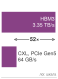
HBM остаётся быстрее в 52×, поэтому CXL даёт только ёмкость.
2.9.2 Ограничение планирования на уровне пластины
На противоположном от CXL крае находится пластинный процессор (wafer-scale engine), представленный в Глава 2.2.1. Его fabric на пластине устраняет передачи уровня корпуса и печатной платы для размещённых операций, но не делает коммуникацию бесплатной. Планирование инфраструктуры вместо этого смещается к ёмкости, размещению и входной пропускной способности.
Наша основная модель на 175B требует 350 GB только на FP16-веса, что далеко превосходит 44 GB SRAM на пластине. Cerebras решает это через потоковую передачу весов: внешние блоки MemoryX подают веса на пластину по пути с пропускной способностью 1.2 TB/s, пока пластина исполняет каждый слой, отвязывая ёмкость модели от памяти на пластине. Потоковая передача весов была спроектирована для обучения. Активации остаются на пластине, пока веса поступают послойно, а градиенты передаются обратно в MemoryX, который выполняет обновление оптимизатора. Подход работает, когда вычисления каждого слоя достаточно велики, чтобы скрыть время передачи. Пластина обменивает стену коммуникации на стену пропускной способности передачи.
Урок для планировщиков инфраструктуры не в том, что пластинные системы заменяют GPU-парки. Он в том, что близость памяти и её ёмкость обмениваются друг на друга. Конструкции в духе WSE покупают необычайную локальную пропускную способность, помещая рабочий набор рядом с арифметикой, тогда как CXL покупает гибкую ёмкость, отодвигая память дальше. HBM занимает промежуточное положение: вне чипа, но в корпусе; меньше памяти хоста, но достаточно быстрая для активных вычислений. Правильная архитектура — та, чей уровень памяти соответствует паттерну повторного использования рабочей нагрузки.
2.9.3 Перестраиваемые топологии и оптическая коммутация
За пределами корпуса оптическая коммутация (OCS) двигает границы топологии fabric и энергопотребления. Массивы зеркал на микроэлектромеханических системах (MEMS) направляют свет между портами оптоволокна без преобразования в электрическую форму. Физическую топологию пода (pod) можно, следовательно, переподключать под каждое задание и вокруг отказавшего оборудования, как в подах Google TPU v4. Однако перепроектирование в миллисекундном масштабе ограничивает OCS выделением на уровне заданий, а не маршрутизацией отдельных сообщений. Оптическая коммутация каналов и реконфигурируемая топология подробно разбирает механизм, развёртывание TPU v4 и его ограничения по изоляции отказов.
Общая тема — перемещение ограничений, а не их устранение. CXL выталкивает ёмкость наружу, в fabric, где дисциплинирующим пределом становится пропускная способность PCIe, тогда как интеграция на уровне пластины втягивает коммуникацию внутрь кремния, где вступают в игру ёмкость на пластине и выход годных. Аналогично передовая упаковка — с 2.5D-интерпозерами вроде CoWoS от TSMC и 3D-стекированием вроде SoIC — сжимает расстояние между кристаллами за пределом ретикулы. Она оставляет стойке поглощать полученную плотность мощности, которую нужно сверять с бюджетами корпуса и охлаждения. Оптическая коммутация, в свою очередь, устраняет опто-электро-оптическое преобразование внутри коммутатора лишь для того, чтобы новой границей стала задержка перепроектирования. Планирование инфраструктуры поэтому по-прежнему начинается с определения того, куда двигается следующий байт, как быстро он должен прибыть и какую физическую систему нужно построить, чтобы это перемещение не доминировало в рабочей нагрузке.
2.10 Заблуждения и подводные камни
Поскольку узкие места перемещаются, а не исчезают, команды вычислительной инфраструктуры часто оптимизируют видимую спецификацию, упуская связывающее физическое ограничение. Каждое заблуждение и подводный камень ниже превращает урок уровня узла, стойки, пода или объекта в эксплуатационное предупреждение.
Заблуждение: больше GPU всегда означает быстрее обучение.
Заблуждения и ловушки предупреждала против чтения вычислительного бюджета как прогноза по настенным часам. Аппаратная форма той же ошибки предполагает, что время обучения масштабируется линейно с числом GPU, так что удвоение GPU вдвое сокращает время обучения. На практике накладные расходы на коммуникацию растут с размером кластера, и смоделированные в этой главе эффективности масштабирования показывают, насколько быстро.
Закон Амдала ограничивает ускорение, когда фиксированная рабочая нагрузка имеет фиксированную последовательную долю. Распределённое обучение также несёт затраты на коммуникацию, конвейеры и ввод-вывод, которые могут меняться с разбиением и масштабом; они не сводятся к неизменной последовательной доле. Для модели на 175B параметров с 350 GB градиентов AllReduce на каждом шаге обучения должен объединять вклады по всей участвующей группе. Это можно делать кольцевым или древовидным обменом; прямые передачи между каждой парой не требуются.
Даже для тщательно спроектированного fabric смоделированная эффективность масштабирования основной модели падает с 0.87 при 256 GPU до 0.83 при 1,024 GPU и 0.56 при 8,192. Рост от эталонного кластера к сценарию на 8 192 GPU из Глава 2.7 умножает аппаратный коэффициент на 8×, а скорость — лишь на 5.4×, причём 44 percent локально достижимой пропускной способности большего кластера теряется на коммуникацию и пузыри конвейера. Такой запуск всё же завершается за дни, поэтому масштаб стоит покупать ради срока, но каждый добавленный GPU возвращает меньше предыдущего; без спроектированного fabric и перекрытой коммуникации кривая выравнивается намного раньше.
Правильный подход — профилировать полезное время вычислений, наблюдаемое время коммуникации и время простоя на текущем масштабе до покупки следующего пода. Если добавляемые GPU преимущественно увеличивают наблюдаемую коммуникацию, закупка приобретает время простоя, а не прогресс обучения. Математика эффективности масштабирования превращает это локальное соотношение в оценку эффективности масштабирования до commitment на закупку.
Ловушка: Планирование пропускной способности обучения только по пиковому FLOP/s.
Пиковый FLOP/s описывает лишь одну границу на модели «крыши». В точке хребта H100 FP16 — примерно 295.2 FLOP/byte — граница по пропускной способности памяти и граница по арифметике совпадают; операции с более низкой интенсивностью не могут приблизиться к арифметическому пику за счёт одних лишь дополнительных вычислений. В оценке weight-streaming для batch-1 из этой главы декодирование с интенсивностью около 1 FLOP/байт задействует менее 1 процента арифметического пика. Prefill и обучение дают больше повторного использования, но даже хорошо настроенные крупные обучающие прогоны обычно удерживают лишь 30–50 процентов пика, если учесть ядра внимания и нормализации, ограниченные памятью, пересчёт активаций, зависимости и коммуникацию. Закупке нужны эти измерения для целевой фазы исполнения.
Заблуждение: Ограничения по питанию и охлаждению можно решить после покупки ускорителей.
Команды, планирующие закупку GPU только из вычислительных требований и не проверяющие, способна ли целевая площадка выдать необходимую мощность и охлаждение, упираются в жёсткие физические пределы с длинными сроками исполнения. Одна стойка из четырёх систем DGX H100 требует 33.5 kW мощности. Модернизация электроснабжения дата-центра (новые трансформаторы, распределительные щиты и запас UPS) и его охлаждающего хозяйства (чиллеры, трубопроводы, насосы) — это строительные проекты, планируемые месяцами, а не днями. Даже внешне простые изменения, например модернизация PDU в одной стойке с 20 кВт до 60 кВт, могут потребовать новой кабельной разводки и щитовых автоматов. Организации, заказывающие оборудование без подтверждения готовности площадки, рискуют получить миллионы долларов GPU в грузовых контейнерах на парковке, пока здание переоборудуется. Ускорители могут прибыть быстрее, чем площадка будет готова их питать и охлаждать, — это делает такое несоответствие практическим риском планирования.
Ловушка: Покупка более нового ускорителя без проверки арифметической интенсивности рабочей нагрузки.
Предположим, команда разворачивает B200 GPU (4,500 TFLOP/s пиковый FP8) для инференса модели с 7 млрд параметров при батче размером 1, где арифметическая интенсивность около 1 FLOP/байт помещает рабочую нагрузку глубоко в область, ограниченную памятью. Пропускная способность памяти B200 (8 TB/s) в 2.4× раз выше, чем у H100 (3.35 TB/s). Сравнение FP8 на B200 с производительностью класса FP16/BF16 на H100 даёт пиковое арифметическое отношение около 4.6×, но также меняет соглашение о точности. При фиксированном занимаемом объёме памяти весов модель, учитывающая только пропускную способность, предсказывает выигрыш около 2.4×. Низкая интенсивность ограничивает долю арифметического пика, которую может задействовать эта модель, хотя не измеряет время простоя; сравнение, которое имеет значение, — это пропускная способность на доллар при измеренной скорости обслуживания, и один лишь больший арифметический пик не доказывает лучшую ценность.
Заблуждение: Воздушного охлаждения достаточно для рабочих нагрузок ИИ.
Операторы устаревших площадок могут полагать, что добавления вентиляторов и мощности чиллеров достаточно для любой более плотной стойки ИИ. На практике выбор охлаждения зависит от конструкции теплоотвода системы и доступных на площадке воздушного потока, давления, температуры на входе и изоляции (containment). Инженерное воздушное охлаждение остаётся жизнеспособным для некоторых плотных конфигураций, тогда как более высокие плотности стоек могут требовать прямого жидкостного охлаждения, чтобы избежать троттлинга из-за нагрева или превышения лимитов площадки.
Заблуждение: Все GPU-часы эквивалентны.
Распространённая ошибка в сравнении затрат — считать один GPU-час на H100 взаимозаменяемым с одним GPU-часом на A100 или V100. При одном и том же соглашении о плотном FP16 пике H100 даёт 3.2× арифметической скорости A100 и 7.9× скорости V100. Если рабочая нагрузка удерживала ту же долю этих пиков при том же количестве операций и целевом качестве, 10,000 V100 GPU-часов соответствовали бы примерно 1,264 H100 GPU-часов. Это условное сравнение только по вычислениям, а не предсказание времени обучения, потому что память, коммуникация, численные приёмы и программное обеспечение могут изменить удерживаемую эффективность. Закупка должна сравнивать измеренную стоимость за полезное вычисление или за завершённый прогон, а не цену аренды или пиковый FLOP/s сами по себе.
Ловушка: Модернизация сети до выявления узкого места обучения.
Модернизация сети с 200 Gb/s до 400 Gb/s InfiniBand меняет время обучения только через коммуникацию, которую она ускоряет на критическом пути, — зеркальное отражение заблуждения о более быстром ускорителе в Заблуждения и ловушки. В примере без перекрытия с 20 секундами вычислений и 2 секундами коммуникации удвоение пропускной способности передачи снижает оценочный шаг с 22 до 21 секунд — улучшение на 4.5 процента. Этот результат предполагает, что член коммуникации масштабируется с пропускной способностью, а остальные члены остаются фиксированными. Добавление GPU или оптимизация ядер требуют отдельной оценки, потому что каждое из них может изменить коммуникацию и перекрытие. Закон парка (Fleet Law) сохраняет эти затраты видимыми при сравнении инвестиций.
Заблуждение: Средней потребляемой мощности достаточно для проектирования охлаждения.
Потребляемая мощность ускорителя меняется между фазами коммуникации, памяти и вычислений. Средняя по рабочей нагрузке величина ниже настроенного устойчивого лимита не определяет требование по охлаждению, потому что синхронизированные фазы вычислений могут одновременно приблизить много устройств к этому лимиту. Тепловой проект должен использовать устойчивую целевую спецификацию производителя при предполагаемых условиях входной температуры и охлаждения, а электрический тракт должен отдельно выдерживать документированные переходные процессы. Иначе троттлинг из-за нагрева может снизить устойчивую пропускную способность, не вызывая сбоя или явной ошибки приложения.
Ловушка: Выбор ускорителей по объёму HBM без проверки пропускной способности.
Ёмкость и пропускная способность отвечают на разные вопросы осуществимости, и модель, которая помещается в HBM, но не может быть обслужена в пределах целевой задержки, так же непригодна, как модель, не помещающаяся. Рассмотрим два гипотетических варианта для модели со 70 млрд параметров: (a) 192 GB HBM2e при 2.04 TB/s и (b) 80 GB HBM3 при 3.35 TB/s. Вариант (a) вмещает полезную нагрузку FP16 весов в 141 GB, чей «пол» потоковой передачи составляет 141 GB/2.04 TB/s = 69.2 ms. Вариант (b) не может вместить 141 GB в свою ёмкость 80 GB, но полезная нагрузка INT8 в 71 GB помещается до учёта прочего активного состояния. Его «пол» передачи весов — 71 GB/3.35 TB/s = 21 ms, отношение 3.3× между двумя оценками. Это отношение сочетает более быструю память с меньшим числом байт; вариант (a) также мог бы использовать проверенный INT8-рецепт. Выбор должен сравнивать качество на одинаковых условиях, полную ёмкость активного состояния и измеренную задержку при целевом уровне параллелизма.
Заблуждение: Загрузку данных можно починить после развёртывания.
Команды, оптимизирующие только GPU-ядра и коммуникацию, всё равно могут обнаружить свои ускорители ожидающими входных данных. Конвейер загрузки данных должен выдерживать скорость потребления кластера по всей цепочке: хранилище, предобработка и передача с хоста на GPU. Пример с предтокенизированной языковой моделью из этой главы требует скромной сырой пропускной способности, но токенизация, упаковка последовательностей и перемешивание могут изменить потребность на стороне хоста. Команды должны размер CPU-воркеров, буферизацию и параллелизм хранилища из фактического конвейера. Локальное NVMe-постановка и предвыборка полезны, когда снимают измеренное узкое место; ни то, ни другое не заменяет тестирование полного пути при параллелизме всего парка.
Ловушка: Покупка однородных кластеров без моделирования разнообразия рабочих нагрузок.
Однородное оборудование упрощает поддержку и размещение, но эту выгоду нужно взвешивать против полезной работы, которую существующие устройства ещё могут выполнять. Для нашей модели 175B обучение и декодирование с малым батчем нагружают разные ресурсы. Отдельные пулы могут использовать это различие, не помещая несогласованные устройства в одну плотно синхронизированную группу.
Пропускная способность 2.04 TB/s у A100 и 3.35 TB/s у H100 задаёт разные границы по пропускной способности. Удержание старых устройств для пула инференса может снизить затраты, когда их измеренные пропускная способность, энергопотребление и стоимость поддержки выгоднее при требуемой задержке. Различие — между балансом на уровне задачи внутри синхронизированной группы и однородностью оборудования на уровне кластера. Гетерогенный парк может сохранять сбалансированные группы, но его выгода от подбора должна покрыть добавленную сложность планирования и эксплуатации.
Ловушка: Отношение к вводу в эксплуатацию и прогону (burn-in) как к запасу графика.
Ввод в эксплуатацию — часть постройки системы, а не буфер, который можно израсходовать при задержке поставки оборудования. Тесты прогона, проверка кабелей, квалификация прошивок, тепловой прогон и стрессовые прогоны коллективной коммуникации — первый раз, когда слои узла, стойки, сети и площадки работают как одна машина. Сжатие этой фазы превращает дефекты монтажа в производственные сбои, где каждый цикл отладки простаивает весь парк, а не малое окно приёмочных тестов.
2.11 Итоги
Обучение нашей модели с 175B параметрами обнаруживает каскад ограничений: ёмкость и пропускная способность ускорителей формируют узел, мощность узла формирует охлаждение стойки, плотность стойки формирует компоновку пода, а топология и надёжность пода определяют, сколько полезной работы удерживает парк. На уровне устройства «налог на универсальность» (принцип «Налог на универсальность») объясняет компромисс между гибкостью и эффективностью для конкретной нагрузки. GPU даёт в 10–100
Наша модель с 175B параметрами связывает решения на каждом уровне. Её оценка декодирования с малым батчем требует около 350 млрд операций с плавающей точкой на токен, но перемещение полезной нагрузки FP16 весов в 350 GB через одну гипотетическую HBM-цепочку с 3.35 TB/s занимает свыше 100 мс. Осуществимое разбиение меняет и этот бюджет пути, и решение по ёмкости. На уровне узла состояние обучения превышает 2 ТБ, требуя разбиения по узлам или сокращения резидентного состояния. На уровне стойки 32 ускорителей по 700 W каждый плюс смоделированные накладные расходы хоста и сети требуют 33.5 kW квалифицированной мощности и охлаждающей ёмкости. Референсный кластер координирует 1,024 GPU, тогда как разобранный сценарий пода использует восьмикратное их число. Коммуникация, восстановление после отказов и устойчивая утилизация определяют, какая часть купленной ёмкости превращается в завершённую работу. Размер модели обнажает эти взаимодействия, но тот же учёт применим всякий раз, когда рабочая нагрузка пересекает границы физических ресурсов.
Этот метод выходит за рамки данной модели. На каждом уровне инженер определяет связывающее ограничение, количественно оценивает его эффект и распространяет последствия вверх. Более быстрый ускоритель контрпродуктивен, если система охлаждения не может отвести его тепло; более плотная стойка бесполезна, если электросеть не может её запитать; а более широкая сеть расточительна, если рабочая нагрузка не способна использовать её пропускную способность. Таким образом, инженерия инфраструктуры — это количественная дисциплина, прослеживающая решения на уровне чипов вплоть до энергопотребления стойки, охлаждения дата-центра, топологии сети, надёжности и стоимости владения.
Основные выводы: Дата-центр — это компьютер
- Стены инфраструктуры каскадируются: стены памяти, коммуникаций, энергии и надёжности возникают на возрастающих физических масштабах; предел каждого уровня становится входом для следующего, а новые технологии не устраняют стену, а перемещают её. При независимых отказах и MTTF на один GPU, равном 50,000 hours, средний интервал между отказами GPU сокращается с ростом размера парка — до примерно пяти часов в примере с парком из 10,000 GPU, поэтому восстановление и хранение контрольных точек должны закладываться в планирование инфраструктуры с самого начала.
- Ёмкость и пропускная способность — два разных теста: ёмкость определяет, помещается ли состояние модели; пропускная способность определяет, насколько быстро выполняются фазы с низким уровнем повторного использования. Для декода LLM с одиночным запросом трафик весов обычно задаёт нижнюю границу задержки. Точка гребня (
= пиковое значение FLOP/s, делённое на пропускную способность памяти) разделяет операции, ограниченные пропускной способностью и вычислениями, но где именно лежит каждая фаза обучения или инференса, определяют форма батча, слияние, точность, повторное использование и моделируемый уровень памяти. - Иерархия пропускной способности направляет размещение параллелизма: разрыв пропускной способности в 9× на направление в примере NVLink–InfiniBand говорит в пользу того, чтобы держать частые обмены тензорного параллелизма внутри домена быстрой интерконнект-сети. Конвейерный параллелизм и параллелизм по данным могут охватывать более медленные каналы, но их трафик и синхронизация всё равно должны укладываться во временной бюджет рабочей нагрузки.
- Узел агрегирует приватные памяти: восемь ускорителей умножают ёмкость HBM, но память каждого устройства остаётся приватной, поэтому 2.8 TB постоянного состояния обучения у работающей модели должны быть разделены между узлами. Тензорный параллелизм внутри узла и восемь стадий конвейера между узлами доводят это до 43.8 GB на GPU без шардирования, а шардирование оптимизатора, контрольные точки активаций и распределение памяти по уровням — следующие шаги, когда активации и рабочие области не помещаются.
- Планируйте по устойчивой пропускной способности, а не по пиковой: запуск, спланированный по пиковым FLOP/s, требует GPU-часов обратно пропорционально измеренной утилизации, поэтому планирование ёмкости должно опираться на устойчивую пропускную способность, измеренную при согласованной конвенции подсчёта FLOP модели, точности, масштабе системы и форме рабочей нагрузки.
- Энергопотребление и охлаждение стойки ограничивают устанавливаемые вычисления: ватты на стойку, потери при доставке и класс охлаждения, а не FLOP/s, определяют, сколько вычислений объект может установить и поддерживать; на масштабе пода топология сети, охлаждение и подача энергии должны проектироваться совместно под доминирующую рабочую нагрузку.
- Экспозиция отказов растёт с размером парка: при независимых отказах и MTTF на один GPU, равном 50,000 hours, в примере с парком из 10,000 GPU средний интервал между отказами GPU составляет около пяти часов. Поэтому восстановление и хранение контрольных точек должны закладываться в планирование инфраструктуры с самого начала.
- Оценивайте полезную работу, а не железо: обоснованная закупка сначала диагностирует связывающее ограничение, а затем сравнивает GPU-часы разных поколений, пиковую производительность FP8, удваивающую заявленную ёмкость, и пропускную способность на доллар для декода — только через устойчивую пропускную способность на целевой рабочей нагрузке. Энергопотребление, охлаждение, инфраструктура и утилизация затем определяют стоимость этой полезной работы за весь срок службы, так что цена одного лишь железа не может решить вопрос о закупке.
Применённый через C³, выбор жидкостного охлаждения для плотной стойки ускорителей меняет нечто большее, чем отвод тепла. Он повышает объём вычислений, который может вместить стойка, что концентрирует коммуникации на меньшем числе каналов верхнего уровня стойки (top-of-rack) и добавляет согласовательную работу по ограничению энергопотребления, изоляции отказов и обслуживанию. В бухгалтерии «Закона парка» аппаратное обеспечение этой главы фиксирует производительность на устройство за
Дальнейшие шаги: От кремния к проводам
Физическая инфраструктура простирается от транзисторов Tensor Core до мегаваттных подстанций дата-центров. Однако парк несвязанных узлов — ещё не компьютер; это склад дорогих ускорителей. Сетевой fabric превращает эти узлы в единую систему обучения, перенося между ними градиенты, активации и контрольные точки. На каждом масштабе выше узла эта глава встречала один и тот же предел в новой форме. Иерархия пропускной способности показала обрыв в 9× между NVLink и InfiniBand, а под показал, почему полезная пропускная способность зависит от паттерна коммуникаций и места его размещения. Каждый шаг обучения нашей модели 175B завершается объединением градиентов по всем 1,024 GPU эталонного кластера, поэтому самая медленная необходимая передача определяет, когда может начаться следующий шаг. Сетевой fabric отталкивается от этой синхронизации и поднимается от передачи сигналов по одному каналу через транспортные протоколы, топологию коммутаторов и поведение при перегрузках к интегрированному кластеру. На каждом уровне он спрашивает, позволяет ли fabric этим GPU обучаться как одному связному устройству — или оставляет их ждать в роли изолированных устройств.
использованная литература
Advanced Micro Devices. 2021 г. Introducing AMD CDNA 2 Architecture.https://www.amd.com/content/dam/amd/en/documents/instinct-business-docs/white-papers/amd-cdna2-white-paper.pdf .
AMD. 2023 г. AMD Instinct MI300X Accelerators. AMD product documentation. https://www.amd.com/en/products/accelerators/instinct/mi300/mi300x.html.
Barroso, Luiz André, Urs Hölzle, и Parthasarathy Ranganathan. 2019 г. The Datacenter as a Computer: Designing Warehouse-Scale Machines. Synthesis Lectures on Computer Architecture. Springer International Publishing. https://doi.org/10.1007/978-3-031-01761-2.
Cerebras Systems. 2024 г. Cerebras Systems, Inc. Registration Statement on Form S-1. https://www.sec.gov/Archives/edgar/data/2021728/000162828024041596/cerebras-sx1.htm.
Choquette, Jack. 2023 г. «NVIDIA Hopper H100 GPU: Scaling Performance». IEEE Micro 43 (3): 9–17. https://doi.org/10.1109/mm.2023.3256796.
Choquette, Jack, Wishwesh Gandhi, Olivier Giroux, Nick Stam, и Ronny Krashinsky. 2021 г. «NVIDIA A100 Tensor Core GPU: Performance and Innovation». IEEE Micro 41 (2): 29–35. https://doi.org/10.1109/mm.2021.3061394.
Choquette, Jack, Olivier Giroux, и Denis Foley. 2018 г. «Volta: Performance and Programmability». IEEE Micro 38 (2): 42–52. https://doi.org/10.1109/MM.2018.022071134.
Dennard, Robert H., Frank H. Gaensslen, Hwa-Nien Yu, Victor L. Rideout, Elias Bassous, и Antoine R. LeBlanc. 1974 г. «Design of ion-implanted MOSFET’s with very small physical dimensions». IEEE J. Solid-State Circuits 9 (5): 256–68. https://doi.org/10.1109/jssc.1974.1050511.
Dubey, Abhimanyu, Abhinav Jauhri, Abhinav Pandey, Abhishek Kadian, и др. 2024 г. The Llama 3 Herd of Models. arXiv preprint arXiv:2407.21783. https://arxiv.org/abs/2407.21783.
Epoch AI. 2026 г.a. Data on AI Supercomputers. https://epoch.ai/data/ai-supercomputers.
Epoch AI. 2026 г.b. Machine Learning Hardware. https://epoch.ai/data/machine-learning-hardware.
Fedus, William, Barret Zoph, и Noam Shazeer. 2022 г. «Switch Transformers: Scaling to Trillion Parameter Models with Simple and Efficient Sparsity». Journal of Machine Learning Research 23 (120): 1–39. https://jmlr.org/papers/v23/21-0998.html.
Foley, Denis, и John Danskin. 2017 г. «Ultra-Performance Pascal GPU and NVLink Interconnect». IEEE Micro 37 (2): 7–17. https://doi.org/10.1109/MM.2017.37.
Hennessy, John L., и David A. Patterson. 2019 г. «A new golden age for computer architecture». Communications of the ACM 62 (2): 48–60. https://doi.org/10.1145/3282307.
Horowitz, Mark. 2014 г. «1.1 Computing’s energy problem (and what we can do about it)». 2014 IEEE International Solid-State Circuits Conference Digest of Technical Papers (ISSCC), 10–14. https://doi.org/10.1109/isscc.2014.6757323.
Intel. 2024 г. Intel Gaudi 3 AI Accelerator White Paper. https://cdrdv2-public.intel.com/817486/gaudi-3-ai-accelerator-white-paper.pdf.
Intel Habana Labs. 2023 г. Intel Gaudi2 AI Accelerator HL-225B Mezzanine Card Datasheet. https://habana.ai/wp-content/uploads/2023/10/HL-225B_Datasheet_10_23.pdf.
Jiang, A. Q., A. Sablayrolles, A. Roux, и др. 2024 г. «Mixtral of Experts». arXiv preprint arXiv:2401.04088. http://arxiv.org/abs/2401.04088v1.
Jouppi, Norman P., Doe Hyun Yoon, Matthew Ashcraft, и др. 2021 г. «Ten Lessons From Three Generations Shaped Google’s TPUv4i: Industrial Product». 2021 ACM/IEEE 48th Annual International Symposium on Computer Architecture (ISCA), 1–14. https://doi.org/10.1109/isca52012.2021.00010.
Jouppi, Norman P., Cliff Young, Nishant Patil, и др. 2017 г. «In-Datacenter Performance Analysis of a Tensor Processing Unit». Proceedings of the 44th Annual International Symposium on Computer Architecture, ISCA ’17, 1–12. https://doi.org/10.1145/3079856.3080246.
Jouppi, Norm, George Kurian, Sheng Li, и др. 2023 г. «TPU v4: An Optically Reconfigurable Supercomputer for Machine Learning With Hardware Support for Embeddings». Proceedings of the 50th Annual International Symposium on Computer Architecture, 1–14. https://doi.org/10.1145/3579371.3589350.
Kanev, Svilen, Juan Pablo Darago, Kim Hazelwood, и др. 2015 г. «Profiling a warehouse-scale computer». Proceedings of the 42nd Annual International Symposium on Computer Architecture, 158–69. https://doi.org/10.1145/2749469.2750392.
Kung, H. T. 1982 г. «Why systolic architectures?» Computer 15 (1): 37–46. https://doi.org/10.1109/mc.1982.1653825.
Kung, Hsiang Tsung, и Charles E Leiserson. 1979 г. «Systolic arrays (for VLSI)». Sparse Matrix Proceedings 1978 1: 256–82.
Lepikhin, Dmitry, HyoukJoong Lee, Yuanzhong Xu, и др. 2021 г. «GShard: Scaling giant models with conditional computation and automatic sharding». International Conference on Learning Representations (ICLR).
NVIDIA. 2013 г. Tesla K20X GPU Accelerator Board Specification. https://www.nvidia.com/content/PDF/kepler/Tesla-K20X-BD-06397-001-v07.pdf.
NVIDIA. 2024 г. PCF Summary for NVIDIA HGX B200. https://images.nvidia.com/aem-dam/Solutions/documents/HGX-B200-PCF-Summary.pdf.
NVIDIA. 2025 г. Inside NVIDIA Blackwell Ultra: The Chip Powering the AI Factory Era.https://developer.nvidia.com/blog/inside-nvidia-blackwell-ultra-the-chip-powering-the-ai-factory-era/ .
O’Connor, Mike, Niladrish Chatterjee, Donghyuk Lee, и др. 2017 г. «Fine-grained DRAM: Energy-efficient DRAM for extreme bandwidth systems». Proceedings of the 50th Annual IEEE/ACM International Symposium on Microarchitecture, 41–54. https://doi.org/10.1145/3123939.3124545.
OVHcloud. 2021 г. Strasbourg Datacentre: Latest Information. OVHcloud incident update. https://corporate.ovhcloud.com/en-gb/newsroom/news/informations-site-strasbourg/.
Pilz, Konstantin F., James Sanders, Robi Rahman, и Lennart Heim. 2025 г. «Trends in AI Supercomputers». arXiv preprint arXiv:2504.16026. https://arxiv.org/abs/2504.16026.
Shazeer, Noam, Azalia Mirhoseini, Krzysztof Maziarz, и др. 2017 г. «Outrageously large neural networks: The sparsely-gated mixture-of-experts layer». International Conference on Learning Representations (ICLR).
Systems, Cerebras. 2021 г. «Wafer-Scale Deep Learning Acceleration with the Cerebras CS-2». Cerebras Technical Paper 2021. https://cerebras.ai/product-chip/.
The Fiber Optic Association. 2020 г. Fiber optic cable bend radius or diameter. https://www.thefoa.org/tech/ref/install/bend_radius.html.
Uptime Institute. 2026 г. Tier Classification System. Uptime Institute web page. https://uptimeinstitute.com/tiers.
Williams, Samuel, Andrew Waterman, и David Patterson. 2009 г. «Roofline: An Insightful Visual Performance Model for Multicore Architectures». Communications of the ACM 52 (4): 65–76. https://doi.org/10.1145/1498765.1498785.
Wulf, Wm. A., и Sally A. McKee. 1995 г. «Hitting the memory wall: Implications of the Obvious». ACM SIGARCH Computer Architecture News 23 (1): 20–24. https://doi.org/10.1145/216585.216588.
Сноски
Систолический массив: От греческого systole (сокращение) — название описывает данные, пульсирующие через сетку вычислительных элементов в ритме, подобном сердечному. Kung и Leiserson (1979 г.) предложил эту архитектуру для VLSI-чипов, у которых ограничивающим ресурсом был доступ к памяти, а не логика (Kung 1982 г.): каждый операнд, извлечённый один раз, повторно используется каждой ячейкой, через которую он проходит. Именно такое соотношение вычислений к трафику памяти вознаграждает матричное умножение в масштабах машинного обучения.↩ Вернуться к тексту
Происхождение HBM: стандартизирован JEDEC в 2013 году в результате совместной разработки AMD и SK Hynix, изначально для графических карт. ML-ускорители переняли HBM, потому что нейронные сети демонстрируют тот же жадный до пропускной способности и умеренный по ёмкости шаблон доступа, что и высококачественный рендеринг. Каждое поколение HBM примерно удваивало пропускную способность (от 128 GB/s в HBM1 до 1,2 TB/s на стек в HBM3e), однако разрыв между пропускной способностью памяти и производительностью вычислений продолжает расти, что делает HBM необходимым, но никогда не достаточным ответом на «стену памяти».↩ Вернуться к тексту
Энергопотребление SRAM (пДж/бит): чтение бита из размещённого на кристалле массива SRAM объёмом 8–32 КБ стоит примерно 0,15–0,3 пДж на техпроцессе 45 нм (Horowitz 2014 г.), тогда как выборка бита из HBM2 — около 4 пДж (O’Connor и др. 2017 г.). Эта разница в энергопотреблении на порядок — физическая причина, стоящая за слиянием ядер (kernel fusion): каждый промежуточный результат, удержанный в SRAM вместо записи в HBM, экономит и время, и существенный запас по энергопотреблению и тепловыделению.↩ Вернуться к тексту
TSV (сквозное кремниевое переходное отверстие): вертикальный медный столбик диаметром 5–10 микрометров, протравленный через кремниевый кристалл для соединения штабелированных слоёв. Изначально разработанные для CMOS-сенсоров камер смартфонов, TSV сделали возможным HBM, заменив сантиметры проводников печатной платы десятками микрометров вертикального кремния — примерно в 1,000
более короткий путь сигнала, — что и позволяет стеку предоставить 1024-битный интерфейс в рамках энергобюджета ускорителя.↩ Вернуться к тексту Кроссбар-коммутатор: топология, предоставляющая выделенный путь между каждой парой «вход—выход» одновременно. Кроссбар
требует точек коммутации, поэтому его стоимость растёт квадратично с числом портов; именно из-за этого роста полный кроссбар остаётся внутри узла, а более крупные системы переходят на многоступенчатые fabric. В этих пределах кроссбар обеспечивает полносвязную пропускную способность, которую требует тензорный параллелизм.↩ Вернуться к тексту Масштабирование Деннарда: Названо в честь Dennard и др. (1974 г.) из IBM, который показал, как размеры MOSFET, напряжение и ток могут масштабироваться так, что плотность мощности остаётся примерно постоянной. Позднее пределы масштабирования напряжения и эффекты утечек завершили этот режим постоянной плотности мощности; Hennessy и Patterson (2019 г.) описывают возникший пост-деннардовский энергетический барьер как одну из причин, по которым современная архитектура повернула к параллелизму и специализации. Для инфраструктуры МЛ траектория TDP от V100 к B200 (300 W → 1,000 W) иллюстрирует пост-деннардовскую проблему планирования: охлаждение и подача питания теперь являются равноправными с самим кремнием ограничениями проектирования.↩ Вернуться к тексту